Introduction
Contents
Introduction#
Eléments de vocabulaire#
On définit ici de manière informelle les termes utilisés dans la suite :
Population : ensemble de cardinalité finie, notée \(N\), ou infinie ;
Echantillon : sous-ensemble de la population, de cardinalité \(n\) ;
Individu : sous-ensemble de la population ou de l’échantillon, de cardinalité 1 ;
Caractère : nature de la caractéristique à laquelle on s’intéresse statistiquement. Il peut être qualitatif (nominal ou ordinal) ou quantitatif (discret ou continu).
Probabilités et statistiques#
La question qui se pose est la suivante : comment définir ou estimer la valeur de probabilité associée à un évènement ? Plusieurs points de vue ont été proposés et adoptés que nous synthétisons très brièvement.
Approche fréquentiste#
Ce point de vue historique, souvent présenté comme le plus “naturel” ou “objectif”, consiste à définir une probabilité comme la limite de la fréquence d’observation de la caractéristique lorsque la taille de l’echantillon devient infinie. On suppose ici que les probabilités sont une loi de la nature qu’il faut mesurer par l’expérience. En pratique, la probabilité d’un évènement est donc estimée/approximée en répétant un très grand nombre de fois l’expérience dans les mêmes conditions. C’est de ces expériences répétées que sont nés les outils de la statistique tels que la régression linéaire ou le test du \(\chi^2\). On rencontre néanmoins très rapidement des limitations avec ce type d’approche. D’une part, il est impossible d’un point de vue fréquentiste de traiter de petits échantillons de données. De plus, certains types de données ne sont pas exploitables en raison de leur caractère non expérimental (par exemple, quelle probabilité associer à un évènement du type “nombre de votants aux prochaines élections” qui n’est pas répétable). Enfin, il est parfois difficile de définir un modèle permettant de modéliser une erreur de mesure ou la variation observée d’un caractère dans une population.
Approche bayésienne#

Un point de vue bien différent consiste à définir les probabilités comme une mesure subjective de l’incertitude. Dans ce cadre, tout événement peut être probabilisé à partir d’un a priori de l’observateur. Ce point de vue est appelé Bayésien (fait appel à la règle de Bayes) pour calculer la loi de probabilité des évènements à partir des échantillons de données a posteriori. L’intérêt majeur de ce type de démarche est que tout est probabilisable (jusqu’aux paramètres du modèle utilisé) et qu’il s’appuie sur des résultats de la théorie des probabilités, comme le théorème central limite. Ce point de vue “subjectif” a longtemps été dénoncé par les adeptes de l’approche fréquentiste qui rejettent l’idée que l’on puisse définir un tel a priori sur les évènements. En effet, l’objection majeure que l’on oppose souvent à la méthodologie bayésienne est que deux observateurs différents, ayant des a priori différents, donneront des résultats ou des interprétations différentes.
Démarche générale#
De manière assez générale, une étude statistique consiste à obtenir des informations sur un caractère concernant une population de grande taille en s’appuyant sur celles d’un sous-ensemble de taille réduite (l’échantillon), afin le plus souvent d’orienter une décision. Le choix de l’échantillon se fera par tirage avec ou sans remise, par tirage uniforme (“au hasard”) ou non (tirage stratifié dans le cas d’un sondage par exemple, ou selon une loi de probabilité précise si une information a priori est disponible). On estime alors des propriétés d’un caractère de l’échantillon. A partir de ces estimations, on cherche à donner “au mieux” des valeurs aux paramètres correspondant de la population (la moyenne, la variance,…). L’estimation pourra être ponctuelle ou par intervalle de confiance. On pourra également s’intéresser à des tests d’ajustement (ou d’adéquation) à une loi de type donné. La décision, étape finale de l’analyse statistique, se fera par des tests statistiques.
Example 1
Un cuisinier cherche à savoir si sa sauce est suffisamment salée. Après avoir remué sa casserole, il prélève une cuillérée de sauce (l’échantillon). Il la goûte (il estime le caractère salé de l’échantillon). En fonction du résultat, il décide que la casserole de sauce (la population) est suffisamment salée ou pas.
Important
La science des statistiques se décompose donc en :
la statistique descriptive, dont l’objectif est de décrire le caractère d’un échantillon en résumant l’information qu’il contient ;
la statistique inférentielle, dont l’objectif est d’inférer, à partir de l’information recueillie sur l’échantillon, des propriétés valables sur la population, de manière la plus fiable possible.
A cette dichotomie s’ajoute la statistique exploratoire, branche de l’analyse de données, qui cherche à comprendre l’organisation des individus de l’échantillon (existe-t-il des groupes d’individus semblables ? les caractères mesurés sont-ils les plus pertinents ?…)
Nous n’abordons pas dans ce cours la statistique inférentielle.
Rappels de probabilité#
Expérience aléatoire#
Définitions#
Definition 1 (Expérience aléatoire)
Une expérience aléatoire est une expérience dont on ne peut prévoir le résultat a priori. Répétée dans des conditions identiques, elle peut donner lieu à des résultats différents.
Example 2
Le lancé de dé
Les côtes exactes d’une pièce fabriquée dans un atelier
Definition 2 (Issue)
On appelle issue d’une expérience aléatoire l’un des résultats possibles de cette expérience
Definition 3 (Univers des possibles)
On appelle univers des possibles d’une expérience aléatoire l’ensemble \(\Omega\) des issues de cette expérience.
Example 3
Lorsque l’on joue à pile ou face avec une pièce de monnaie, l’expérience a deux issues possibles et \(\Omega = \{P,F\}\).
L’univers des possibles n’est pas défini de manière unique, mais dépend de l’usage de l’experience. Par exemple, pour le lancer de deux dés, on peut être intéressé par :
le résultat du lancer, dans ce cas \(\Omega = \{(1,1), (1,2), \cdots (6,6)\}\)
la somme des deux faces et \(\Omega = [\![2,12]\!]\)
Definition 4 (Evènement)
Etant donnée une expérience aléatoire, un évènement est une assertion vraie ou fausse suivant l’issue de l’expérience. C’est donc un sous-ensemble \(E\) de \(\Omega\).
Example 4
Dans l’expérience du lancer de deux dés, on peut s’intéresser à l’évènement “la somme des deux faces est paire” ou encore “la somme est supérieure à 7”.
Si l’expérience considérée concerne les jobs effectués sur une machine on peut considérer :
\(\Omega=\mathbb{N}\) et l’évènement “le nombre de jobs ne dépasse pas 10” : \(E=[\![0,10]\!]\)
\(\Omega=\mathbb{R}^*\) et l’évènement “le job dure plus de 15 s” et \(E=]15,+\infty[\)
Il existe certains évènements particuliers :
l’évènement dit certain : c’est l’univers des possibles (par exemple “la somme des deux faces d’un lancer de deux dés est inférieure ou égale à 12”)
l’évènement impossible (“la somme des deux faces d’un lancer de deux dés est supérieure ou égale à 20”)
l’évènement simple : tout singleton de \(\Omega\)
l’évènement composé : tout sous-ensemble de \(\Omega\) de cardinalité au moins égale à 2.
Notation et opérations sur les évènements#
Les évènements peuvent être interprétés soit d’un point de vue ensembliste (Diagrammes de Venn), soit de manière équivalente d’un point de vue probabiliste.
Notation |
Interprétation probabiliste |
|---|---|
\(\omega\) |
issue possible, évènement élémentaire |
\(A\) |
évènement |
\(\omega\in A\) |
\(\omega\) réalise \(A\) |
\(A\subset B\) |
\(A\) implique \(B\) |
\(A\cup B\) |
\(A\) ou \(B\) |
\(A\cap B\) |
\(A\) et \(B\) |
\(\bar A\) |
contraire de \(A\) |
\(\emptyset\) |
évènement impossible |
\(\Omega\) |
évènement certain |
\(A\cap B=\emptyset\) |
\(A\) et \(B\) incompatibles |
\(A\setminus B = A\cap \bar B\) |
\(A\) et pas \(B\) |
Probabilités#
Objectif#
L’objectif des probabilités est de donner une mesure à la chance qu’a un évènement de se réaliser lors d’une expérience aléatoire. Pour ce faire, on définit une fonction \(P:\Omega\rightarrow [0,1]\) vérifiant certains axiomes et propriétés.
Definition 5 (Tribu)
Soit \(T\) une famille d’évènements. Pour que \(T\) soit probabilisable, il faut que :
\(\emptyset\in T, \Omega\in T\)
Si \(A_i\) est une suite dans \(T\) alors \(\cup_iA_i\in T\) et \(\cap_iA_i\in T\)
Si \(A\in T\) alors \(\bar A\in T\)
\(T\) est une tribu et \((\Omega,T)\) est un espace probabilisable.
En pratique, on choisit souvent la tribu engendrée par une famille de \(n\) évènements \(A_i\), qui est l’ensemble des parties de \(\Omega\) obtenues en effectuant l’union de \(k\) évènements \(A_i,i\in [\![1,n]\!]\).
Example 5
Dans le cas du lancer d’un dé, \(\Omega = \{1,2,3,4,5,6\}\), et :
la tribu engendrée par la famille d’évènements \(\{\{1,3,5\},\{2,4,6\}\}\) est \(\{\emptyset,\{1,3,5\},\{2,4,6\},\Omega\}\).
la tribu engendrée par la famille d’évènements \(\{\{1\},\{2\},\{3\},\{4\},\{5\},\{6\}\}\) est l’ensemble des parties de \(\Omega\). Plus généralement, si \(\Omega\) est dénombrable, cette tribu est appelée tribu discrète.
On peut également s’intéresser, si \(\Omega=\mathbb R\), à la tribu engendrée par les ouverts de \(\mathbb{R}\), on parle alors de tribu borélienne.
Probabilité#

Axiom 1 (Axiomatique de Kolmogorov)
On appelle probabilité sur \((\Omega,T)\) une application \(P\) de \(T\) dans [0,1] vérifiant :
\((\forall A\in T)\; P(A)\in[0,1]\)
\(P(\Omega)=1\)
Pour toute famille dénombrable \((A_i)\) d’évènements disjoints \(P(\displaystyle\bigcup_i A_i) = \displaystyle\sum_iP(A_i)\)
\((\Omega,T,P)\) est un espace probabilisé.
Property 1
\(P(\emptyset)=0\)
\((\forall A)\; P(\bar A)=1-P(A)\)
\((\forall A,B)\; P(A\setminus B) = P(A)-P(A\bigcap B)\)
\((\forall A,B)\; P(A\bigcup B) = P(A)+P(B)-P(A\bigcap B)\)
\((\forall A,B)\) si \(A\subset B\) alors \(P(A)\leq P(B)\)
Pour toute famille dénombrable \((A_i)\) d’évènements quelconques \(P(\displaystyle\bigcup_i A_i) \leq \displaystyle\sum_iP(A_i)\)
Conditionnement#
Les probabilités conditionnelles intègrent une information supplémentaire sous la forme de l’observation de la réalisation d’un évènement donné.
Definition 6 (Probabilité conditionnelle)
Soit \(B\) un évènement de probabilité non nulle. On appelle probabilité conditionnelle de \(A\) sachant \(B\) le rapport
\(P(A\mid B) = \frac{P(A\bigcap B)}{P(B)}\)
\(P(A\mid B)\) représente la probabilité que \(A\) se réalise sachant que \(B\) est réalisé.
Remarquons que l’on peut écrire \(P(A\bigcap B) = P(A\mid B)P(B) = P(B\mid A)P(A)\).
Example 6
7% des français sont atteints d’un cancer du poumon. 70% des malades sont des fumeurs et 50% des français fument. On recherche la probabilité d’être atteint d’un cancer du poumon lorsque l’on est fumeur. L’évènement \(A\) est “avoir un cancer du poumon”, et \(B\) est “être fumeur”. D’après les données on a \(P(A)\)=0.07, \(P(B)\) = 0.5 et \(P(B\mid A)\) = 0.7. On a alors \(P(A\mid B) = \frac{P(A\bigcap B)}{P(B)}\) avec \(P(A\bigcap B)=P(B\mid A)P(A)\) d’où
\(P(A\mid B)=\frac{P(B\mid A)P(A)}{P(B}\) = 0.098
Indépendance#
Definition 7 (Indépendance)
Deux évènements \(A\) et \(B\) sont dits indépendants si et seulement si \(P(A\mid B) = P(A)\).
On a alors bien évidemment \(P(A\bigcap B) = P(A)P(B)\).
Remark 1
La notion d’indépendance est directement rattachée à \(P\) : \(A\) et \(B\) peuvent être indépendants pour une probabilité donnée, mais pas pour une autre.
On peut généraliser la notion d’indépendance à une famille d’évènements \((A_i)_{i\in[\![1,n]\!]}\) : on dira que les \(A_i\) sont mutuellement indépendants si pour tout \(I\subset [\![1,n]\!]\)
\(P\left (\displaystyle\bigcap_{i\in I} A_i\right ) = \displaystyle\prod_{i\in I} P(A_i)\)
L’indépendance mutuelle est plus forte que l’indépendance deux à deux.
Remark 2
La notion d’indépendance n’est pas une notion purement ensembliste. Deux évènements peuvent être indépendants pour une loi de probabilité et pas pour une autre.
Théorème des probabilités totales#
Theorem 1
Soit \(\{B_i\}\) un système complet d’évènements (qui forment donc une partition de \(\Omega\)). Pour tout évènement \(A\), on peut écrire
\(P(A) = \displaystyle\sum_i P(A\bigcap B_i) = \displaystyle\sum_i P(A| B_i) P(B_i)\)
Règle de Bayes#
A partir de l’égalité \(P(A\bigcap B) = P(A|B)P(B)=P(B|A)P(A)\), on définit la règle de Bayes
\((\forall A,B)\quad P(B|A)=\frac{P(A|B)P(B)}{P(A)}\)
Si \(B_i\) est un système complet d’évènements, on a de plus
\(P(B_i|A)= \frac{P(A|B_i)P(B_i)}{P(A)} = \frac{P(A|B_i)P(B_i)}{\displaystyle\sum_k P(A|B_k)P(B_k)}\)
Example 7
Un fabricant de boulons a trois usines de fabrication situées à Amiens, Besançon et Clermont-Ferrand. Amiens fournit 25% de la production, Besançon 20% et Clermont-Ferrand 55%. Les boulons de 5mm représentent 20% des boulons produits à Amiens, 30% à Besançon et 15% à Clermont-Ferrand. On répond à la question suivante : sachant que le boulon acheté a une taille de 5mm, quelle est la probabilité qu’il soit produit à Clermont-Ferrand ?
On note \(B_1\) (respectivement \(B_2,B_3\)) l’évènement “Le boulon est produit à Amiens (resp. Besançon, Clermont-Ferrand)”. On note également \(A\) l’évènement “Le boulon fait 5mm”. On cherche donc
\(P(B_3|A) = \frac{P(A|B_3)P(B_3)}{P(A)}= \frac{0.15*0.55}{0.1925}=0.428\).
On a calculé dans l’exemple une probabilité a posteriori, c’est à dire sachant une information supplémentaire (le boulon fait 5mm). La prise en compte de cette information modifie la valeur de la probabilité associée à \(B_3\). La théorie des probabilités au travers de l’approche bayésienne est adaptée pour prendre en compte toute information nouvelle.
Variable aléatoire#
Concept de variable aléatoire#
Soit un espace probabilisé \((\Omega, T,P)\).
Definition 8 (Variable aléatoire)
Une variable aléatoire est une application \(X:\Omega\rightarrow E\) (on prendra \(E=\mathbb R\))
Pour obtenir la probabilité d’une valeur quelconque image par \(X\), il suffit de dénombrer les \(\omega\) qui réalisent cette valeur.
Example 8
Si \(\Omega\) = (Pile,Face), on considère la loi de probabilité \(P\) telle que : \((\forall \omega\in\Omega)\; P(\omega)=\frac12\). \(P(X=1)= P(\{Pile\}) = \frac12\).
On dit que l’on transporte la loi de probabilité de \(\Omega\) sur \(E\) par l’application \(X\).
Les éléments de \(E\) sont les réalisations de la variable aléatoire.
Example 9
Si l’expérience consiste à observer le résultat du tirage de deux dés à 6 faces, \(\Omega = \{(1,1), (1,2), \cdots (6,5), (6,6)\}\), on considère la loi de probabilité telle que \((\forall \omega\in\Omega)\; P(\omega)=\frac{1}{36}\).
Si l’application \(X\) réalise la somme des deux éléments de \(\omega\in\Omega\), alors on a par exemple \(P(X=3)= P(\{(1,2),(2,1)\}) = \frac{2}{36}\), ou encore \(P(X=5)= P(\{(1,4),(2,3),(3,2),(4,1)\}) = \frac{4}{36}\).
Variable aléatoire mesurable#
On définit sur \(E\) une tribu \(T'\). \((E,T')\) est alors un espace probabilisable, et tout élément \(B\) de \(T'\) est un évènement. On note alors \(X^{-1}(B) = \{\omega\in\Omega,\; X(\omega)\in B\}\)
Definition 9 (Variable aléatoire mesurable)
Une variable aléatoire \(X\) est dite mesurable si et seulement si : \((\forall B\in T')\; X^{-1}(B)\in T\)
Dans les deux exemples précédents, on a par exemple \(X^{-1}(1)= \{Pile\}\) ou encore \(X^{-1}(3) = \{(1,2),(2,1)\}\) et \(P(X=3)=P(X^{-1}(3)) = \frac{2}{36}\).
On note souvent \(P_X(B) = P(X^{-1}(B))=P(\{\omega / X(\omega)\in B\})\) et on l’appelle probabilité image de \(P\) par \(X\). En calculant la probabilité de chaque réalisation de la variable aléatoire \(X\), on peut en déduire la loi de probabilité (ou distribution) de \(X\).
Pour une variable aléatoire discrète \(X\), la loi de probabilité est donc \(P_X(x_i)= P(X=x_i) = P(\{\omega / X(\omega)=x_i\})\). \(P_X\) est appelée masse ponctuelle.
Pour une variable aléatoire continue \(X\), la loi de probabilité est donc \(f_X(x)dx = P(x\leq X\leq x+dx) = P(\{\omega /x\leq X(\omega)\leq x+dx\})\). \(f_X\) est appelée densité de probabilité.
from math import floor
from random import random
import numpy as np
import matplotlib.pyplot as plt
def tirage():
d1=floor(6*random()+1)
d2=floor(6*random()+1)
return d1+d2 -1
x = np.arange(0,12)+1
f = np.zeros(12)
n=10000
for i in range(n):
f[tirage() ] += 1
f=f/n
plt.plot( x, f, 'o' )
plt.vlines( x, 0, f )
plt.ylim( bottom=0 )
plt.title("Loi de probabilité d'une variable aléatoire discrète")
plt.tight_layout()
plt.show()

Definition 10 (Fonction de répartition)
La fonction de répartition d’une variable aléatoire \(X\) est l’application \(F_X\) de \(\mathbb R\) dans [0,1] telle que \(F_X(x) = P(X\leq x)\).
\(F_X\) est donc monotone croissante, continue à droite et on a en particulier :
\(P(a\leq X\leq b) = F_X(b)-F_X(a)\)
\(P(X>x) = 1-P(X\leq x) = 1-F_X(x)\)
from math import floor
from random import random
import numpy as np
import matplotlib.pyplot as plt
def tirage():
d1=floor(6*random()+1)
d2=floor(6*random()+1)
return d1+d2 -1
x = np.arange(0,12)+1
f = np.zeros(12)
n=10000
for i in range(n):
f[tirage() ] += 1
f=f/n
data = np.arange(0, 14)
fn = np.insert(np.cumsum(f), 0, 0)
plt.figure(figsize=(10,5))
plt.subplot(121)
plt.plot( x, f, 'o' )
plt.vlines( x, 0, f )
plt.ylim( bottom=0 )
plt.title("Distribution")
plt.subplot(122)
plt.hlines(y=fn, xmin=data[:-1], xmax=data[1:],
color='red', zorder=1)
plt.vlines(x=data[1:-1], ymin=fn[:-1], ymax=fn[1:], color='red',
linestyle='dashed', zorder=1)
plt.ylim( bottom=0 )
plt.title("Fonction de répartition")
plt.show()

La notion de variable aléatoire est ainsi une formalisation de la notion de grandeur variant selon le résultat d’une expérience aléatoire. On peut alors préciser et formaliser la définition précédente.
Definition 11 (Variable aléatoire)
Une variable aléatoire est une application mesurable \(X:(\Omega,T,P) \rightarrow (E,T')\)
Remark 3
Si \(E=\mathbb N\), on parle de variable aléatoire (réelle) discrète
Si \(E=\mathbb R\), on parle de variable aléatoire (réelle) continue. \(T'\) est alors la tribu borélienne
Si \(E=\mathbb N^n\) ou \(E=\mathbb R^n\), on parle de vecteur aléatoire de dimension \(n\).
Caractéristiques des variables aléatoires#
Une loi de probabilité est caractérisée par un certain nombre de grandeurs :
sa valeur centrale
sa dispersion
sa forme
Espérance mathématique d’une variable aléatoire#
Definition 12 (Espérance)
Soit \(X\) une variable aléatoire. On définit l’espérance mathématique de \(X\), et on note \(\mathbb E(X)\) par :
\(\mathbb E(X) = \mu_X = \displaystyle\sum_{x_i} x_iP(X=x_i)= \displaystyle\sum_{x_i} x_i P_X(x_i)\) si \(X\) est discrète et si la somme converge.
\(\mathbb E(X) = \mu_X =\int_x xdP(x) = \int_x x f_X(x) dx\) si \(X\) est continue et si l’intégrale converge.
\(\mathbb E(X)\) est la moyenne arithmétique (également notée \(\mu_X\)) des différentes valeurs prises par \(X\) pondérées par leur probabilité.
from scipy.stats import rv_discrete
x = [10, 20, 30]
p = [0.2, 0.3, 0.5]
distribution = rv_discrete(values=(x, p))
print("Espérance : ", distribution.expect())
Espérance : 23.0
from scipy.stats import rv_continuous
from math import exp
a = 3.5
b = 5.5
class distribution_gen(rv_continuous):
def _pdf(self, x):
return 6*exp(-(x - 5)**2)
distribution = distribution_gen()
print("Espérance : ", distribution.expect(lambda x: 1, lb=a, ub=b))
Espérance : 7.904816400226159
On dira que \(X\) est centrée si \(\mathbb{E}(X)=0\).
Example 10
Pour l’expérience d’un lancer de dé à 6 faces : \(\mathbb E(X) = \mu_X = \displaystyle\sum_{i=1}^6 i\frac16 = \frac72\)
Property 2
\((\forall a\in\mathbb{R})\; \mathbb{E}(a)= a\)
\((\forall a\in\mathbb{R})\; \mathbb{E}(aX)= a\mathbb{E}(X)\)
\((\forall a\in\mathbb{R})\; \mathbb{E}(X+a) = \mathbb{E}(X) +a\)
Moment d’une fonction d’une variable aléatoire#
Soit \(\phi\) l’application qui associe à toute variable aléatoire \(X\) la variable aléatoire \(Y=\phi(X)\).
Definition 13 (Moment)
Le moment \(\mathbb{E}[\phi(X)]\) de la fonction \(\phi\) de la variable aléatoire \(X\) est égal à
\(\mathbb{E}[\phi(X)] = \displaystyle\sum_{x_i} \phi(x_i)P_X(x_i)\) si \(X\) est discrète
\(\mathbb{E}[\phi(X)] = \int_x \phi(x) f_X(x)dx\) si \(X\) est continue
Definition 14 (Moment d’ordre \(k\))
Le moment d’ordre \(k\) d’une variable aléatoire \(X\) est égal à :
\(\mathbb{E}(X^k) = \displaystyle\sum_{x_i} x_i^k P_X(x_i)\) si \(X\) est discrète
\( \mathbb{E}(X^k) = \int_x x^k f_X(x)dx\) si \(X\) est continue
Le moment d’ordre \(k\) est donc un cas particulier avec \(Y=X^k\).
Remark 4
L’espérance \(\mathbb{E}(X)\) est le moment d’ordre 1.
Definition 15 (Moment centré d’ordre \(k\))
On appelle moment centré d’ordre \(k\) la quantité \(\mathbb{E}\left [(X-\mathbb{E}(X))^k \right]\)
Ainsi :
pour une variable aléatoire discrète \(X\), \(\mathbb{E}\left [(X-\mathbb{E}(X))^k \right] = \displaystyle\sum_{x_i} (x_i-\mathbb{E}(X))^k P_X(x_i) = \displaystyle\sum_{x_i} (x_i-\mu_X)^k P_X(x_i)\)
pour une variable aléatoire continue \(X\), \(\mathbb{E}\left [(X-\mathbb{E}(X))^k \right] = \int_x (x-\mathbb{E}(X))^k f_X(x)dx = \int_x (x-\mu_X)^k f_X(x)dx\)
Variance d’une variable aléatoire#
Pour \(k\)=2, le moment centré d’ordre 2 est appelé la variance et est noté \(\mathbb{V}(X)\). La racine carrée de la variance est l’écart type et est noté \(\sigma_X\). On a donc \(\sigma_X^2=\mathbb{V}(X)\).
Proposition 1 (Formule de Koenig)
\(\mathbb{V}(X) = \mathbb{E}(X^2)-\mu_X^2\)
En effet, \(\mathbb{E}\left [(X-\mu_X)^2 \right] = \mathbb{E}\left [(X^2-2\mu_XX+\mu_X^2 \right] = \mathbb{E}(X^2)-2\mu_X\mathbb{E}(X)+\mu_X^2\).
from scipy.stats import rv_discrete
x = [10, 20, 30]
p = [0.2, 0.3, 0.5]
distribution = rv_discrete(values=(x, p))
print("Variance : ", distribution.var())
print("Ecart-type : ", distribution.std())
Variance : 61.0
Ecart-type : 7.810249675906654
from scipy.stats import rv_continuous
from math import exp
a = 3.5
b = 5.5
class distribution_gen(rv_continuous):
def _pdf(self, x):
return 6*exp(-(x - 5)**2)
distribution = distribution_gen()
distribution = distribution_gen(a=a, b=b)
print("Variance: ", distribution.var())
print("Ecart-type : ", distribution.std())
Variance: 0.029595913310970445
Ecart-type : 0.1720346282321395
Property 3
\((\forall a,b\in\mathbb{R})\; \mathbb{V}(aX+b)= a^2\mathbb{V}(X)\)
\((\forall a\in\mathbb{R})\; \mathbb{E}\left [(X-a)^2\right ] = \mathbb V(X) +(\mathbb{E}(X)-a)^2\) (théorème de Huygens)
\(\forall k>0\; P(|X-\mathbb{E}(X)|\geq k\sigma_X)\leq \frac{1}{k^2}\) (inégalité de Bienaymé-Tchebychev)
On dira que la variable aléatoire \(X\) est réduite (ou normée) si \(\mathbb{V}(X)=1\).
Moments d’ordre supérieur#
On considère également souvent les moments d’ordre 3 (coefficient d’asymétrie ou skewness) et 4 (coefficient d’applatissement ou kurtosis).
Elements de statistiques#
Dans l’expression “étude statistique”, il faut distinguer :
les données statistiques : suivant l’étude, plusieurs problèmes peuvent être posés :
Recueil des données (brutes) avec notamment le problème des sondages
Nature des données avec éventuellement la transformation des données brutes, notamment pour les séries chronologiques (série corrigée des variations saisonnières)
Organisation des données : il s’agit le plus souvent de résumer l’information par les techniques de la statistique descriptive
le modèle mathématique : une analyse du phénomène étudié doit permettre de traduire les problèmes posés par l’étude dans un langage formel, celui des probabilités. Après avoir fait des choix, des hypothèses sur la loi de probabilité et sur les paramètres de cette loi, on s’efforce de se placer dans un modèle statistique dans lequel des outils théoriques permettent de résoudre un certain nombre de problèmes théoriques. Dans ce modèle théorique, il s’agit de donner une interprétation aux données expérimentales et, souvent, des hypothèses implificatrices de “même loi” et d’indépendance sont faites.
l’analyse statistique : l’utilisation d’outils statistiques adaptés au modèle retenu permet de faire l’interface entre les données statistiques et le modèle théorique choisi pour décrire le phénomène étudié.
L’étude statistique peut alors se traduire sous diverses formes :
préciser le modèle choisi, en estimant les paramètres intervenant dans celui-ci
juger la validité d’hypothèses faites sur ces paramètres qui se traduira non pas en ‘’confirmation d’hypothèses’’, mais en ‘’détecteur d’hypothèses fausses’’
juger l’adéquation du modèle retenu en termes de lois de probabilité avec la même réserve que ci-dessus
Les résultats théoriques devront être interprétés dans le contexte de l’étude en considérant que ces résultats ont été obtenus dans le cadre d’un modèle théorique précis, d’où la nécessité d’une analyse correcte et d’une bonne formalisation. De plus, il faudra prendre en compte les techniques utilisées, qui ne permettent de répondre qu’à des questions précises. Enfin, dans le cas d’une application pratique, il faudra garder à l’esprit que les conclusions auront des conséquences économiques (ou autres).
Echantillon d’une variable aléatoire#
Définition#
Definition 16 (Echantillon)
Soit une variable aléatoire \(X:(\Omega,\mathcal A,P)\mapsto \mathbb{R}\). On appelle \(n\)-échantillon de la variable aléatoire parente \(X\) la donnée de \(n\) variables aléatoires \(X_1\cdots X_n\), définies sur le même espace, indépendantes, ayant même loi que \(X\).
On a donc pour tout \((x_1\cdots x_n)^T\in\mathbb{R}^n\)
\(P(X_1<x_1\cdots X_n<x_n)=P(X_1<x_1)\cdots P(X_n<x_n)=P(X<x_1)\cdots P(X<x_n)\)
On considère alors une expérience aléatoire \(\mathcal E\) décrite par l’intermédiaire de la variable aléatoire \(X\). Considérer un \(n\) échantillon de \(X\) consiste à supposer la possibilité de \(n\) répétitions de l’expérience \(\mathcal E\) dans des conditions identiques, sans interactions entre elles.
Chaque répétition conduit à l’observation d’une valeur prise par \(X\), d’où l’observation de \(n\) valeurs \(x_1\cdots x_n\) à la suite des \(n\) répétitions, considérées comme une valeur effectivement prise par le \(n\)-échantillon \((X_1\cdots X_n)\) de \(X\). Les valeurs \((x_1\cdots x_n)\) relèvent de l’observation : ce sont les données statistiques recueillies à la suite des \(n\) expériences : elles sont appelées réalisation du \(n\)-échantillon.
A noter que les hypothèses de même loi et d’indépendance sont simplificatrices.
Schéma de Bernoulli et modèle binomial#
Si \(\mathcal E\) n’a que deux éventualités possibles (réalisation ou non d’un évènement \(A\)), alors l’expérience peut être décrite par l’intermédiaire d’une variable aléatoire \(X\) (\(\mathbb{1}_A\), fonction indicatrice de \(A\)), de Bernoulli \(X:(\Omega,\mathcal A,P)\mapsto \{0,1\}\) avec \(P(X=1)=P(A)=p\in]0,1[\).
Si \(\mathcal E\) est répétée \(n\) fois dans des conditions identiques, sans interaction entre elles, on considère un \(n\)-échantillon \((X_1\cdots X_n)\) de variable aléatoire parente \(X\). Les valeurs prises par la variable aléatoire \(S_n=X_1+\cdots X_n\) représentent le nombre de réalisations de \(A\) à la suite des \(n\) répétitions. Une telle situation est dite relever du schéma de Bernoulli.
Property 4
\(S_n:(\Omega,\mathcal A,P)\mapsto [\![0,n]\!]\) a une loi binomiale \(\mathcal{B}(n,p)\) :
\(\forall k\in[\![0,n]\!]\; P(S_n=k)=\begin{pmatrix}n\\k\end{pmatrix} p^k (1-p)^{n-k}\)
\(\mathbb{E}(S_n)=np,\; \mathbb{V}(S_n)=np(1-p)\)
En effet, d’après l’indépendance pour toute suite (\(\delta_1\cdots \delta_n\)) avec pour tout \(k\in[\![1,n]\!]\) \(\delta_k\in\{0,1\}\), on a :
\(P(X_1=\delta_1\cdots X_n=\delta_n) = \displaystyle\prod_{k=1}^n P(X_k=\delta_k) = \displaystyle\prod_{k=1}^n P(X=\delta_k)=p^{s_n}(1-p)^{(n-s_n)}\)
avec \(\delta_1+\cdots+ \delta_n=s_n\) , les variables aléatoires ayant même loi de Bernoulli que \(X\).
Le nombre de solutions de \(\delta_1+\cdots+ \delta_n=s_n\) avec \(s_n\in[\![0,n]\!]\) et \(\delta_k\in\{0,1\}\) est \(\begin{pmatrix}s_n\\n\end{pmatrix}\), d’où le résultat.
D’après la linéarité de l’espérance et l’égalité de Bienaymé, on a de plus \(\mathbb{E}(S_n) = \displaystyle\sum_{k=1}^n \mathbb{E}(X_k)=n\mathbb{E}(X)=np\quad \mathbb{V}(S_n)=\displaystyle\sum_{k=1}^n \mathbb{V}(X_k)=n\mathbb{V}(X)=np(1-p)\)
Moyenne et variances empiriques d’un \(n\)-échantillon#
Etant donné un \(n\)-échantillon \((X_1\cdots X_n)\) d’une variable aléatoire parente \(X\), on appelle :
moyenne empirique du \(n\)-échantillon la variable aléatoire
- \[\bar{X}_n=\frac1n \displaystyle\sum_{k=1}^n X_k\]
variance empirique biaisée du \(n\)-échantillon la variable aléatoire (Ne pas confondre avec la variable \(S_n\) du schéma de Bernoulli)
variance empirique non biaisée du \(n\)-échantillon la variable aléatoire
On a bien sûr \((n-1){S'}_n^2=nS_n^2\).
Les valeurs prises par \(\bar{X}_n\) coïncident avec la moyenne expérimentale \(\bar{x}_n\) des données expérimentales \((x_1\cdots x_n)\), réalisation du \(n\)-échantillon. De même pour \(S_n^2\) pour la variance expérimentale.
Property 5
\(\mathbb{E}(\bar{X}_n)= \mathbb{E}(X)=m\; ;\; \mathbb{V}(\bar{X}_n) = \frac{\mathbb{V}(X)}{n}=\frac{\sigma^2}{n}\)
\(\mathbb{E}(S_n^2) = \frac{n-1}{n}\sigma^2\; ;\; \mathbb{E}({S'}_n^2)=\sigma^2\)
Sous l’hypothèse de normalité, \(\mathbb{V}({S'}_n^2)=\frac{2\sigma^4}{n-1}\)
En effet :
Immédiat d’après la linéarité de l’espérance, l’égalité de Bienaymé et la propriété \(\mathbb{V}(\alpha X)=\alpha^2\mathbb{V}(X)\)
\((n-1){S'}_n^2=\displaystyle\sum_{k=1}^n X_k^2-n\bar{X_n^2}\) d’où
\((n-1)\mathbb{E}({S'}_n^2)=\displaystyle\sum_{k=1}^n\mathbb{E}(X_k^2)-n\mathbb{E}(\bar{X_n^2})=n(\sigma^2+m^2)-n\left (\frac{\sigma^2}{n}+m^2 \right )\) et le résultat.
Le dernier point est admis.
Echantillons de variables aléatoires normales#
Les lois de probabilité usuelles sont rappelées en fin de ce chapitre ({ref}`loisusuelles).
Etude d’un \(n\)-échantillon#
Soit un \(n\)-échantillon \(X_1\cdots X_n\) de variable aléatoire parente \(X\) de loi \(\mathcal{N}(m,\sigma)\). On a les résultats suivants :
\(\sqrt{n} \frac{\bar{X}_n-m}{\sigma}\) suit une loi \(\mathcal{N}(0,1)\)
\(\frac{nS_n^2}{\sigma^2} = \frac{(n-1)S'^2_n}{\sigma^2}\) suit une loi \(\chi^2_{n-1}\)
les variables aléatoires \(\bar{X}_n\) et \(S_n^2\) sont indépendantes
\(T=\sqrt{n}\frac{\bar{X}_n-m}{S'_n}=\sqrt{n-1}\frac{\bar{X}_n-m}{S_n}\) suit une loi de Student à \(n-1\) degrés de liberté.
Etude de deux échantillons indépendants#
Soient un \(n\)-échantillon \(X_1\cdots X_n\) de \(X\) de loi \(\mathcal{N}(m_1,\sigma_1)\), un \(m\)-échantillon \(Y_1\cdots Y_m\) de \(Y\) de loi \(\mathcal{N}(m_2,\sigma_2)\), les échantillons étant indépendants. Avec des notations évidentes, on a les résultats suivants :
\(F = \frac{\sigma_2^2 S'^2_n(X)}{\sigma_1^2 S'^2_m(Y)} = \frac{(m-1)n}{(n-1)m}\frac{\sigma_2^2S_n^2(X)}{\sigma_1^2S_m^2(Y)}\) admet une loi de Fisher-Snédécor FS(\(n-1\),\(m-1\))
\(T = \sqrt{\frac{(n+m-2)mn}{m+n}}\frac{(\bar{X}_n-\bar{Y}_m)-(m_1-m_2)}{\sqrt{nS_n^2(X)+mS_m^2(Y)}}\) admet, sous l’hypothèse \(\sigma_1=\sigma_2\), une loi de Student à \((n+m-2)\) degrés de liberté.
Remark 5
Sous l’hypothèse \(\sigma_1=\sigma_2=\sigma\) :
\(\bar{X}_n-\bar{Y}_m\) suit une loi \(\mathcal{N}(m_1-m_2,\sigma\sqrt{\frac1n+\frac1m})\)
\(\frac{nS_n^2(X)}{\sigma^2}+\frac{mS_m^2(Y)}{\sigma^2}\) a une loi \(\chi^2_{n-1+m-1}\).
Loi des grands nombres#
Inégalité de Tchebychev#
Theorem 2
Soit une variable aléatoire \(X\) de moyenne \(m\) et d’écart-type \(\sigma\). Alors :
\((\forall t>0)\; P(|X-m|\geq t)\leq \frac{\sigma^2}{t^2}\quad\textrm{et}\quad (\forall u>0)\; P(\frac{|X-m|}{\sigma}\geq u)\leq \frac{1}{u^2}\)
En effet : Soit \(A=\left \{|X-m|\geq t\right \}\) et \(\mathbb{1}_A(\omega)\) = 1 si \(\omega\in A\), 0 sinon. Alors :
\((\forall \omega\in\Omega)\; |X(\omega)-m|^2\geq |X(\omega)-m|^2\mathbb{1}_A(\omega) \geq t^2\mathbb{1}_A(\omega)\)
L’espérance étant croissante et vérifiant \(\mathbb{E}(\mathbb{1}_A)=P(A)\), on a \(\sigma^2=\mathbb{E}(|X-m|^2)\geq t^2P(A) = t^2P(|X-m|\geq t)\) et le résultat.
Remark 6
Ces inégalités, souvent très grossières et d’intéret essentiellement théorique, n’ont d’utilité que pour \(t>\sigma\) ou \(u>1\) (une probabilité est toujours inférieure à 1). La seconde donne un majorant de la probabilité d’observer des valeurs prises par \(X\) à l’extérieur de l’intervalle \([m-u\sigma,m+u\sigma]\)
Phénomène de régularité statistique#
Considérons plusieurs séquences de 100 lancers d’une pièce de monnaie et notons, pour chaque séquence, la suite \((f_n)_{n\geq 1}\) des fréquences des piles obtenus. Un exemple de simulation avec \(p=0.4\) est proposé dans la figure suivante avec le code ayant servi à la produire.
import numpy as np
from random import random
import matplotlib.pyplot as plt
def experience(n):
p=0.4
f = []
for j in range(n):
if random() <p:
f += [1.]
else:
f+=[0]
f = np.cumsum(f)
for i in range(n):
f[i] = float(f[i])/(i+1)
return(f)
n = 100
plt.figure(figsize=(12,6))
x = np.arange(n)
nb_sequences = 10
for i in range(nb_sequences):
f = experience(n)
plt.plot(x,f)
plt.xlabel('$n$',fontsize=16)
plt.ylabel('$f_n$',fontsize=16)
plt.axhline(y = 0.4, color = 'k', linestyle = '--')
plt.tight_layout()

La fluctuation de la fréquence est importante pour des petites valeurs de \(n\), puis elle s’atténue, pour se stabiliser autour d’une valeur voisine de \(p\).
Cette constatation expérimentale conduit aux remarques suivantes, qui sont précisées dans la suite dans le cadre théorique :
\(f_n\) donne une idée de la valeur de \(p\) avec une plus ou moins grande précision
la probabilité apparaît comme une fréquence limite.
Loi faible des grands nombres#
Theorem 3
Soit \((X_n)_{n\geq 1}\) une suite de variables aléatoires indépendantes, identiquement distribuées (i.i.d) de même loi qu’une variable \(X\), admettant une moyenne \(m\) et un écart-type \(\sigma\). Si \((\bar{X}_n)_{n\geq 1}\) est la suite des moyennes empiriques associée à \((X_n)_{n\geq 1}\) alors
\((\forall t>0)\; \displaystyle\lim_{n\rightarrow\infty} P(|\bar{X}_n-m|\geq t) = 0\)
On dit que la suite converge en probatilité vers \(m\) et on note \(\bar{X}_n\xrightarrow[n\rightarrow\infty]{P} m\)
C’est une conséquence immédiate de l’inégalité de Tchebychev : \(P(|\bar{X}_n-m|\geq t)\leq\frac{\sigma^2}{nt^2}\) puisque \(\mathbb{V}(\bar{X}_n)=\frac{\sigma^2}{n}\)
L’observation des valeurs prises par la moyenne empirique donne une bonne information sur la moyenne théorique \(m\) de \(X\). La précision, au sens ci-dessus, est d’autant meilleure que \(n\) est grand.
Loi forte des grands nombres#
avec les hypothèses précédentes, on peut montrer que
\(P(\{\omega\in\Omega, \displaystyle\lim_{n\rightarrow\infty} \bar{X}_n(\omega)=m\})=1\)
Sauf cas très improbable (avec probabilité nulle), la suite des réalisations \((\bar{x}_n)_{n\geq 1}\) des moyennes expérimentales des mesures converge vers la moyenne théorique \(m\). On dit que la suite \((\bar{X}_n)_{n\geq 1}\) converge presque sûrement vers \(m\) et on note \(\bar{X}_n\xrightarrow[n\rightarrow\infty]{p.s.} m\).
Remark 7
Si \(X=\mathbb{1}_A\) alors \(m=p=P(A)\) et la probabilité de l’évènement \(A\) apparaît comme une fréquence limite.
Approximation de \(\mathcal{B}(n,p)\) par la loi de Poisson \(\mathcal P(\lambda)\)#
Théorème d’analyse#
Theorem 4
Si \(p\) est une fonction de \(n\) telle que \(\displaystyle\lim_{n\rightarrow\infty}np(n)=\lambda>0\), alors pour tout \(k\geq 0\)
\(\displaystyle\lim_{n\rightarrow\infty}\begin{pmatrix}n\\p\end{pmatrix} p^k(1-p)^{n-k} = e^{-\lambda}\frac{\lambda^k}{k!}\)
En effet
\(\begin{pmatrix}n\\p\end{pmatrix} p^k(1-p)^{n-k}=\frac{n(n-1)\cdots (n-k+1)}{k!}p^k(1-p)^{n-k}\)
\(\begin{pmatrix}n\\p\end{pmatrix} p^k(1-p)^{n-k}=\frac{(np)^k}{k!}\displaystyle\prod_{j=0}^k\left (1-\frac{j}{n}\right )(1-p)^{n-k}\)
et le résultat est démontré en remarquant que \(\displaystyle\lim_{n\rightarrow\infty} p(n)=0\).
Application#
Soit \(S_n\) une variable aléatoire de loi \(\mathcal{B}(n,p)\). Lorsque \(n\) est grand (>50) et \(p\) petite (\(np\)<10), on peut approcher la loi de \(S_n\) par une loi de Poisson \(\mathcal P(np)\). On lit alors la valeur correspondante dans la table de la loi de Poisson, pour tout \(k\in[\![0,n]\!]\) \(P(S_n=k)\approx e^{-\lambda}\frac{\lambda^k}{k!}\)
De plus, en remarquant que \(\Sigma_n=n-S_n\) suit \(\mathcal{B}(n,1-p)\), on a
et quand \(n\) est grand (>50) et \(p\) voisin de 1 (\(n(1-p)<10\)) on peut approcher la loi de \(\Sigma_n\) par une loi de Poisson \(\mathcal P(n(1-p))\).
Théorème central limite#
Le T.C.L.#
Theorem 5
Soit une suite \((X_n)_{n\geq 1}\) de variables aléatoires, i.i.d. de même loi qu’une variable parente \(X\), définies sur le même espace \((\Omega,\mathcal A,P)\). On considère la suite des moyennes empiriques \((X_n)_{n\geq 1}\) des \(n\)-échantillons \((X_1\cdots X_n)\).
Si \(X\) admet une moyenne \(m\) et un écart-type \(\sigma\), alors
\((\forall x\in\mathbb{R})\; \displaystyle\lim_{n\rightarrow\infty}P\left (\sqrt{n}\frac{\bar X_n-m}{\sigma} <x\right) = \phi(x)\) où \( \phi(x)\) est la fonction de répartition de la loi normale centrée réduite \(\mathcal{N}(0,1)\).
On dit que \(\left (\sqrt{n}\frac{\bar X_n-m}{\sigma}\right )_{n\geq 1}\) converge en loi vers \(\mathcal{N}(0,1)\).
La figure suivante illustre ce modèle dans le cas où la variable aléatoire parente \(X\) suit un schéma de Bernoulli avec \(P(X = 1)=0.1, P(X=0)=0.9\).
Commentaires#
Pour mesurer une grandeur de valeur inconnue \(m\), il suffit d’une seule mesure lorsqu’il n’y a pas d’erreur expérimentale. Mais les mesures sont toujours entâchées d’erreur et une expérience ou mesure peut être modélisée par une variable aléatoire \(X\) dnot la moyenne théorique \(\mathbb{E}(X)\) est la valeur cherchée \(m\) si les mesures ne sont pas biaisées, c’est-à-dire affectées d’une erreur systématique.
Ayant effectué \(n\) mesures, on a une réalisation d’un \(n\)-échantillon de \(X\) et une valeur observée \(\bar x_n\) de la moyenne empirique \(\bar X_n\). On peut prendre cette valeur comme estimation de \(m\), l’écart \(|\bar x_n-m|\) étant une réalisation de \(|\bar X_n-m|\).
La loi forte des grands nombres justifie cette estimation en supposant \(\mathbb{E}(X)=m\)
L’inégalité de Tchebychev donne une idée grossière de l’écart en terme de probabilité
le théorème central limite donne une évaluation asymptotique de cet écart aléatoire
Dans la pratique, pour \(n\) grand, dans le cadre de ce théorème, on a l’approximation suivante :
\((\forall a<b)\;\;\;\; P\left (a\sqrt{n}\frac{\bar X_n-m}{\sigma} <b\right)\approx \phi(b)-\phi(a)\)
Cas particulier : théorème de Moivre-Laplace#
Theorem 6
Soit \(X=\mathbb{1}_A\) une variable aléatoire de Bernoulli avec \(P(A)=p\). Dans les conditions du théorème central limite la variable \(S_n=\displaystyle\sum_{k=1}^n X_k=n\bar X_n\) suit une loi binomiale \(\mathcal{B}(n,p)\) et
\( (\forall x\in\mathbb{R})\; \displaystyle\lim_{n\rightarrow\infty}P\left (\frac{S_n-np}{\sqrt{np(1-p)}} <x\right) = \phi(x)\)
On peut donc approcher une loi binomiale par une loi normale.
Modèles probabilistes usuels#
On donne ici un catalogue non exhaustif des principaux modèles probabilistes, et leurs principales propriétés. Une illustration graphique des lois correspondantes est proposée dans les figures suivantes.
Lois discrètes#
On considère une variable aléatoire \(X:(\Omega,\mathcal A,P)\mapsto \mathcal D\)
Modèle |
\(\boldsymbol{\mathcal D}\) |
\(\boldsymbol{P(X=k)}\) |
\(\boldsymbol{\mathbb{E}(X)}\) |
\(\boldsymbol{\mathbb{V}(X)}\) |
Utilisation |
|---|---|---|---|---|---|
Bernoulli |
\(\{0,1\}\) |
\(P(X=1)=p,P(X=0)=1-p=q\) |
\(p\) |
\(pq\) |
Expérience ayant 2 éventualités possibles |
Binomiale \(\mathcal{B}(n,p) \) |
\([\![0,n]\!]\) |
\(\begin{pmatrix}n\\k\end{pmatrix}p^k q^{n-k}\) |
\(np\) |
\(npq\) |
Tirage avec remise |
Hypergéométrique, \(\mathcal{H}(m,N,n), m<N\) |
\([\![0,n]\!]\) |
\(\frac{\begin{pmatrix}m\\k\end{pmatrix}\begin{pmatrix}N-m\\n-k\end{pmatrix}}{\begin{pmatrix}N\\n\end{pmatrix}}\) |
\(n\frac{m}{M}\) |
\(\frac{N-n}{N-1}n\frac{m}{N}\frac{N-m}{N}\) |
Tirage sans remise |
Uniforme |
\([\![1,n]\!]\) |
\(\frac1n\) |
\(\frac{n+1}{2}\) |
\(\frac{n2-1}{12}\) |
Equiprobabilité des résultats |
Poisson \(\mathcal{P}(\lambda), \lambda>0\) |
\(\mathbb{N}\) |
\(e^{-\lambda}\frac{\lambda^k}{k!}\) |
\(\lambda\) |
\(\lambda\) |
Files d’attente, Evènements rares |

Modèle de Bernoulli#
from scipy.stats import bernoulli
n = 10 #nombre de répétitions de l'expérience
p = 0.3 # probabilité de succès
print("Moyenne : ", bernoulli.mean(p))
print("Variance: ", bernoulli.var(p))
Moyenne : 0.3
Variance: 0.21
Loi binomiale#
from scipy.stats import binom
n = 10
x = 7
p = 0.2
print("Moyenne : ", binom.mean(n, p))
print("Variance: ", binom.var(n, p))
print("Densité de probabilité : ", binom.pmf(x, n, p))
print("Fonction de répartition : ", binom.cdf(x,n,p))
Moyenne : 2.0
Variance: 1.6
Densité de probabilité : 0.000786432
Fonction de répartition : 0.9999220736
Loi hypergéométrique#
from scipy.stats import hypergeom
x = 2
M = 15
m = 9
n = 5
print("Moyenne : ", hypergeom.mean(M, m, n))
print("Variance: ", hypergeom.var(M, m, n))
print("Densité de probabilité : ", hypergeom.pmf(x, M, m, n))
print("Fonction de répartition : ", hypergeom.cdf(x, M, m, n))
Moyenne : 3.0
Variance: 0.8571428571428571
Densité de probabilité : 0.23976023976023975
Fonction de répartition : 0.28671328671328666
Distribution de Poisson#
from scipy.stats import poisson
x = 1
Lambda = 2/3
print("Moyenne : ", poisson.mean(Lambda))
print("Variance: ", poisson.var(Lambda))
print("Densité de probabilité : ", poisson.pmf(x, Lambda))
print("Fonction de répartition : ", poisson.cdf(x, Lambda))
Moyenne : 0.6666666666666666
Variance: 0.6666666666666666
Densité de probabilité : 0.3422780793550613
Fonction de répartition : 0.8556951983876534
Lois absolument continues#
Modèle |
\(\boldsymbol{\mathcal D}\) |
Densité |
\(\boldsymbol{\mathbb{E}(X)}\) |
\(\boldsymbol{\mathbb{V}(X)}\) |
Utilisation |
|---|---|---|---|---|---|
Uniforme |
\([a,b]\) |
\(f(x)=\frac{1}{b-a}\mathbb{1}_{]a,b[}(x)\) |
\(\frac{b+a}{2}\) |
\(\frac{(b-a)^2}{12}\) |
Pas d’a priori sur la distribution |
Exponentiel \(Exp(\lambda)\)\(\lambda>0\) |
\(\mathbb{R}^+\) |
\(f(x) =\lambda e^{-\lambda x} \mathbb{1}_{x>0}\) |
\(\frac{1}{\lambda}\) |
\(\frac{1}{\lambda^2}\) |
Files d’attente, Durée de vie sans usure |
Pareto \(\alpha>1,x_0>0\) |
\([x_0,+\infty[\) |
\(f(x)=\frac{\alpha-1}{x_0}\left (\frac{x_0}{x} \right )^\alpha \mathbb{1}_{x\geq x_0}\) |
\(\frac{\alpha-1}{\alpha-2}x_0\) \(\alpha>2\) |
\(\frac{(\alpha-1)x_0^2}{(\alpha-3)(\alpha-2)^2}\) \(\alpha>3\) |
Revenu des ménages |
Normale \(\mathcal{N}(m,\sigma)\) |
\(\mathbb{R}\) |
\(f(x)=\frac{1}{\sqrt{2\pi}\sigma}e^{-\frac{(x-m)^2}{2\sigma^2}}\) |
\(m\) |
\(\sigma^2\) |
voir T.C.L. |
Gamma \(\gamma(a,\lambda)\)\(a>0,\lambda>0\) |
\((\mathbb{R}^+)^*\) |
\(f(x) = \frac{\lambda^a}{\Gamma(a)}e^{-\lambda x}x^{a-1}\mathbb{1}_{x>0}\) |
\(\frac{a}{\lambda}\) |
\(\frac{a}{\lambda^2}\) |
|
Khi-deux \(\chi_n^2\) \(n\) degrés liberté |
\(\mathbb{R}\) |
\(f(x, k)=\frac{1}{2^\frac{k}{2}\Gamma(\frac{k}{2})} x^{\frac{k}{2} - 1} e^{-\frac{x}{2}}\) |
\(n\) |
\(2n\) |
Test du khi-deux |
Student \(n\) degrés liberté |
\(\mathbb{R}\) |
\(f(x)=\frac{1}{\sqrt{\pi n}}\frac{\Gamma((n+1)/2)}{\Gamma(n/2)} \left (1+\frac{t^2}{n} \right )^{-\frac{n+1}{2}}\) t>0 |
Test égalité moyenne |
||
Fisher-Snédécor \(n\) et \(m\) degrés liberté |
\((\mathbb{R}^+)^*\) |
\(\frac{\Gamma(\frac{n+m}{2})}{\Gamma(\frac{n}{2})\Gamma(\frac{m}{2})}n^{\frac{n}{2}}m^{\frac{m}{2}}\frac{x^{\frac{n-2}{2}}}{(nx+m)^{\frac{n+m}{2}}}\) |
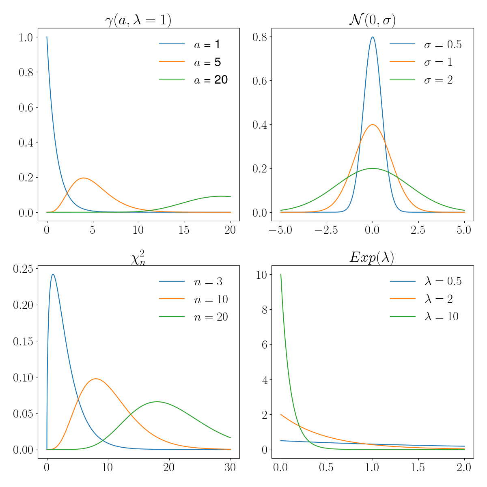
Modèle uniforme#
from scipy.stats import uniform
x = 2.5
a = 1
b = 5
mean, var = uniform.stats(moments='mv',loc=a,scale=b-1)
print("Espérance: ", mean )
print("Variance: ", var )
print("Densité de probabilité : ", uniform.pdf(x, loc = a, scale = b-1))
print("Fonction de répartition : ", uniform.cdf(x, loc = a, scale = b-1))
Espérance: 3.0
Variance: 1.3333333333333333
Densité de probabilité : 0.25
Fonction de répartition : 0.375
Loi normale#
from scipy.stats import norm
x = 1.3
m = 0
sigma = 1
mean,var = norm.stats(loc = m, scale = sigma, moments='mv')
print("Moyenne : ", mean)
print("Variance : ", var)
print("Densité de probabilité : ", norm.pdf(x, loc = m, scale = sigma))
print("Fonction de répartition : ", norm.cdf(x, loc = m, scale = sigma))
Moyenne : 0.0
Variance : 1.0
Densité de probabilité : 0.17136859204780736
Fonction de répartition : 0.9031995154143897
Sous l’hypothèse de normalité, de nombreux outils statistiques sont disponibles. Souvent, l’hypothèse de normalité est justifiée par l’intermédiaire du théorème centrale limite. Des considérations, parfois abusives, permettent de se placer dans le cadre d’utilisation de ce théorème et de choisir un modèle normal alors qu’une étude des données statistiques met en défaut le choix de ce modèle (problème dit d’adéquation).
Property 6
Si \(X\) est une variable aléatoire de loi \(\mathcal{N}(m,\sigma)\) alors la variable \(Z=\frac{X-m}{\sigma}\) est la variable centrée réduite associée, et suit une loi \(\mathcal{N}(0,1)\) dite aussi loi de Gauss-Laplace.
La fonction de répartition de \(Z\) est \(\phi(Z) = P(Z<z) = \frac{1}{\sqrt{2\pi}}\int_{-\infty}^z e^{-\frac{t^2}{2}}dt\), dont les valeurs peuvent être lues dans une table.
Theorem 7
Soient \(X_1\) et \(X_2\) deux variables aléatoires indépendantes, de loi respective \(\mathcal{N}(m_1,\sigma_1)\) et \(\mathcal{N}(m_2,\sigma_2)\). Alors la variable aléatoire \(X=\alpha_1X_1+\alpha_2X_2\) admet une loi \(\mathcal{N}(m,\sigma)\) avec
\(m = \alpha_1 m_1+\alpha_2 m_2\quad \textrm{et}\quad \sigma_2^2 = \alpha_1^2 \sigma_1+\alpha_2^2 \sigma_2^2\)
En particulier, étant données \(n\) variables aléatoires \(X_1\cdots X_n\) i.i.d. de loi \(\mathcal{N}(m,\sigma)\), alors la variable aléatoire \(\bar X_n = \frac1n \displaystyle\sum_{k=1}^nX_k\) suit une loi normale \(\mathcal{N}(m,\sigma/\sqrt{n})\).
Remark 8
Dans ce cas, \(\sqrt{n}\frac{\bar X_n-m}{\sigma}\) suit une loi \(\mathcal{N}(0,1)\).
Loi exponentielle#
from scipy.stats import expon
Lambda = 0.5
x = 1
mean,var = expon.stats(scale=Lambda, moments='mv')
print("Espérance : ", mean)
print("Variance : ", var)
print("Densité de probabilité : ", expon.pdf(x, scale = Lambda))
print("Fonction de répartition : ", expon.cdf(x, scale = Lambda))
Espérance : 0.5
Variance : 0.25
Densité de probabilité : 0.2706705664732254
Fonction de répartition : 0.8646647167633873
On parle de loi de probabilité sans mémoire car elle vérifie : \( (\forall s,t\in(\mathbb{R}^+)^*\; P(X>s+t |X>t) = P(X>s)\)
Distribution Gamma#
from scipy.stats import gamma
x = 3
a = 3
Lambda = 1.8
mean, var = gamma.stats(a, scale = 1/Lambda, moments='mv')
print("Moyenne : ", mean)
print("Variance : ", var)
print("Densité de probabilité : ", gamma.pdf(x, a, scale = 1/Lambda))
print("Fonction de répartition : ", gamma.cdf(x, a, scale = 1/Lambda))
Moyenne : 1.6666666666666667
Variance : 0.925925925925926
Densité de probabilité : 0.11853315025792688
Fonction de répartition : 0.9052421318239862
Les propriétés de cette loi reposent sur celles de la fonction \(\Gamma(a) = \int_0^{+\infty} x-{a-1}e^{-x}dx\), intégrale convergente pour tout \(a>0\).
Theorem 8
Si \(X\) et \(Y\) sont des variables aléatoires indépendantes de loi respective \(\gamma(a,\lambda)\) et \(\gamma(b,\lambda)\), alors \(X=X_1+X_2\) est de loi \(\gamma(a+b,\lambda)\)
Theorem 9
Si \(X\) est de loi \(\mathcal{N}(0,1)\) alors la variable aléatoire \(Y=X^2\) admet une loi \(\gamma(\frac12,\frac12)\).
Etant données plus généralement \(n\) variables aléatoires i.i.d. de loi \(\mathcal{N}(m,\sigma)\), alors la variable aléatoire \(V=\displaystyle\sum_{k=1}^n \left (\frac{X_k-m}{\sigma}\right )^2\) admet une loi \(\gamma(\frac{n}{2},\frac12)\). C’est la loi du khi-deux à \(n\) degrés de liberté.
Loi du Khi-deux#
from scipy.stats import chi2
x=3
n=2
mean, var = chi2.stats(n, moments='mv')
print("Moyenne : ", mean)
print("Variance : ", var)
print("Densité de probabilité : ", chi2(n).pdf(x))
print("Fonction de répartition : ", chi2(n).cdf(x))
Moyenne : 2.0
Variance : 4.0
Densité de probabilité : 0.11156508007421491
Fonction de répartition : 0.7768698398515702
Loi de Student#
from scipy.stats import t
n = 2
x=3
mean, var = t.stats(n, moments='mv')
print("Moyenne : ", mean)
print("Variance : ", var)
print("Densité de probabilité : ", t(n).pdf(x))
print("Fonction de répartition : ", t(n).cdf(x))
Moyenne : 0.0
Variance : inf
Densité de probabilité : 0.027410122234342152
Fonction de répartition : 0.9522670168666454
L’utilisation pratique de cette loi est énoncée par le théorème suivant :
Theorem 10
Soient deux variables aléatoires \(X\) et \(Y\) indépendantes, de loi respective \(\mathcal{N}(0,1)\) et \(\chi_n^2\). Alors la variable aléatoire \(T=\frac{X}{\sqrt{Y/n}}\) admet une loi de Student à \(n\) degrés de liberté.
Loi de Fisher-Snédécor#
from scipy.stats import f
n = 2
m=4
x=3
mean, var = f.stats(n, m,moments='mv')
print("Moyenne : ", mean)
print("Variance : ", var)
print("Densité de probabilité : ", f(n,m).pdf(x))
print("Fonction de répartition : ", f(n,m).cdf(x))
Moyenne : 2.0
Variance : inf
Densité de probabilité : 0.06399999999999996
Fonction de répartition : 0.84
L’utilisation pratique de cette loi est énoncée par le théorème suivant :
Theorem 11
Soient deux variables aléatoires \(X\) et \(Y\) indépendantes, de loi respective \(\chi_n^2\) et \(\chi_m^2\). Alors la variable aléatoire \(T=\frac{X/n}{Y/m}\) admet une loi de Fisher-Snédécor à \(n\) et \(m\) degrés de liberté.
Statistique descriptive#
Définitions#
Dans la suite, nous nous intéressons à des unités statistiques ou individus statistiques ou unités d’observation (individus, entreprises, ménages, données abstraites…). Bien que le cas infini soit envisageable, nous nous restreignons ici à l’étude d’un nombre fini de ces unités. Un ou plusieurs caractères (ou variables) est mesuré sur chaque unité. Les variables sont désignées par simplicité par une lettre. Leurs valeurs possibles sont appelées modalités et l’ensemble des valeurs possibles ou des modalités est appelé le domaine. L’ensemble des individus statistiques forme la population.
Typologie des variables#
La typologie des variables définit le type de problème statistique que l’on doit aborder :
Definition 17 (Variable qualitative)
La variable est dite qualitative lorsque les modalités sont des catégories. Suivant qu’il existe une relation d’ordre sur les catégories, on distingue :
la variable qualitative nominale, si les modalités ne peuvent pas être ordonnées
la variable qualitative ordinale, si les modalités peuvent être ordonnées
Definition 18 (Variable quantitative)
La variable est dite quantitative lorsque les modalités sont des valeurs numériques (scalaires ou vectorielles) :
la variable est quantitative discrète si les modalités forment un ensemble dénombrable
la variable quantitative est continue si les modalités vivent dans un espace continu.
Dans certains cas (l’âge par exemple), une variable d’un type (quantitative continue ici) peut être exprimée d’une autre manière pour des raisons pratiques de collecte ou de mesure. De même, les variables qualitatives ordinales peuvent être codées, par exemple selon une échelle de satisfaction.
Definition 19 (Série statistique)
On appelle série statistique une suite de \(n\) valeurs prises par une variable \(X\) sur les unités d’observation, notées \(x_1\cdots x_n\).
Variable qualitative nominale#
Une variable qualitative nominale a des valeurs distinctes qui ne peuvent pas être ordonnées. On note \(J\) le nombre de valeurs distinctes ou de modalités, notées \(x_1\cdots x_J\). On appelle effectif d’une modalité ou d’une valeur distincte le nombre de fois que cette modalité (ou valeur distincte) apparaît dans la série statistique. On note \(n_j\) l’effectif de la modalité \(x_j\). La fréquence d’une modalité \(j\) est alors égale à \(f_j=\frac{n_j}{n}\).
Le tableau statistique d’une variable qualitative nominale peut être représenté par deux types de graphiques. Les effectifs sont représentés par un diagramme en tuyau d’orgue et les fréquences par un diagramme en secteurs. Pour ce dernier, si le nombre de modalités devient trop important, la représentation perd de son intérêt.

Variable qualitative ordinale#
Le domaine peut être muni d’une relation d’ordre. Les valeurs distinctes d’une variable ordinale peuvent donc être ordonnées \(x_1\leq x_2\cdots\leq x_J\), à permutation près dans l’ordre croissant des indices. L’effectif cumulé \(N_j\) et la fréquence cumulée \(F_j\) des variables sont alors définis par \((\forall j\in[\![1,J]\!])\quad N_j=\displaystyle\sum_{i=1}^j n_i\quad \textrm {et}\quad F_j=\displaystyle\sum_{i=1}^j f_i\)
Les fréquences et les effectifs (cumulés ou non) peuvent être représentés sous la forme d’un diagramme en tuyaux d’orgue.
Variable quantitative discrète#
Le domaine d’une telle variable est dénombrable. Comme pour les variables qualitatives ordinales, on peut calculer les effectifs (cumulés ou non) et les fréquences (cumulées ou non).
La répartition des valeurs de la variable peut être représentée par un diagramme en bâtonnets. Les fréquences cumulées sont visualisées par la fonction de répartition de la variable , définie par
\(F(x) = \left \{ \begin{eqnarray} 0&\textrm{ si} &x<x_1\\ F_j &\textrm{ si}& x\in[x_j,x_{j+1}[\\ 1& \textrm{ si}& x_J\leq x \end{eqnarray}\right .\)

Variable quantitative continue#
Le domaine d’une variable quantitative continue est infini et est assimilé à \(\mathbb{R}\) ou à un intervalle de \(\mathbb{R}\). Cependant, la mesure étant limitée en précision, on peut traiter ces variables comme des variables discrètes.
La représentation graphique de ces variables (et la construction du tableau statistique) passe par le regroupement des modalités ou valeurs en classes. Le tableau ainsi construit est souvent appelé distribution groupée. La classe \(j\) est l’ensemble des valeurs incluses dans \([c^-_j,c^+_j[\), où \(c^-_j\) et \(c^+_j\) sont les bornes inférieure et supérieure de la classe. Sur cet intervalle, on peut calculer la fréquence \(f_j\) de la classe, la fréquence cumulée, l’effectif \(n_j\)… La répartition en classes nécessite de définir a priori le nombre de classes \(J\) et l’amplitude \(a_j\) des intervalles. Si elles peuvent être définies de manière empirique, quelques règles permettent d’établir \(J\) et l’amplitude pour une série statistique de \(n\) observations. Par exemple :
\(J=1+3.3log_{10}(n)\) (règle de Sturge)
\(J=2.5\sqrt[4\,]{n}\) (règle de Yule)
La représentation graphique se fait par exemple par histogramme. Les histogrammes sont des représentations de la distribution des données, agrégées par intervalles. A partir de l’étendue des données, on subdivise l’intervalle en \(k\) bins, de tailles \(t_k\) non nécessairement identiques, et on compte le nombre d’individus \(n_k\) rentrant dans chaque bin. L’histogramme peut alors être :
non normalisé : \(h_k = n_k\)
normalisé: \(h_k = n_k/t_k\)
import numpy as np
import matplotlib.pyplot as plt
X = np.loadtxt("./data/data.csv", delimiter=",")[:,1]
# Comptage des individus
def count(X, bins):
def findBin(x, bins):
for i, bin in enumerate(bins):
left, right = bin
if left <= x and x < right:
return i
return None
count = [0] * len(bins)
for x in X:
i = findBin(x, bins)
if i != None:
count[i] += 1
return count
# Affichage de l'histogramme
def plot_hist(X, bin_min, bin_max, bin_width,normed=True):
bins =[ [i, i+bin_width] for i in np.arange(bin_min, bin_max, bin_width) ]
bin_left = [ l for l, r in bins ]
bin_widths = [ r-l for l,r in bins ]
bin_height = [
float(c) / w if normed else c
for c,w in zip(count(X, bins), bin_widths)
]
plt.bar(bin_left,width=bin_width,height=bin_height)
plt.tight_layout()
bin_min = min(X)
bin_max = max(X)
plt.figure(figsize=(16, 4))
for subplot, binsize in ((141, 5),(142, 20), (143, 80), (144, 1000)):
title = 'Taille des bins : ', binsize
plt.subplot(subplot)
plt.title(title, fontsize=12)
plot_hist(X, bin_min, bin_max, binsize)

Le choix de la largeur \(t\) des bins dépend des données, et par exemple on a :
Loi de Scott : \(t = \frac{3.5 \sigma}{Card(X)^{1/3}}\), où \(\sigma\) est l’écart type des données.
Loi de Freedman–Diaconis : \( t = \frac{2 IQR}{Card(X)^{1/3}}\), où \(IQR\) est la distance interquartile.
Remark 9
Toutes les classes n’ont pas nécessairement la même amplitude
Les effectifs (ou les fréquences) sont représenté(e)s par un histogramme. Si l’on s’intéresse à la représentation des effectifs (resp. des fréquences), la densité d’effectif \(h_j\) (resp. de fréquence \(d_j\)), définie par \(h_j=\frac{n_j}{a_j}\) (resp. \(d_j=\frac{f_j}{a_j}\)), détermine la hauteur du rectangle représentant la classe \(j\). L’aire de l’histogramme est égale à l’effectif total \(n\) pour l’histogramme des effectifs, et à 1 pour l’histogramme des fréquences.
Comme dans le cas discret, la fonction de répartition peut être calculée de la manière suivante :
\(F(x) = \left \{ \begin{eqnarray} 0&\textrm{ si}& x<c^-_1\\ F_{j-1}+\frac{f_j}{c^+_j-c^-_j}(x-c^-_j) &\textrm{ si}& x\in[c^-_j,c^+_j[\\ 1& \textrm{ si}&c^+_J\leq x \end{eqnarray}\right .\)
Pré-traitement des données#
Faire une analyse de données, c’est traiter un tableau de taille \(n\times d\) où \(n\) est le nombre d’individus et \(d\) le nombre de variables (caractères) mesurées sur ces individus. En raison de la colecte des données, des erreurs de mesure ou d’autres facteurs, ce tableau est parfois incomplet et il convient de le prétraiter pour pouvoir effectuer l’analyse.
Points aberrants#
Une anomalie (ou point aberrant, ou outlier) est une observation (ou un sous-ensemble d’observations) qui semble incompatible avec le reste de l’ensemble de données.
S’il est parfois possible d’identifier graphiquement ces points aberrants à l’aide de boîtes à moustaches (voir Pour résumer), il existe une vaste littérature sur la détection d’anomalies qu’il n’est pas possible d’aborder ici. De plus, suivant le type de données manipulées (données séquentielles ou non), le type de méthode peut être différent. On mentionne donc ici quelques techniques simples :
le détecteur de Hampel : on considère que \(x_i\) est un point aberrant si
où \(MADM = 1.4826.|x_i-x_{\frac12}|_\frac12\), et où \(y_{\frac12}\) est la médiane des données \(y\)
la règle empirique de l’écart-type : on considère que \(x_i\) est un point aberrant si
où \(\bar x\) (respectivement \(\sigma\)) est la moyenne (resp. l’écart-type ) des données.
la méthode LOF (Local Outlier Factor) qui repose sur le concept de densité locale, où la localité est donnée par les \(k\) voisins les plus proches, dont la distance est utilisée pour estimer la densité. En comparant la densité locale d’un objet aux densités locales de ses voisins, il est possible d’identifier des régions de densité similaire et des points dont la densité est nettement inférieure à celle de leurs voisins. Ces derniers sont considérés comme des valeurs aberrantes. La densité locale est estimée par la distance typique à laquelle un point peut être atteint à partir de ses voisins.
la méthode COF (Connectivity based Outlier Factor) basée sur le même principe que LOF, à ceci près que l’estimation de densité est effectuée en utilisant le minimum de la somme des distances reliant tous les voisins d’un point donné.
Données manquantes#
Lors de la collecte des données, il arrive que certaines d’entre elles ne soient pas disponibles ou enregistrées. On distingue trois types de données manquantes :
les données manquant de manière complètement aléatoire : la probabilité qu’une donnée soit manquante ne dépend pas des valeurs connues ni de la valeur manquante elle-même.
les données manquant de manière aléatoire : la probabilité qu’une donnée soit manquante peut dépendre de valeurs connues (d’autres variables parmi les \(d\)), mais pas de la variable dont les valeurs sont manquantes.
les données manquant de manière non aléatoire : la probabilité qu’une donnée soit manquante dépend d’autres variables qui ont également des valeurs manquantes, ou elle dépend de la variable elle-même.
Pour résoudre ce problème de données manquantes, dans la mesure où ces dernières ne sont pas trop nombreuses, on a recours à des techniques d’imputation.
Dans le cas d’une imputation simple (une seule donnée manquante), on peut par exemple remplacer la valeur manquante dans une colonne \(j\in[\![1,p]\!]\) par :
une valeur fixe
une statistique sur la colonne \(j\) (la plus petite ou la plus grande valeur, la moyenne de la colonne, la valeur la plus fréquente…)
une valeur issue des \(k\) plus proches voisins de la ligne du tableau où la valeur en position \(j\) est manquante
une valeur calculée par régression (voir chapitre correspondant) sur l’ensemble du tableau
la valeur précédente (ou suivante) dans le cas où la colonne est une série ordonnée ou temporelle.
Dans le cas d’une imputation multiple, où un sous-ensemble de valeurs doit être comblé, on peut adopter la stratégie suivante :
Effectuer une imputation simple pour toutes les valeurs manquantes de l’ensemble de données.
Remettre les valeurs manquantes d’une variable \(j\in[\![1,p]\!]\) à “manquante”.
Former un modèle pour prédire les valeurs manquantes de \(j\) en utilisant les valeurs disponibles de la variable \(j\) en tant que variable dépendante et les autres variables de l’ensemble de données comme indépendantes.
Prédire les valeurs manquantes dans la colonne \(j\) en utilisant le modèle entraîné à l’étape 3.
Répéter les étapes 2 à 4 pour toutes les autres colonnes présentant des valeurs manquantes.
Répéter l’étape 2-5 jusqu’à convergence (ou un nombre maximal d’itérations)
Répéter les étapes 1-6 plusieurs fois avec différentes initialisations de nombres aléatoires pour créer différentes versions de l’ensemble de données complet/imputé.
Transformation des données qualitatives#
Pour pouvoir être traitées numériquement, les données qualitatives doivent être transformées. Plusieurs techniques existent parmi lesquelles :
pour le cas des variables ordinales : on utilise le rang pour encoder les modalités de la variable. Par exemple, pour un niveau de diplomation Brevet\(<\)Bac\(<\)Licence\(<\)Master\(<\)Doctorat, on codera Licence par 3 et Doctorat par 5.
le one-hot encoding : pour une variable qualitative présentant \(J\) modalités, on construit un vecteur de taille \(J\) dont les composantes sont toutes nulles sauf la \(J\)-ème qui vaut 1. Par exemple, si \(J\)=3, on construit 1 vecteur de taille 3, et pour un individu ayant la modalité 2, on le code en (0 1 0). Lorsque \(J\) est élevé, on se retrouve avec un jeu de données volumineux.
les méthodes de plongement (embedding) : utilisées principalement en apprentissage profond (Deep learning) pour le traitement du langage naturel, ces classes de méthodes construisent une représentation de chaque modalité d’une variable qualitative en un vecteur numérique de taille fixe et choisie. Pour le mot “rouge” de la variable “couleur”, par exemple, l’encodage peut par exemple être représenté par le vecteur (0.31 0.57 0.12). En pratique, le calcul de ces représentations s’effectue classiquement par l’entraînement d’un réseau de neurones ayant pour entrée uniquement les variables qualitatives. Tout d’abord, un encodage one-hot est appliqué à la variable afin d’être mise en entrée du réseau, qui n’accepte que les entrées numériques. La sortie d’une des couches cachées du réseau constitue alors le vecteur recherché. On concatène ensuite ce vecteur aux données initiales, utilisées dans l’ajustement du modèle final.
Normalisation#
Il arrive que les données collectées ne soient pas du même ordre de grandeur, notamment en raison des unités de mesure (un individu mesuré par sa taille en millimètres et son poids en tonnes par exemple). Cette différence de valeur absolue introduit un biais dans l’analyse des données (figure 1) qu’il convient de corriger. C’est le processus de normalisation des données.
Pour une colonne \(j\in[\![1,p]\!]\), on dispose de \(n\) valeurs \(x_{ij},i\in[\![1,n]\!]\). On note : \(x_{min} = \displaystyle\min_{i\in[\![1,n]\!]}x_{ij}\), \(x_{max} = \displaystyle\max_{i\in[\![1,n]\!]}x_{ij}\), \(\bar x_j\) la moyenne des \(x_{ij}\), \(\sigma_j\) leur écart-type, \(x_\frac14, x_\frac12\) et \(x_\frac34\) les premier, deuxième et troisième quartiles. On distingue alors classiquement trois types de normalisation :
la normalisation min-max : \(x_{ij} = \frac{x_{ij}-x_{min}}{x_{max}-x_{min}}\)
la normalisation standard : \(x_{ij}=\frac{x_{ij}-\bar x_j}{\sigma_j}\)
la normalisation robuste : \(x_{ij}=\frac{x_{ij}-x_\frac12}{x_\frac34-x_\frac14}\)
La normalisation standard dépend de la présence de points aberrants (qui affectent la moyenne).
Fig. 1 Effet de la normalisation sur un algorithme de classification (voir chapitre correspondant). En haut un jeu de données avec deux nuages de points allongés selon l’axe des \(x\), certainement en raison d’une différence d’échelle entre les unités de mesure de \(x\) et \(y\). Au milieu une classification par \(k\)-moyennes, \(k\)=2 sans normalisation, en utilisant la distance euclidienne. Les deux classes sont séparées suivant l’axe des \(x\), ne reflétant pas la répartition naturelle des points. En bas, après normalisation, les deux nuages de points sont correctement séparés#
Statistique descriptive univariée#
La statistique descriptive univariée consiste à étudier un ensemble d’unités d’observations, lorsque celles-ci sont décrites par une seule variable.
Soit donc \(X\) une variable et \(x_j,j\in [\![1,n]\!]\) l’ensemble des valeurs prises par cette variable, \(n_i\) étant le nombre de fois où la valeur \(x_i\) est prise. \(X\) peut être qualitative ou quantitative, les paramètres de description décrits dans la suite s’appliqueront à l’une de ces natures ou au deux.
Paramètres de position#
Plusieurs paramètres permettent de décrire la position “la plus représentative” d’une variable :
Definition 20 (Mode)
Le mode est la valeur distincte correspondant à l’effectif le plus élevé. Il est noté \(x_M\).
Le mode peut être calculé pour tout type de variable, n’est pas nécessairement unique. Lorsqu’une variable continue est découpée en classes, il est possible de définir une classe modale (classe correspondant à l’effectif le plus élevé)
Definition 21 (Moyennes)
Les moyennes ne peuvent être définies que sur des variables quantitatives. Plusieurs moyennes peuvent être calculées, parmi lesquelles :
la moyenne arithmétique \(\bar{x} = \frac{1}{n}{\displaystyle\sum_{i=1}^nx_i}= \frac{1}{n}{\displaystyle\sum_{i=1}^J n_ix_i}\). C’est le moment à l’origine d’ordre 1.
la moyenne géométrique : si les \(x_i\) sont positifs, la moyenne géométrique est la quantité \(G=\left (\displaystyle\prod_{i=1}^n x_i\right )^\frac{1}{n}\). C’est donc l’exponentielle de la moyenne arithmétique des logarithmes des valeurs observées.
la moyenne harmonique : si les \(x_i\) sont positifs, la moyenne harmonique est définie par \(H=\frac{n}{\displaystyle\sum_{i=1}^J 1/x_i}\)
la moyenne pondérée : dans certains cas, on n’accorde pas la même importance à toutes les observations (fiabilité, confiance…). La moyenne pondérée est alors définie par \(\bar{x}_w= \frac{\displaystyle\sum_{i=1}^n w_ix_i}{\displaystyle\sum_{i=1}^n w_i}\)
Dans le cas où \(\forall i,w_i=1/n\), la moyenne pondérée est la moyenne arithmétique. De plus, dans tous les cas, on peut montrer que \(H\leq G\leq \bar{x}\).
import numpy as np
import matplotlib.pyplot as plt
X = np.loadtxt("./data/data.csv", delimiter=",")[:,1]
def ArithmeticMean(X):
# calculable directement avec np.mean(X)
return float(sum(X)) / len(X)
def GeometricMean(X):
n=len(X)
p=1
for i in range(n):
p*=X[i]
return float(p**(1/n))
def HarmonicMean(X):
n=len(X)
s=0
for i in range(n):
s += 1/X[i]
return len(X) / s
def WeightedMean(X):
# Exemples de poids
w = np.random.rand(len(X))
return np.average(X,weights=w)
plt.figure(figsize=(8,4))
plt.rcParams['font.size'] = '16'
plt.plot(X, [0.01]*len(X), '|', color='k',label='Points')
for method, style, title in ((ArithmeticMean,'r','Arithmétique'),(GeometricMean,'b','Géométrique'),
(HarmonicMean,'g','Harmonique'),(WeightedMean,'y', 'Pondérée')):
m=method(X)
print (method.__name__, " : ",m)
plt.plot([m,m],[0,0.2],style,label=title)
plt.legend()
plt.tight_layout()
plt.show()
ArithmeticMean : 1316.3086347078017
GeometricMean : 1258.4787575642572
HarmonicMean : 1198.219210728503
WeightedMean : 1327.0068383275884

Definition 22 (Médiane)
La médiane, notée \(x_\frac{1}{2}\) est la valeur centrale de la série statistique triée par ordre croissant.
En d’autres termes, c’est la valeur de la série triée telle qu’au moins 50% des effectifs soient inférieurs à \(x_\frac{1}{2}\). Elle peut être calculée sur des variables quantitatives ou qualitatives ordinales (dans le cas où des échelles de valeur ont été définies).
Definition 23 (Quantiles)
Le quantile d’ordre \(p\) est défini par \(x_p=F^{-1}(p)\), où \(F\) est la fonction de répartition.
La notion de quantile généralise la notion de médiane. Si la fonction de répartition était continue et strictement croissante, la définition de \(x_p\) serait unique. Or \(F\) est discontinue et définie par paliers et les valeurs de quantiles varient suivant par exemple l’utilisation ou non d’une méthode d’interpolation de \(F\). Pour calculer \(x_p\), on peut par exemple considérer que si \(np\) est pair, \(x_p=\frac{x_{np}+x_{np+1}}{2}\) on remarque alors que la médiane est le quantile d’ordre \(\frac{1}{2}\) et sinon \(x_p=x_{\lceil{np}\rceil}\) En particulier, un quartile est chacune des 3 valeurs qui divisent les données triées en 4 parts égales, de sorte que chaque partie représente 1/4 de l’échantillon de population. On note \(Q_i\) le \(i^e\) quartile.
import numpy as np
import matplotlib.pyplot as plt
X = np.loadtxt("./data/data.csv", delimiter=",")[:,1]
plt.figure(figsize=(8,4))
plt.rcParams['font.size'] = '16'
plt.plot(X, [0.01]*len(X), '|', color='k',label='Points')
for q, style in ((25,'r'),(50,'b'),(75,'g')):
m=np.percentile(X,q)
print ("quartile ", q, " : ",m)
plt.plot([m,m],[0,0.2],style,label=q)
plt.legend()
plt.tight_layout()
quartile 25 : 905.9190521240237
quartile 50 : 1399.66320800781
quartile 75 : 1626.326538085935

Paramètres de dispersion#
Il est très souvent utile d’apprécier la dispersion des mesures autour du paramètre de position. Pour cela, sur des variables quantitatives uniquement, plusieurs outils sont disponibles :
Definition 24 (Etendue)
L’étendue est la simple différence entre la plus grande et la plus petite valeur observée.
Definition 25 (Déviation maximale)
La déviation maximale est définie par \( maxdev(X) = max \{ |x_i - \bar{x}| \,|\, i\in[\![1,n]\!]\}\)
Definition 26 (Déviation moyenne absolue)
La déviation moyenne absolue est définie par \( mad(X) = \frac{1}{n} \displaystyle\sum_{i=1}^n |x_i - \bar{x}|\)
Definition 27 (Distance interquartile)
La distance interquartile \(Q_3-Q_1\) est la différence entre le troisième et le premier quartile. C’est une statistique robuste aux points aberrants.
Definition 28 (Variance)
La variance est la somme des carrés des écarts à la moyenne, normalisée par le nombre d’observations \(\sigma^2 = \frac{1}{n}\displaystyle\sum_{i=1}^n\left (x_i-\bar{x}\right )^2\)
Cette variance est dite biaisée. La variance non biaisée est obtenue en divisant non pas par \(n\), mais par \(n-1\).
Definition 29 (Ecart type)
L’écart type est la racine carrée de la variance.
Definition 30 (Ecart moyen absolu)
L’écart moyen absolu est la somme des valeurs absolues des écarts à la moyenne divisée par le nombre d’observations.
Notons qu’il s’agit de la distance \(L_1\) du vecteur des observations au vecteur composé de la valeur moyenne, divisé par le nombre d’observations. La variance est la distance \(L_2\) entre ces deux vecteurs. Lorsque la distance est calculée par rapport au vecteur composé de la valeur médiane, on parle d’écart médian absolu.

import numpy as np
import math
import matplotlib.pyplot as plt
X = np.loadtxt("./data/data.csv", delimiter=",")[:,1]
def max_dev(X):
m = np.mean(X)
return max(abs(x - m) for x in X)
def mad(X):
m = np.mean(X)
return sum(abs(x - m) for x in X) / float(len(X))
def sigma(X):
m = np.mean(X)
return math.pow(sum((x - m)**2 for x in X) / len(X), 0.5)
def IQR(X): return np.percentile(X,75) - np.percentile(X,25)
plt.figure(figsize=(12,4))
plt.rcParams['font.size'] = '16'
plt.plot(X, [0.01]*len(X), '|', color='k',label='Points')
m = np.mean(X)
for method, pos,style, in ((max_dev,0.5,'r'),(mad,0.6,'b'),(sigma,0.7,'g'),(IQR,0.8,'y')):
s=method(X)
print (method.__name__, " : ",m, "+/-",s)
plt.plot([m,m],[0,1],'black' )
plt.plot([m-s,m-s],[0,1],style,label=method.__name__)
plt.plot([m+s,m+s],[0,1],style)
plt.plot([m-s,m+s],[pos,pos],style)
plt.legend(loc='best')
plt.tight_layout()
max_dev : 1316.3086347078017 +/- 738.0729570890783
mad : 1316.3086347078017 +/- 327.4656915004233
sigma : 1316.3086347078017 +/- 374.5723639541368
IQR : 1316.3086347078017 +/- 720.4074859619113

Paramètres de forme#
Les paramètres de forme sont souvent calculés en référence à la forme de la loi normale, pour évaluer la symétrie, l’aplatissement ou la dérive par rapport à cette loi.
Definition 31 (Skewness)
Le skewness est également appelé coefficient d’asymétrie de Fisher.
Definition 32 (Kurtosis)
\(K\) permet de mesurer l’aplatissement.
Definition 33 (Coefficient d’asymétrie de Yule)
Ce coefficient est fondé sur les positions de trois quartiles (le premier, la médiane et le troisième) et est normalisé par la distance interquartile.
Definition 34 (Coefficient d’asymétrie de Pearson)
Ce coefficient est fondé sur la comparaison de la moyenne et du mode, et est normalisé par l’écart type.
Tous les coefficients d’asymétrie ont des propriétés similaires : ils sont nuls si la distribution est symétrique, négatifs si la distribution est allongée à gauche (left asymmetry), et positifs si la distribution est allongée à droite (right asymmetry).
On peut aussi chercher à mesurer l’aplatissement (ou kurtosis) d’une distribution de mesure. Dans ce cas, on utilise le coefficient d’aplatissement de Pearson ou de Fisher, respectivement donnés par \(\beta_2=\frac{m_4}{\sigma^4}\quad\textrm{et}\quad g_2=\beta_2-3\)
Une distribution est alors dite :
mésokurtique si \(g_2\) est proche de 0
leptokurtique si \(g_2>0\) (queues plus longues et distribution plus pointue)
platykyrtique si \(g_2<0\) (queues plus courtes et distribution arrondie).
Pour résumer#
Les principales statistiques d’une série statistique peuvent être résumées dans des boîtes à moustache, qui permettent de voir sur un même graphique :
la médiane
une boîte entre les premier et le troisième quartile
l’étendue
les points aberrants.
Ce mode de représentation consiste à dessiner une boîte dont les extrémités dépendent du premier et du troisième quartiles \(Q_1\) et \(Q_3\) , en ajoutant une barre à l’intérieur matérialisant le second quartile \(Q_2\) (la valeur médiane de l’échantillon). A cette boîte, on ajoute des “moustaches” dont les extrémités dépendent :
soit des valeurs extrémales prises par l’échantillon (minimum et maximum);
soit de la plus petite et de la plus grande valeur de l’échantillon appartenant à l’intervalle \([Q_1 -\delta, Q_3+\delta ]\). La grandeur \(\delta\) est une mesure de la dispersion des données. Généralement, on utilise \(\delta = 1.5(Q_3-Q_1)\).
Les valeurs de l’ échantillon en dehors des moustaches sont parfois matérialisées par des points et sont alors considérées comme les points aberrants de l’échantillon.
import matplotlib.pyplot as plt
import numpy as np
import pandas as pd
def annotate_boxplot(bpdict, annotate_params=None,
x_offset=0.05, x_loc=0,
text_offset_x=35,
text_offset_y=20):
if annotate_params is None:
annotate_params = dict(xytext=(text_offset_x, text_offset_y), textcoords='offset points', arrowprops={'arrowstyle':'->'})
plt.annotate('Médiane', (x_loc + 1 + x_offset, bpdict['medians'][x_loc].get_ydata()[0]), **annotate_params)
plt.annotate('$Q_1$', (x_loc + 1 + x_offset, bpdict['boxes'][x_loc].get_ydata()[0]), **annotate_params)
plt.annotate('$Q_3$', (x_loc + 1 + x_offset, bpdict['boxes'][x_loc].get_ydata()[2]), **annotate_params)
plt.annotate('$Q_1-1.5(Q_3-Q_1)$', (x_loc + 1 + x_offset, bpdict['caps'][x_loc*2].get_ydata()[0]), **annotate_params)
plt.annotate('$Q_3+1.5(Q_3-Q_1)$', (x_loc + 1 + x_offset, bpdict['caps'][(x_loc*2)+1].get_ydata()[0]), **annotate_params)
df = pd.DataFrame({'Données': np.random.normal(scale=4, size=150)})
bpdict = df.boxplot(grid=False,whis=1.5, return_type='dict')
annotate_boxplot(bpdict, x_loc=0)
plt.tight_layout()
plt.show()

La description ne fait pas tout…#
La description d’un ensemble de valeurx \(x_j\) par la moyenne, la variance, voire le comportement linéaire (coefficient de corrélation, voir plus loin) peut ne pas suffire à comprendre la distribution des données. Un exemple classique (analyse bivariée, section suivante) est le quartet d’Anscombe (figure ci-dessous), constitué de quatre ensembles de points \((x,y)\in\mathbb{R}^2\) de même propriétés statistiques (moyenne, variance, coefficient de régression linéaire) mais qui sont distribués de manière totalement différente dans le plan.
import matplotlib.pyplot as plt
import numpy as np
x = [10, 8, 13, 9, 11, 14, 6, 4, 12, 7, 5]
y1 = [8.04, 6.95, 7.58, 8.81, 8.33, 9.96, 7.24, 4.26, 10.84, 4.82, 5.68]
y2 = [9.14, 8.14, 8.74, 8.77, 9.26, 8.10, 6.13, 3.10, 9.13, 7.26, 4.74]
y3 = [7.46, 6.77, 12.74, 7.11, 7.81, 8.84, 6.08, 5.39, 8.15, 6.42, 5.73]
x4 = [8, 8, 8, 8, 8, 8, 8, 19, 8, 8, 8]
y4 = [6.58, 5.76, 7.71, 8.84, 8.47, 7.04, 5.25, 12.50, 5.56, 7.91, 6.89]
datasets = {
'1.': (x, y1),
'2.': (x, y2),
'3.': (x, y3),
'4.': (x4, y4)
}
fig, axs = plt.subplots(2, 2, sharex=True, sharey=True, figsize=(6, 6),
gridspec_kw={'wspace': 0.08, 'hspace': 0.18})
axs[0, 0].set(xlim=(2, 15), ylim=(2, 14))
for ax, (label, (x, y)) in zip(axs.flat, datasets.items()):
ax.set_xlabel('x')
ax.set_ylabel('y')
ax.plot(x, y, '.',c='r')
p1, p0 = np.polyfit(x, y, deg=1) # slope, intercept
ax.axline(xy1=(0, p0), slope=p1, color='b', lw=2)
stats = (f'$\\bar x$ = {np.mean(y):.3f}\n'
f'$\\sigma$ = {np.std(y):.3f}\n'
f'$r$ = {np.corrcoef(x, y)[0][1]:.3f}')
ax.text(0.95, 0.07, stats, fontsize=9,
transform=ax.transAxes, horizontalalignment='right')
plt.show()

Statistique descriptive bivariée#
On s’intéresse à deux variables \(x\) et \(y\), mesurées sur les \(n\) unités d’observation. La série statistique est alors une suite de \(n\) couples \((x_i,y_i)\) des valeurs prises par les deux variables sur chaque individu.
Cas de deux variables quantitatives#
Le couple est un couple de valeurs numériques. C’est donc un point dans le plan \(\mathbb{R}^2\). Les variables \(x\) et \(y\) peuvent être analysées séparément, en opérant une statistique univariée sur chacune de ces variables. Les paramètres calculés (de position, de dispersion…) sont dits marginaux. Cependant, il est intéressant d’étudier le lien entre ces deux variables, par l’intermédiaire des valeurs des couples. On définit pour cela un certain nombre d’outils :
Definition 35 (Covariance)
La covariance de \(x\) et \(y\) est définie par : \(\sigma_{xy}=\frac{1}{n}\displaystyle\sum_{i=1}^n\left (x_i-\bar{x}\right )\left (y_i-\bar{y}\right )\)
Definition 36 (Coefficient de corrélation)
Le coefficient de corrélation de deux variables \(x\) et \(y\) est défini par \(r_{xy}=\frac{\sigma_{xy}}{\sigma_{x}\sigma_{y}}\). Le coefficient de détermination est le carré du coefficient de corrélation.
Le coefficient de corrélation est donc la covariance normalisée par les écarts types marginaux des variables. Il mesure la dépendance linéaire entre \(x\) et \(y\). Il est compris dans l’intervalle [-1,1] est est positif (resp. négatif) si les points sont alignés le long d’une droite croissante (resp. décroissante), d’autant plus grand en valeur absolue que la dépendance linéaire est vérifiée. Dans le cas où le coefficient est nul, il n’existe pas de dépendance linéaire.
Pour connaître plus précisément la relation linéaire qui lie \(x\) et \(y\), on effectue une régression linéaire en calculant par exemple la droite de régression : si \(y=a+bx\), il est facile de montrer que \(b=\frac{\sigma_{xy}}{\sigma_x^2}\quad\textrm{et}\quad a=\bar{y}-b\bar{x}\)
et la droite de régression s’écrit \(y-\bar{y}=\frac{\sigma_{xy}}{\sigma_x^2}\left ( x-\bar{x}\right )\).
A partir de cette droite, on peut calculer les valeurs ajustées, obtenues à partir de la droite de régression : \(y^*_i=a+bx_i\). Ce sont les valeurs théoriques des \(y_i\) et les résidus \(e_i=y_i-y_i^*\) représentent la partie inexpliquée des \(y_i\) par la droite de régression (ceux là même que l’on essaye de minimiser par la méthode des moindres carrés). Nous reviendrons dans le chapitre sur la régression sur l’analyse de ces résidus.
Cas de deux variables qualitatives#
Le couple est un couple de valeurs \((x_i,y_i)\) où \(x_i\) et \(y_i\) prennent comme valeurs des modalités qualitatives. Notons \(x_1\cdots x_J\) et \(y_1\cdots y_K\) les valeurs distinctes prises.
Les données peuvent être regroupées sous la forme d’un tableau de contingence prenant la forme suivante :
\(\begin{array}{c|ccccc|c} &y_1&\cdots&y_k&\cdots&y_K&total\\ \hline x_1&n_{11}&\cdots&n_{1k}&\cdots&n_{1K}&n_{1.}\\ \vdots&\vdots&\vdots&\vdots&\vdots&\vdots&\vdots\\ x_j&n_{j1}&\cdots&n_{jk}&\cdots&n_{jK}&n_{j.}\\ \vdots&\vdots&\vdots&\vdots&\vdots&\vdots&\vdots\\ x_J&n_{J1}&\cdots&n_{Jk}&\cdots&n_{JK}&n_{J.}\\ \hline total&n_{.1}&\cdots&n_{.k}&\cdots&n_{.K}&n\\ \end{array} \)
où \(n_{j.}\) (resp \(n_{.k}\) )sont les effectifs marginaux représentant le nombre de fois où \(x_j\) (resp. \(y_k\)) apparaît, et \(n_{jk}\) le nombre d’apparition du couple \((x_j,y_k)\).
Le tableau des fréquences \(f_{jk}\) s’obtient en divisant tous les effectifs par la taille \(n\) dans ce tableau.
Un tel tableau s’interprète toujours en comparant les fréquences en lignes ou les fréquences en colonnes (profils lignes ou colonnes), définies respectivement par \(f_k^{(j)}= \frac{n_{jk}}{n_{j.}}=\frac{f_{jk}}{f_{j.}}\quad\textrm{ et }\quad f_j^{(k)}= \frac{n_{jk}}{n_{.k}}=\frac{f_{jk}}{f_{.k}}\)
Si l’on cherche un lien entre les variables, on construit un tableau d’effectifs théoriques qui représente la situation où les variables ne sont pas liées (indépendance). Ce tableau est constitué des effectifs \(n_{jk}^*=\frac{n_{j.}n_{.k}}{n}\) Les effectifs observés \(n_{jk}\) ont les mêmes marges que les \(n_{jk}^*\), et les écarts à l’indépendance sont calculés par la différence \(e_{jk}=n_{jk}-n_{jk}^*\)
La dépendance du tableau se mesure au moyen du khi-deux défini par \(\chi^2_{obs}= \displaystyle\sum_{k=1}^K\displaystyle\sum_{j=1}^J\frac{e_{jk}^2}{n_{jk}^*}\) qui peut être normalisé pour ne plus dépendre du nombre d’observations : \(\phi^2=\frac{\chi^2_{obs}}{n}\)
La construction du tableau des effectifs théoriques et sa comparaison au tableau des observations permet dans un premier temps de mettre en évidence les associations significatives entre modalités des deux variables. Pour cela, on calcule la contribution au \(\chi^2\) des modalités \(j\) et \(k\) :
Le signe de la différence \(n_{jk}-n_{jk}^*\) indique alors s’il y a une association positive ou négative entre les modalités \(j\) et \(k\).
Plus généralement, le \(\chi^2_{obs}\) est un indicateur de liaison entre les variables. Dans le cas où \(\chi^2_{obs}=0\), il y a indépendance. Pour rechercher la borne supérieure du khi-deux et voir dans quel cas elle est atteinte, on développe le carré et on obtient
Comme \(\frac{n_{jk}}{n_{.k}}\leq 1\) on a \( \frac{n_{jk}^2}{n_{j.}n_{.k}} \leq \frac{n_{jk}}{n_{.k}}\) d’où
d’où \(\chi^2_{obs}\leq n(K-1)\). On pourrait de même montrer que \(\chi^2_{obs}\leq n(J-1)\) et donc \(\phi^2\leq min(J-1,K-1)\).
La borne est atteinte dans le cas de la dépendance fonctionnelle (si \(\forall j \frac{n_{jk}}{n_{j.}}=1\), i.e. il n’existe qu’une case non nulle dans chaque ligne.)
A partir de ce khi-deux normalisé, on calcule finalement plusieurs coefficients permettant de mesurer l’indépendance, et parmi ceux-ci citons :
le coefficient de Cramer: \(V=\sqrt{\frac{\phi^2}{min(J-1,K-1)}}\)
le coefficient de contingence de Pearson : \(C = \sqrt{\frac{\phi^2}{\phi^2 + 1}}\)
le coefficient de Tschuprow : \(T = \sqrt{\frac{\phi^2}{\sqrt{(K-1)(J-1)}}}\)
Ces coefficients sont tous compris entre 0 (indépendance) et 1 (dépendance fonctionnelle). Pour estimer à partir de quelle valeur la dépendance fonctionnelle est significative, on procède de la manière suivante : si les \(n\) observations étaient prélevées dans une population où les variables sont indépendantes, on recherche les valeurs probables de \(\chi^2_{obs}\).
En s’appuyant sur la loi multinomiale et le test du \(\chi^2\), on montre que \(\chi^2_{obs}\) est une réalisation d’une variable aléatoire \(Z\) suivant approximativement une loi \(\chi^2_{(K-1)(J-1)}\).
Remark 10
Soient \(U_1\ldots U_p\) \(p\) variables i.i.d de loi normale centrée réduite. On appelle loi du \(\chi^2\) à \(p\) degrés de liberté la loi de la variable \(\displaystyle\sum_{i=1}^pU_i^2\).
En effet, les \(e_{jk}\) sont liées par \((K-1)(J-1)\) relations linéaires puisqu’on estime les probabilités de réalisation de \(x_j\) et \(y_k\) respectivement par \(n_{j,.}/n\) et \(n_{.k}/n\). Il suffit alors de fixer un risque d’erreur \(\alpha\) (une valeur qui, s’il y avait indépendance, n’aurait qu’une probabilité faible d’être dépassée), et on rejette l’hypothèse d’indépendance si \(\chi^2_{obs}\) est supérieur à la valeur critique qu’une variable \(\chi^2_{(K-1)(J-1)}\) a une probabilité \(\alpha\) de dépasser. L’espérance d’un \(\chi^2_{(K-1)(J-1)}\) étant égale à son degré de liberté, \(\chi^2_{obs}\) est d’autant plus grand que le nombre de modalités \(J\) et/ou \(K\) est grand.
D’autres indices existent, qui ne dépendent pas de \(\chi^2_{obs}\), comme par exemple
\(\begin{equation} G^2 = 2\displaystyle\sum_{k=1}^K\displaystyle\sum_{j=1}^J n_{jk} ln \left (\frac{ n_{jk}}{ n^*_{jk}} \right )\end{equation}\)
qui sous l’hypothèse d’indépendance suit une loi \(\chi^2_{(K-1)(J-1)}\).
Cas d’une variable quantitative et d’une variable qualitative#
On s’intéresse ici au cas où les modalités \(x_i\) sont qualitatives, et où \(y\) est une variable quantitative, dont les modalités sont des réalisations d’une variable aléatoire \(Y\). Le rapport de corrélation théorique entre \(x\) et \(Y\) est défini par
Si \(n_j\) est le nombre d’observations de la modalité \(x_j,j\in[\![1\,J]\!]\), \(y_{ij}\) la valeur de \(Y\) du \(i^e\) individu de la modalité \(j\), \(\bar{y}_1\ldots \bar{y}_J\) sont les moyennes de \(Y\) pour ces modalités et \(\bar{y}\) la moyenne totale sur les \(n\) individus, le rapport de corrélation empirique est défini par
La quantité
\(\sigma^2_\cap = \frac{1}{n}\displaystyle\sum_{j=1}^J n_j\sigma_j^2\)
avec \(\sigma_j^2 = \frac{1}{n_j}\displaystyle\sum_{i=1}^{n_j}\left (y_{ij}-\bar{y}_j \right )^2\), est appelée variance intra groupe (ou intra classe), et donne une idée de la variabilité à l’intérieur de chaque modalité. La quantité \(\sigma_\cup = \frac{1}{n}\displaystyle\sum_{j=1}^J n_j\left (\bar{y}_j-\bar{y}\right )^2\) est la variance inter groupes (ou inter classes), et mesure la variabilité entre les différentes modalités.
Le théorème de décomposition de la variance (ou théorème de Huygens) affirme que la variance totale \(\sigma^2_y\), calculée sans distinction de modalité s’écrit : \(\sigma^2_y = \sigma^2_\cap + \sigma^2_\cup\)
De ces définitions, on a alors :
\(e^2=0\) si toutes les moyennes de \(Y\) sont égales, d’où l’absence de dépendance en moyenne
\(e^2=1\) si tous les individus d’une modalité de \(x\) ont même valeur de \(Y\) et ceci pour chaque modalité
\(e^2\) permet de comprendre, via le théorème de Huygens, quelle variation est prédominante dans la variance totale. Ainsi par exemple, si la variable quantitative est la note d’un élève à un examen, et la variable qualitative son assiduité au cours correspondant, la variabilité entre les notes obtenues dans toute la promotion dépend de deux facteurs : le fait que les étudiants assistent ou pas aux cours, et le fait qu’à assiduité égale (i.e. à l’intérieur d’une même modalité d’assiduité) les étudiants n’ont pas le même niveau. \(e^2\) permet alors de savoir lequel de ces deux facteurs est prédominant pour expliquer la variabilité des notes dans toute la promotion.
Pour déterminer à partir de quelle valeur \(e^2\) est significatif, on compare donc \(\sigma^2_\cap\) à \(\sigma^2_\cup\). On peut montrer que si le rapport de corrélation théorique est nul, alors la variable \(\frac{\left (\frac{e^2}{J-1}\right )}{\left (\frac{1-e^2}{n-J}\right )}\) suit une loi de Fisher Snedecor, en supposant que les distributions conditionnelles de \(Y\) pour chaque modalité de \(X\) sont gaussiennes, de même espérance et de même variance.
Remark 11
Soient \(U\) et \(V\) deux variables aléatoires indépendantes suivant respectivement des lois \(\chi^2_n\) et \(\chi^2_p\). On définit la loi de Fisher Snedecor par \(F(n,p)=\frac{U/n}{V/P}\)) \(F(J-1,n-J)\)
Vers une analyse multivariée#
Bien évidemment, dans la majorité des cas, un individu sera décrit par \(p\geq 2\) variables. Si certains algorithmes de statistique descriptive multidimensionnelle sont abordés dans ce cours, il est néanmoins possible d’avoir une première approche exploratoire de ce cas.
Matrices de covariance et de corrélation#
La première idée, lorsque l’on a observé \(d\) variables sur \(n\) individus, est de calculer les \(d\) variances de ces variables, et les \(\frac{p(p-1)}{2}\) covariances. Ces mesures sont regroupées dans une matrice \(p\times p\), symétrique, semi définie positive, appelée matrice de variance-covariance (ou matrice des covariances), et classiquement notée \(\boldsymbol\Sigma\).
De même, on peut former la matrice des corrélations entre les variables, à diagonale unité et symétrique. La matrice résultante, notée \(\mathbf R\), est également semi définie positive et sa représentation graphique en fausses couleurs permet d’apprécier les dépendances linéaires entre variables.
Dans le cas de variables qualitatives, les coefficients de corrélation peuvent être remplacés par les coefficients de Cramer, de Tschuprow…
Tableaux de nuages#
On peut proposer à partir de là des représentations entre sous-ensembles de variables. La figure suivante propose un exemple de tels tableaux, parfois appelés splom (Scatter PLOt Matrix) :
la partie triangulaire supérieure représente les nuages de points de couples de variables
la diagonale représente les histogrammes des variables
la partie trianglaire inférieure donne le coefficient de corrélation entre les deux variables, et une estimation de la densité de la distribution 2D des données
Tableaux de Burt#
Le tableau de Burt est une généralisation particulière de la table de contingence dans le cas où l’on étudie simultanément \(p\) variables qualitatives \(X_1\ldots X_p\). Notons \(c_j\) le nombre de modalités de \(X_j\) et posons \(c=\displaystyle\sum_{j=1}^p c_j\).
Le tableau de Burt est une matrice carrée symétrique de taille \(c\), constituée de \(p^2\) sous-matrices. Chacune des \(p\) sous-matrices diagonales est relative à l’une des \(p\) variables, la \(j^e\) étant carrée de taille \(c_j\), diagonale, et de coefficients diagonaux les effectifs marginaux de \(X_j\). La sous-matrice dans le bloc \((k,l)\) du tableau, \(k\neq l\), est la table de contingence des variables \(X_k\) et \(X_l\).
Sélection de variables#
On s’intéresse ici à \(n\) individus \(\mathbf x_i, i\in[\![1,n]\!]\) décrits par \(d\) variables quantitatives ou caractéristiques (features), \(x_i\in \mathbb{R}^d\). Avec l’avènement des Big Data, et la généralisation des capteurs, \(d\) peut être très grand (plusieurs milliers), et analyser telles quelles les données brutes devient difficile d’un point de vue calculatoire et interprétation. De plus, il est rare que les caractéristiques soient totalement utiles et indépendantes.
Une étape souvent utilisée en analyse de données consiste donc à prétraiter cet espace, par exemple pour :
le transformer en un format compatible avec des algorithmes qui seront utilisés
réduire la complexité temporelle des algorithmes qui seront utilisés
réduire la complexité spatiale du problème traité
découpler des variables et chercher les dépendances
introduire des a priori, ou des propriétés importantes pour les algorithmes (données centrées normées, descripteurs épars…)
permettre une interprétation plus intuitive et/ou graphique (figure 2)
Fig. 2 Exemple de réduction de dimension (source: Maaten & Hinton, 2008). Des images 28\(\times\) 28 de chiffres manuscrits sont représentées par un vecteur de 784 valeurs, puis transformés en vecteurs de \(\mathbb{R}^2\) pour les projeter dans le plan. La méthode utilisée permet d’optimiser la transformation de sorte à ce que les images représentant le même chiffre soient regroupées dans des nuages compacts.#
Deux stratégies peuvent alors être utilisées :
sélectionner un sous-ensemble des variables initiales comme descripteurs des individus
calculer de nouveaux descripteurs à partir des variables initiales.
Nous nous intéressons ici à la première approche, la seconde (extraction de caractéristiques) étant abordée pour une approche linéaire dans le chapitre sur l’analyse en composantes principales.
Remark 12
Les méthodes d’extraction de caractéristiques peuvent être soit linéaires (on recherche des combinaisons linéaires des variables initiales permettant d’optimiser un cerrtain critère), ou non linéaires (on parle également de manifold learning)
Définitions#
La sélection de caractéristiques consiste à choisir parmi les \(d\) descripteurs d’un ensemble d’individus \(\mathbf x_i,i\in[\![1,n]\!]\), un sous-ensemble de \(t<d\) caractéristiques jugées “les plus pertinentes”, les \(d-t\) restantes étant ignorées.
On note \(F = \left (f_1\cdots f_d\right )\) les \(d\) caractéristiques. On note \(Perf\) une fonction qui permet d’évaluer un sous-ensemble de caractéristiques, et on suppose que \(Perf\) atteint son maximum pour le meilleur sous-ensemble de caractéristiques (“le plus pertinent”). Le problème de sélection se formule donc comme un problème d’optimisation
le cardinal \(|\hat{F|}\) de \(\hat{F}\) étant soit contrôlé par l’utilisateur, soit défini par l’algorithme de sélection.
On distingue alors trois stratégies :
\(|\hat{F|}\) est défini par l’utilisateur et l’optimisation s’effectue sur tous les sous-ensembles ayant ce cardinal
On connaît une mesure minimale de performance \(\gamma\) et la sélection recherche le plus petit sous-ensemble \(U\) dont la performance \(Perf(U)\) est supérieure ou égale à \(\gamma\)
On cherche un compromis entre l’amélioration de la performance \(Perf(U)\) et la réduction de la taille du sous ensemble.
La mesure de pertinence d’une caractéristique est donc au centre des algorithmes de sélection. Plusieurs définitions sont possibles, et nous dirons ici qu’une caractéristique \(f_i\) est :
pertinente si son absence entraîne une détérioration significative de la performance de l’algorithme utilisé en aval (classification ou régression)
peu pertinente si elle n’est pas pertinente et s’il existe un sous-ensemble \(U\) tel que la performance de \(U\cup\{f_i\}\) est significativement meilleure que la peformance de \(U\)
non pertinente, si elle ne rentre pas dans les deux premières définitions. En général, ces caractéristiques sont supprimées.
Caractéristiques des méthodes de sélection#
Une méthode de sélection basée sur l’optimisation de \(Perf\) utilise généralement trois étapes. Les deux dernières sont itérées jusqu’à un test d’arrêt.
Initialisation#
L’initialisation consiste à choisir l’ensemble de départ des caractéristiques. Il peut s’agir de l’ensemble vide, de \(F\) tout entier, ou un sous-ensemble quelconque \(U\subset F\).
Exploration des sous-ensembles#
A partir de cette initialisation, les stratégies d’exploration des sous-ensembles de caractéristiques se déclinent en trois catégories :
génération exhaustive : tous les sous-ensembles de caractéristiques sont évalués. Si elle garantit de trouver la valeur optimale, cette méthode n’est que peu applicable dès que \(|F|\) devient important (\(2^{|F|}\) sous-ensembles possibles)
génération heuristique : une génération itérative est effectuée, chaque itération permettant de sélectionner ou de rejeter une ou plusieurs caractéristiques. La génération peut être ascendante (ajout de caractéristiques à partir de l’ensemble vide), descendante (suppression de caractéristiques à partir de \(F\)), ou mixte.
génération stochastique : pour un ensemble de données et une initialisation définie, une stratégie de recherche heuristique retourne toujours le même sous-ensemble, ce qui la rend très sensible au changement de l’ensemble de données. La génération stochastique génère aléatoirement un nombre fini de sous-ensembles de caractéristiques afin de sélectionner le meilleur. La convergence est sous-optimale mais peut s’avérer préférable dans des algorithmes d’apprentissage, par exemple pour éviter le phénomène de surapprentissage.
Evaluation des sous-ensembles#
Filtres#
Le critère d’évaluation utilisé évalue la pertinence d’une caractéristique selon des mesures qui reposent sur les propriétés de données d’apprentissage.
Pour \(n\) exemples \(\mathbf x_i, i\in[\![1,n]\!]\) , on note \(\mathbf x_i=\left (x_{i1} \cdots x_{id} \right )^T\in\mathbb{R}^d\) une donnée d’apprentissage (la \(j^e\) caractéristique \(f_j\) ayant donc pour valeur \(x_{ij}\)) , d’étiquette \(y_i\) (en classification ou régression). Les méthodes de type filtres calculent un score pour évaluer le degré de pertinence de chacune des caractéristiques \(f_i\) , parmi lesquelles on peut citer
Le critère de corrélation, utilisé en classification binaire
où \(\mu_i\) (resp. \(\mu_k\)) est la moyenne de la caractéristique \(f_i\) observée sur \(\mathbf x_1\cdots \mathbf x_n\) (resp. moyenne des étiquettes)
Le critère de Fisher, qui permet de mesurer dans un problème de classification à \(C\) classes le degré de séparabilité des classes à l’aide d’une caractéristique donnée
où \(n_c, \mu_c^i\) et \(\Sigma_c^i\) sont l’effectif, la moyenne et l’écart-type de la caractéristique \(f_i\) dans la classe \(c\)
l’information mutuelle
qui mesure la dépendance entre les distributions de deux populations. Ici \(X\) et \(Y\) sont deux variables aléatoires dont les réalisations sont les valeurs de \(f_i\) et des étiquettes de classes. Les probabilités sont estimées de manière fréquentiste.
Dans l’exemple suivant, on choisit de garder \(|\hat{F|}=2\) descripteurs, en contrôlant la pertinence par l’information mutuelle en classification.
from sklearn.datasets import load_iris
from sklearn.feature_selection import SelectKBest
from sklearn.feature_selection import mutual_info_classif
X, y = load_iris(return_X_y=True)
print("Taille des données avant : ",X.shape)
s = SelectKBest(mutual_info_classif,k=2)
X2 = s.fit_transform(X, y)
print("Taille des données après : ",X2.shape)
print("Variables sélectionnées : ", s.get_support())
Taille des données avant : (150, 4)
Taille des données après : (150, 2)
Variables sélectionnées : [False False True True]
Méthodes enveloppantes#
Le principal inconvénient des approches précédentes est le fait qu’elles ignorent l’influence des caractéristiques sélectionnées sur la performance de l’algorithme à utiliser par la suite. Les méthodes de type enveloppantes (wrappers) évaluent un sous-ensemble de caractéristiques par sa performance de classification en utilisant un algorithme d’apprentissage. Les sous-ensembles de caractéristiques sélectionnés par cette méthode sont bien adaptés à l’algorithme de classification utilisé, mais ils ne sont pas nécessairement pour un autre. De plus, la complexité de l’algorithme d’apprentissage rend ces méthodes coûteuses.
Les principales différences entre les filtres et les méthodes enveloppantes pour la sélection des caractéristiques sont les suivantes :
Les filtres mesurent la pertinence des caractéristiques par leur corrélation avec la variable dépendante, tandis que les méthodes enveloppantes mesurent l’utilité d’un sous-ensemble de caractéristiques en entraînant un modèle sur celles-ci.
Les filtres sont beaucoup plus rapides que les méthodes enveloppantes car elles n’impliquent pas l’apprentissage des modèles. D’un autre côté, les méthodes enveloppantes sont également très coûteuses en termes de calcul.
Les filtres utilisent des méthodes statistiques pour l’évaluation d’un sous-ensemble de caractéristiques, tandis que les méthodes enveloppantes utilisent la validation croisée.
Les filtres peuvent échouer à trouver le meilleur sous-ensemble de caractéristiques dans de nombreuses occasions, mais les méthodes enveloppantes peuvent toujours fournir le meilleur sous-ensemble de caractéristiques.
L’utilisation d’un sous-ensemble de caractéristiques à partir des méthodes enveloppantes amène plus facilement au phénomène de surapprentissage
Remark 13
Les wrappers sélectionnent les caractéristiques en se fondant sur une estimation du risque réel.
Méthodes intégrées#
Les méthodes intégrées incluent la sélection de variables lors du processus d’apprentissage. Un tel mécanisme intégré pour la sélection des caractéristiques peut être trouvé, par exemple, dans les algorithmes de type SVM, AdaBoost ou dans les arbres de décision.
Quelques méthodes de sélection#
Suppression des descripteurs à variance faible#
Une première idée simple consiste à supprimer les descripteurs ayant une faible variance, ces derniers n’étant pas discriminants dans la définition des individus.
from sklearn.feature_selection import VarianceThreshold
from sklearn import datasets
iris = datasets.load_iris()
X = iris.data
y = iris.target
v = VarianceThreshold(threshold=.5)
X2 = v.fit_transform(X)
print("Avant sélection, ",X.shape)
print("Après sélection, ",X2.shape)
print("Variables sélectionnées : ", v.get_support())
Avant sélection, (150, 4)
Après sélection, (150, 3)
Variables sélectionnées : [ True False True True]
Algorithmes de sélection séquentielle#
Les algorithmes SFS (Sequential Forward Selection, Algorithm 1) et SBS (Sequential Backward Selection, Algorithm 1-rouge) ont été les premiers à être proposés. Ils utilisent des approches heuristiques de recherche en partant, pour la première, d’un ensemble de caractéristiques vide et pour la seconde de \(F\) tout entier.
Algorithm 1 (Algorithmes SFS et SBS)
Entrée : \(F = \left (f_1\cdots f_d\right )\), taille de l’ensemble final \(T\)
Sortie : \(\hat{F}\)
\(\hat{F}\leftarrow \emptyset\quad\) (\(\hat{F}\leftarrow F\))
Pour \(i=1\) à \( T\quad\) (\(i=1\) à \(d-T\))
Pour \(j=1\) à \( |{F}|\quad\) (\(j=1\) à \(|\hat{F}|\))
Evaluer \(\{f_j\}\cup \hat{F}\quad\) (\(\hat{F}\setminus \{f_j\}\))
\(f_{max}\) = meilleure caractéristique \(\quad\) (\(f_{min}\)=moins bonne caractéristique)
\(\hat{F}\leftarrow\hat{F}\cup\{f_{max}\}, F=F\setminus f_{max}\quad\) (\(\hat{F}\setminus\hat{F}f_{min}\))
L’étape d’évaluation utilise des données d’apprentissage : une heuristique évalue, sur un critère de performance, l’intérêt d’ajouter (ou de supprimer) le descripteur \(f_i\).
Des variantes autour de ces algorithmes simples ont été proposées depuis et par exemple :
il est possible à chaque itération d’inclure (ou d’exclure) un sous-ensemble de caractéristiques, plutôt qu’une seule (méthodes GSFS et GSBS)
on peut appliquer \(p\) fois SFS puis \(q\) fois SBS, de manière itérative, avec \(p,q\) des paramètres qui peuvent évoluer au cours des itérations (algorithme SFFS et SFBS)
Dans l’exemple suivant, l’heuristique choisie est l’algorithme des 3 plus proches voisins et la mesure de performance sous-jacente est la mesure de validation croisée.
from sklearn.feature_selection import SequentialFeatureSelector
from sklearn.neighbors import KNeighborsClassifier
from sklearn.datasets import load_iris
X, y = load_iris(return_X_y=True)
knn = KNeighborsClassifier(n_neighbors=3)
sfs = SequentialFeatureSelector(knn, n_features_to_select=3)
sfs.fit(X, y)
print("Taille des données avant sélection",X.shape)
print("Taille des données après sélection",sfs.transform(X).shape)
print("Variables sélectionnées : ", sfs.get_support())
Taille des données avant sélection (150, 4)
Taille des données après sélection (150, 3)
Variables sélectionnées : [ True False True True]
Algorithme Focus#
L’algorithme de filtrage Focus (Algorithm 2}) repose sur une recherche exhaustive sur \(F\) pour trouver le sous-ensemble le plus performant de taille optimale.
Algorithm 2 (Algorithme FOCUS)
Entrée : \(A= \{\mathbf x_i=\left (x_{i1} \cdots x_{id} \right )^T\in\mathbb{R}^d,1\leq i\leq n \}\) , taille de l’ensemble final \(T\), seuil \(\epsilon\)
Sortie : \(\hat{F}\)
\(\hat{F}\leftarrow \emptyset\)
Pour \(i=1\) à \( T\)
chaque sous-ensemble \(S_i\) de taille \(i\)
Si Inconsistance(A,\(S_i\))<\(\epsilon\)
\(\hat{F}\leftarrow S_i\)
Retourner \(\hat{F}\)
Algorithme relief#
La méthode relief en classification binaire (Algorithm 3), propose de calculer une mesure globale de la pertinence des caractéristiques en accumulant la différence des distances entre des exemples d’apprentissage choisis aléatoirement et leurs plus proches voisins de la même classe et de l’autre classe.
Algorithm 3 (Algorithme Relief)
Entrée : \(A= \{\mathbf x_i=\left (x_{i1} \cdots x_{id} \right )^T\in\mathbb{R}^d,1\leq i\leq n \}\) , nombre d’itérations \(T\)
Sortie : \(w\in\mathbb{R}^d\) un vecteur de poids des caractéristiques, \(w_i\in[-1,1],i\in[\![1,d]\!]\)
Pour \(i=1\) à \( d\)
\(w_i\leftarrow 0\)
Pour \(i=1\) à \( T\)
Choisir aléatoirement un exemple \(\mathbf x_k\)
Chercher deux plus proches voisins de \(\mathbf x_k\), l’un (\(\mathbf x_p\)) dans sa classe, l’autre (\(\mathbf x_q\)) dans l’autre classe
Pour \(j=1\) à \(d\)
\(w_j\leftarrow w_j+\frac{1}{nT}\left (|x_{kj} -x_{qj}|-|x_{kj} -x_{pj}| \right )\)
Méthode SAC#
L’algorithme SAC (Selection Adaptative de Caractéristiques) construit un ensemble de classifieurs (ou de régresseurs) \((M_1\cdots M_d)\) appris sur chacun des descripteurs et sélectionne les meilleurs par discrimination linéaire de Fisher. Pour ce faire, l’algorithme construit un vecteur dont les éléments sont les performances \(Perf(M_i)\) des modèles \(M_i\), triés par ordre décroissant. Deux moyennes \(m_1(i)\) et \(m_2(i)\) sont calculées, qui représentent les deux moyennes de performance d’apprentissage qui ont une valeur respectivement plus grande (plus petite) que la performance du modèle \(M_i\) :
Deux variances des performances \(v_1^2(i)\) et \( v_2^2(i)\) sont alors calculées à partir de ces moyennes, et le sous-ensemble de caractéristiques sélectionné est celui qui maximise le discriminant de Fisher
Algorithme RFE#
L’algorithme RLE (Recusrive Feature Elimination) trie les descripteurs en analysant, localement, la sensibilité de la performance. Étant donné un prédicteur \(f\) qui attribue des poids aux caractéristiques (par exemple, les coefficients d’un modèle linéaire), l’objectif de l’algorithme est de sélectionner les caractéristiques en considérant de manière récursive des ensembles de caractéristiques de plus en plus petits. Tout d’abord, le prédicteur \(f\) est entraîné sur l’ensemble initial de caractéristiques et l’importance de chaque caractéristique est calculée par un algorithme dédié (critère de Gini, entropie…). Les caractéristiques les moins importantes sont éliminées de l’ensemble actuel de caractéristiques. Cette procédure est répétée de manière récursive sur l’ensemble élagué jusqu’à ce que le nombre souhaité de caractéristiques à sélectionner soit finalement atteint.
from sklearn.feature_selection import RFE
from sklearn.datasets import load_iris
from sklearn.tree import DecisionTreeClassifier
X, y = load_iris(return_X_y=True)
estimator = DecisionTreeClassifier()
s = RFE(estimator, n_features_to_select=2, step=1)
s.fit(X, y)
print("Taille des données avant sélection",X.shape)
print("Variables sélectionnées : ", s.get_support())
print("Classement des variables : ",s.ranking_)
Taille des données avant sélection (150, 4)
Variables sélectionnées : [False False True True]
Classement des variables : [2 3 1 1]
Les méthodes factorielles ont pour but de traiter et visualiser des données multidimensionnelles. La prise en compte simultanée de l’ensemble des variables est un problème difficile, rendu parfois plus simple car l’information apportée par les variables est redondante. Les méthodes factorielles visent alors à exploiter cette redondance pour tenter de remplacer les variables initiales par un nombre réduit de nouvelles variables, conservant au mieux l’information initiale.
Les principales méthodes de ce type incluent l’analyse factorielle des correspondances, l’analyse des correspondances multiples, l’analyse factorielle d’un tableau de distance (pour les tableaux de proximité) ou encore l’analyse factorielle discriminante. Ces méthodes sont proposées en annexe de ce cours.
Nous nous intéressons ici à une méthode de réduction de dimension linéaire sur données quantitatives, l’analyse en composantes principales.
Analyse en composantes principales#
Pour les données quantitatives, l’Analyse en Composantes Principales (ACP) est l’une des méthodes les plus utilisées. Elle considère que les nouvelles variables sont des combinaisons linéaires des variables initiales, non corrélées.

Dans la suite, les données seront des tableaux \(n\times d\) de variables quantitatives, une ligne étant un individu, et les colonnes décrivant les paramètres mesurés. Les observations de \(d\) variables sur \(n\) individus sont donc rassemblées dans une matrice \({\bf X}\in\mathcal{M}_{n,d}(\mathbb{R})\) . On notera \(x^j\) la j-ème variable, identifiée par la j-ème colonne \({\bf X_{\bullet,j}}\) de \({\bf X}\), et \(\mathbf{e_i}\) le i-ème individu (i.e. \({\bf X_{i,\bullet}^T}\)).
Principe de la méthode#
Pré-traitement du tableau#
En analyse en composantes principales, on raisonne souvent sur des variables centrées et/ou réduites.
Données centrées#
Notons \(\mathbf{g} = \left ( \bar{x}^1\cdots \bar{x}^d\right )\) le vecteur des moyennes arithmétiques de chaque variable (centre de gravité) :
\(\mathbf{g}={\bf X^TD\mathbf{1}}\)
où \({\bf D}\) est une matrice diagonale de poids, chaque \(d_{ii}\) donnant l’importance de l’individu \(i\) dans les données (le plus souvent \({\bf D}=\frac{1}{n}{ \mathbb{I}}\)), et \(\mathbf{1}\) est le vecteur de \(\mathbb{R}^n\) dont toutes les composantes sont égales à 1. Le tableau \({\bf Y}={\bf X}-\mathbf{1}\mathbf{g}^T=({ \mathbb{I}}-\mathbf{1}\mathbf{1}^T{\bf D}){\bf X}\) est le tableau centré associé à \({\bf X}\).
Données réduites#
La matrice de variance/covariance des données centrées est égale à \({\bf V} = {\bf X^TDX} - \mathbf{g}\mathbf{g^T} = {\bf Y^TDY}\).
Si on note \({\bf D_{1/\sigma}}\) la matrice diagonale des inverses des écarts-types des variables, alors \({\bf Z}={\bf YD_{1/\sigma}}\) est la matrice des données centrées réduites. La matrice \({\bf R}={\bf D_{1/\sigma}VD_{1/\sigma}}={\bf Z^TDZ}\) est la matrice de corrélation des données et résume la structure des dépendances linéaires entre les \(d\) variables.
Projection des individus sur un sous-espace#
Le principe de la méthode est d’obtenir une représentation approchée du nuage des \(n\) individus dans un sous-espace \(F_k\) de dimension faible. Ceci s’effectue par un mécanisme de projection.
Le choix de l’espace de projection est dicté par le critère suivant, qui revient à déformer le moins possible les distances en projection : le sous-espace de dimension \(k\) recherché est tel que la moyenne des carrés des distances entre projections soit la plus grande possible. En définissant l’inertie d’un nuage de points comme la moyenne pondérée des carrés des distances au centre de gravité, le critère revient alors à maximiser l’inertie du nuage projeté sur \(F_k\).
Soit \({\bf P}\) la projection orthogonale sur \(F_k\). Le nuage de points projeté est associé au tableau \({\bf XP^T}\) puisque chaque individu \(\mathbf{e_i}\) se projette sur \(F_k\) selon un vecteur colonne \(\mathbf{Pe_i}\) ou ligne \(\mathbf{e_i P^T}\).
La matrice de variance du tableau \({\bf XP^T}\) est, dans le cas où les variables sont centrées : \({\bf (XP^T)^TD(XP^T) }= {\bf PVP^T}\). L’inertie du nuage projeté est donc égale à \(Tr({\bf PVP^TM})\), où \({\bf M}\) est une matrice symétrique définie positive de taille \(d\), définissant la distance entre deux individus
\(d^2(\mathbf{e_i},\mathbf{e_j}) = (\mathbf{e_i}-\mathbf{e_j})^T{\bf M}(\mathbf{e_i}-\mathbf{e_j})\)
Mais
\(\begin{eqnarray*} Tr({\bf PVP^TM})&=&Tr({\bf PVMP})\quad \textrm{car }{\bf P^TM}={\bf MP}\\ &=& Tr({\bf VMP^2})\quad \textrm{car }Tr({\bf AB})=Tr({\bf BA})\\ &=&Tr({\bf VMP})\quad \textrm{car } P\textrm{ est une projection} \end{eqnarray*}\)
Le problème posé est donc de trouver la projection \({\bf P}\), de rang \(k\) maximisant \(Tr({\bf VMP})\). La projection \({\bf P}\) réalisant cette optimisation donnera alors \(F_k\).
L’analyse en composantes principales consiste alors, de manière itérative, à chercher un sous-espace de dimension 1 d’inertie maximale, puis le sous-espace de dimension 1 orthogonal au précédent d’inertie maximale et ainsi de suite. Elle s’appuie sur le résultat suivant :
Theorem 12
Soit \(F_k\) un sous-espace portant l’inertie maximale. Alors le sous-espace de dimension \(k+1\) portant l’inertie maximale est la somme directe de \(F_k\) et de la droite orthogonale à \(F_k\) portant l’inertie maximale.
Elements principaux#
Axes principaux#
Rechercher un sous-espace de dimension 1 d’inertie maximale revient à rechercher une droite de \(\mathbb{R}^n\) passant par le centre de gravité des données \(\mathbf{g}\) maximisant l’inertie du nuage projeté sur cet axe. Soit \(\mathbf{a}\) un vecteur directeur de cette droite. La projection orthogonale sur la droite est définie par la matrice de projection
\(\mathbf P=\frac{\mathbf{a}\mathbf{a}^T{\bf M}}{\mathbf{a}^T{\bf M}\mathbf{a}}\)
L’inertie du nuage projeté sur \(Lin(\mathbf{a})\) vaut alors \(\begin{eqnarray*} Tr({\bf VMP})&=&Tr\left ({\bf VM}\frac{\mathbf{a}\mathbf{a}^T{\bf M}}{\mathbf{a}^T{\bf M}\mathbf{a}}\right )\\ &=& \frac{1}{\mathbf{a^T}{\bf M}\mathbf{a}}Tr({\bf VM}\mathbf{a}\mathbf{a^T}{\bf M})\\ &=& \frac{1}{\mathbf{a^T}{\bf M}\mathbf{a}}Tr(\mathbf{a^T}{\bf MVM}\mathbf{a})\quad \text{car } Tr(\mathbf{AB})=Tr(\mathbf{BA})\\ &=& \frac{1}{\mathbf{a^T}{\bf M}\mathbf{a}}\mathbf{a^T}{\bf MVM}\mathbf{a}\quad \text{car } \mathbf{a^T}{\bf MVM}\mathbf{a}\in\mathbb{R} \end{eqnarray*}\)
La matrice \({\bf MVM}\) est la matrice d’inertie du nuage (égale à la matrice de variance-covariance si \({\bf M}=\mathbb I\)). Maximiser cette quantité revient à annuler sa dérivée par rapport à \(\mathbf{a}\) d’où :
\( \frac{d}{d\mathbf{a}}\frac{\mathbf{a^T}{\bf MVM}\mathbf{a}}{\mathbf{a^T}{\bf M}\mathbf{a}}=\frac{(\mathbf{a^T}{\bf M}\mathbf{a})2{\bf MVM}\mathbf{a}-(\mathbf{a^T}{\bf MVM}\mathbf{a})2{\bf M}\mathbf{a}}{(\mathbf{a^T}{\bf M}\mathbf{a})^2} \) et donc
\({\bf MVM}\mathbf{a}=\left (\frac{\mathbf{a^T}{\bf MVM}\mathbf{a}}{\mathbf{a^T}{\bf M}\mathbf{a}} \right ){\bf M}\mathbf{a}\)
soit \({\bf VM}\mathbf{a}=\lambda \mathbf{a}\) car \({\bf M}\) est de rang plein. Donc \(\mathbf{a}\) est vecteur propre de \({\bf VM}\), et \(\lambda\) est la plus grande des valeurs propres de \({\bf VM}\). Or \({\bf M}\) est symétrique, elle est diagonalisable sur une base de vecteurs propres orthonormés et on a le résultat suivant :
Theorem 13
Le sous-espace \(F_k\) de dimension \(k\) portant l’inertie maximale est engendré par les \(k\) premiers vecteurs propres de \({\bf VM}\)
Les droites portées par ces vecteurs propres sont les axes principaux. Dans la suite on supposera \(\mathbf{a}\) \(\mathbf M\)-normé.
Facteurs principaux#
On associe à \(Lin(\mathbf{a})\) la forme linéaire \(\mathbf{u}\), coordonnée orthogonale sur l’axe \(Lin(\mathbf{a})\). Le vecteur \(\mathbf{u}\) définit une combinaison linéaire des variables descriptives \(x^1\cdots x^d\). A l’axe principal \(\mathbf{a}\) est associé le facteur principal \(\mathbf{u}=\mathbf{Ma}\). Puisque \(\mathbf{a}\) est vecteur propre de \({\bf VM}\), on peut alors écrire
\({\bf MVM}\mathbf{a}=\lambda {\bf M}\mathbf{a}\)
et donc \({\bf MV}\mathbf{u}=\lambda \mathbf{u}\). Les facteurs principaux sont donc les vecteurs propres de \({\bf MV}\)
Composantes principales#
Les composantes principales sont les éléments de \(\mathbb{R}^n\) définis par \(\mathbf{c_i}=\mathbf{Xu_i}\). Ce sont donc les vecteurs coordonnées des projections orthogonales des individus sur les axes propres \(\mathbf{a_i}\). Ce sont donc les combinaisons linéaires des \(x^1\cdots x^p\) de variance maximale sous la contrainte \(\mathbf{u_i}^T{\bf M}\mathbf{u_i}=1\), et cette variance est égale à la valeur propre \(\lambda_i\) associée à \(\mathbf{a_i}\).
En pratique, l’analyse en composantes principales consiste à calculer les \(\mathbf{u}\) par diagonalisation de \({\bf MV}\), puis à calculer les \(\mathbf{c}=\mathbf{Xu}\). Le calcul explicite des vecteurs propres \(\mathbf{a}\) n’a que peu d’intérêt.
Reconstitution#
Il est possible de reconstituer le tableau \({\bf X}\) centré des données (ou une approximation par une matrice de rang \(k\)) en utilisant les composantes. En effet, puisque \(\mathbf{Xu_j}=\mathbf{c_j}\) on a
\({\bf X}\displaystyle\sum_j \mathbf{u_j}\mathbf{u_j}^T{\bf M^{-1}} = \displaystyle\sum_j\mathbf{c_j}\mathbf{u_j}^T{\bf M^{-1}}\)
Mais \(\displaystyle\sum_j \mathbf{u_j}\mathbf{u_j}^T{\bf M^{-1}}=\mathbb{I}\) car les \(\mathbf{u_j}\) sont orthonormés pour la métrique \({\bf M^{-1}}\) donc
\({\bf X}=\displaystyle\sum_j\mathbf{c_j}\mathbf{u_j}^T{\bf M^{-1}}\) et si l’on s’intéresse à l’approximation de \({\bf X}\) on ne somme que les \(k\) premiers termes.
A noter que lorsque \({\bf M}=\mathbb{I}, {\bf X}= \displaystyle\sum_j\sqrt{\lambda_j}\mathbf{z_j}\mathbf{v_j^T}\) où les \(\mathbf{z_j}\) sont les vecteurs propres unitaires de \({\bf XX^T}\) et les \(\mathbf{v_j}\) les vecteurs propres unitaires de \({\bf X^TX}\) (décomposition dite en valeurs singulières).
Interprétation des résultats#
Quelle dimension pour \(F_k\) ?#
Le but premier de l’ACP est de réduire la dimension pour permettre une visualisation efficace des données, tout en préservant l’information (ici représentée par la variance du nuage de points). Il faut donc se doter d’outils permettant de répondre à la question : quelle dimension pour \(F_k\) ? Il n’y a pas de réponse théorique satisfaisante, l’essentiel étant d’avoir une représentation suffisamment expressive pour permettre une interprétation correcte du nuage de points. En préambule, il convient de remarquer que la réduction de dimension ne sera possible que si les variables \(x^1\cdots x^d\) ne sont pas indépendantes.
Critère théorique#
On détermine ici si les valeurs propres sont significativement différentes entre elles à partir d’un certain rang : si la réponse est négative on conserve les premières valeurs propres.
On fait l’hypothèse que les \(n\) individus proviennent d’un tirage aléatoire dans une population gaussienne où \(\lambda_{k+1}=\cdots =\lambda_{d}\). Si l’hypothèse est vérifiée, la moyenne arithmétique \(\alpha\) des \(d-k\) dernières valeurs propres et leur moyenne géométrique \(\gamma\) sont peu différentes. On admet que :
\(c=\left ( n-\frac{2p+11}{6}\right )(d-k) ln\frac{\alpha}{\gamma}\) suit une loi du \(\chi^2\) de degré de liberté \(\frac{(d-k+2)(d-k-1)}{2}\) et on rejette l’hypothèse d’égalité des \(d-k\) valeurs propres si \(c\) est trop grand.
Pourcentage d’inertie#
Le critère couramment utilisé est le pourcentage d’inertie totale expliquée, qui s’exprime sur les \(k\) premiers axes par :
Un seuil par exemple de 90% d’inertie totale expliquée donne une valeur de \(k\) correspondante. Attention cependant, le pourcentage d’inertie doit faire intervenir le nombre de variables initiales.

Mesures locales#
Le pourcentage d’inertie expliquée est un critère global qui doit être complété par d’autres considérations. Supposons que le plan \(F_2\) explique une part importante d’inertie, et que, en projection sur ce plan, deux individus soient très proches. Cette proximité peut être illusoire si les deux individus se trouvent éloignés dans l’orthogonal de \(F_2\). Pour prendre en compte ce phénomène, il faut envisager pour chaque individu \(\mathbf{e_i}\) la qualité de sa représentation, souvent exprimée par le cosinus de l’angle entre le plan principal et le vecteur \(\mathbf{e_i}\). Si ce cosinus est grand, \(\mathbf{e_i}\) est voisin du plan, on peut alors examiner la position de sa projection sur le plan par rapport à d’autres points.
Dans la figure suivante, \({\bf e_i} \) et \({\bf e_j}\) se projettent sur \(F_2\) en \({\bf p}\) mais sont éloignés dans \(F_2^\perp\).

Critères empiriques#
Lorsqu’on travaille sur données centrées réduites, on retient les composantes principales correspondant à des valeurs propres supérieures à 1 (critère de Kaiser) : en effet les composantes principales \(c_j\) étant des combinaisons linéaires des \(z-j\) de variance maximale \(V(c_j)=\lambda\), seules les composantes de variance supérieure à celle des variables initiales présentent un intérêt.
Interprétation des résultats : exemple#
Une analyse en composantes principales est réalisée sur un jeu de données composé de \(d\)=9 indicateurs de qualité pour \(n\)=329 villes américaines. Les paragraphes suivants sont illustrés par ces données.
Corrélation variables-facteurs#
Pour donner du sens aux composantes principales \(\mathbf{c}\), il faut les relier aux variables initiales \(x^j\) en calculant les coefficients de corrélation linéaire \(r(\mathbf{c},x^j)\) et en seuillant ces coefficients en valeur absolue.
Lorsque l’on travaille sur des données centrées réduites (métrique \(\mathbf D_{1/\sigma}\)), le calcul de \(r(\mathbf{c},x^j)\) se réduit à
\(r(\mathbf{c},x^j)=\frac{\mathbf{c}^T\mathbf D\mathbf{z^j}}{\sqrt{\lambda}}\)
Or \(\mathbf{c}=Z\mathbf{u}\) où \(\mathbf{u}\), facteur principal associé à \(\mathbf{c}\), est vecteur propre de la matrice de corrélation \(\mathbf R\) associé à \(\lambda\). Donc
\(r(\mathbf{c},x^j)=\frac{\mathbf{u}^T\mathbf Z^T\mathbf D\mathbf{z^j}}{\sqrt{\lambda}}=\frac{(\mathbf{z^j})^T\mathbf D\mathbf Z\mathbf{u}}{\sqrt{\lambda}}\)
\((\mathbf{z^j})^T\mathbf D\mathbf Z\) est la \(j^e\) ligne de \(\mathbf Z^T\mathbf D\mathbf Z=\mathbf R\) donc \((\mathbf{z^j})^T\mathbf D \mathbf Z \mathbf{u}\) est la \(j^e\) composante de \(\mathbf R\mathbf{u}=\lambda \mathbf{u}\) d’où
\(r(\mathbf{c},x^j)=\sqrt{\lambda}u_j\)
Ces calculs s’effectuent pour chaque composante principale. Pour un couple de composantes principales \(\mathbf{c_1}\) et \(\mathbf{c_2}\) par exemple on représente fréquemment les corrélations sur une figure appelée « cercle des corrélations» où chaque variable \(x^j\) est repérée par un point d’abscisse \(r(\mathbf{c_1},x^j)\) et d’ordonnée \(r(\mathbf{c_2},x^j)\).

Remark 14
Attention de ne pas interpréter des proximités entre points variables, si ceux-ci ne sont pas proches de la circonférence.
Notons que dans le cas de la métrique \(D_{1/\sigma}\), le cercle des corrélations est la projection de l’ensemble des variables centrées-réduites sur le sous-espace engendré par \(\mathbf{c_1},\mathbf{c_2}\). En ce sens, le cercle de corrélation est le pendant, dans l’espace des variables, de la projection des individus sur le premier plan principal.
Positionnement des individus#
Dire que \(\mathbf{c_1}\) est très corrélée à \(x^j\) signifie que les individus ayant une forte coordonnée positive sur l’axe 1 sont caractérisés par une valeur de \(x^j\) nettement supérieure à la moyenne.
Il est très utile aussi de calculer pour chaque axe la contribution apportée par les divers individus à cet axe. Si \(c_{ki}\) est la valeur de la composante \(k\) pour le \(i^e\) individu, alors par construction
où \(p_i\) est le poids de l’individu \(i\). On appelle alors contribution de l’individu \(i\) à la composante \(\mathbf{c_k}\) la quantité \(\frac{p_ic_{ki}^2}{\lambda_k}\). Dans le cas où le poids est différent de \(1/n\) (certains individus sont “plus importants” que d’autres), la contribution est riche d’interprétation. Dans le cas contraire, elle n’apporte rien de plus que les coordonnées de l’individu.
On peut alors positionner les individus sur les sous-espaces des premières composantes principales (plans factoriels). La figure suivante présente le positionnement de 329 villes américaines, où les 9 variables de qualité de vie précédentes ont été mesurées. Par soucis de lisibilité, seul les villes qui contribuent le plus à la création de la première composante principale ont leurs noms inscrits.

On peut également superposer les deux informations précédentes pour corréler le positionnement des villes selon les variables originales. La figure suivante présente les 329 villes précédentes, plongées dans \(F_3\), les anciennes variables étant matérialisées par des vecteurs dont la direction et la norme indiquent à quel point chaque variable contribue aux 3 premières composantes principales.

Il n’est pas souhaitable, et ceci surtout pour les premières composantes, qu’un individu ait une contribution excessive car cela serait un facteur d’instabilité, le fait de retirer cet individu modifiant profondément le résultat de l’analyse. Si ce cas se produisait il y aurait intérêt à effectuer l’analyse en éliminant cet individu puis en le mettant en élément supplémentaire, s’il ne s’agit pas d’une donnée erronée qui a été ainsi mise en évidence.
Facteur de taille, facteur de forme#
Le théorème de Frobenius stipule qu’une matrice symétrique n’ayant que des termes positifs admet un premier vecteur propre dont toutes les composantes sont de même signe. Si ce signe est positif, la première composante est alors corrélée positivement avec toutes les variables et les individus sont rangés sur l’axe 1 par valeurs croissantes de l’ensemble des variables. Si de plus les corrélations entre variables sont du même ordre de grandeur, la première composante principale est proportionnelle à la moyenne des variables initiales. Cette première composante définit alors un facteur de taille.
La deuxième composante principale différencie alors des individus de “taille” semblable, on l’appelle souvent facteur de forme.
Ajout de variable et ou d’individu#
Toutes les interprétations précédentes expliquent les résultats à l’aide des données initiales, qui ont permis de les calculer. On risque alors de prendre pour une propriété intrinsèque des données un simple artefact de la méthode (par exemple il existe de fortes corrélations entre la première composante principale et certaines variables, puisque \(\mathbf{c_1}\) maximise \(\sum_j r^2(\mathbf{c},x^j)\)).
En revanche une forte corrélation entre une composante principale et une variable qui n’a pas servi à l’analyse sera significative. D’où la pratique courante de partager en deux groupes l’ensemble des variables : d’une part les variables actives qui servent à déterminer les axes principaux, d’autre part les variables passives ou supplémentaires que l’on relie a posteriori aux composantes principales. On distingue alors les variables supplémentaires suivant leur type, numérique (à placer dans les cercles de corrélation) ou qualitative (donnée d’une partition des \(n\) individus en \(k\) classes).
Exemple#
On étudie les consommations annuelles en 1972, exprimées en devises, de 8 denrées alimentaires (les variables), les individus étant 8 catégories socio-professionnelles (CSP) . Les données sont des moyennes par CSP :
\( \begin{array}{|c|cccccccc|} \hline &PAO &PAA &VIO& VIA& POT& LEC &RAI& PLP\\ \hline AGRI &167 &1 &163& 23& 41 &8& 6 &6\\ SAAG &162& 2 &141& 12 &40 &12& 4& 15\\ PRIN &119& 6 &69 &56 &39& 5 &13 &41\\ CSUP &87 &11 &63 &111& 27& 3 &18 &39\\ CMOY &103 &5 &68 &77 &32& 4 &11 &30\\ EMPL &111 &4 &72 &66 &34& 6 &10 &28\\ OUVR &130 &3 &76 &52 &43& 7 &7 &16\\ INAC &138 &7 &117 &74& 53& 8 &12 &20\\ \hline \end{array} \)
avec les notations suivantes :
AGRI = Exploitants agricoles, SAAG= Salariés agricoles, PRIN = Professions indépendantes, CSUP = Cadres supérieurs, CMOY= Cadres moyens, EMPL= Employés, OUVR = Ouvriers, INAC = Inactifs.
et
PAO = Pain ordinaire, PAA = Autre pain, VIO = Vin ordinaire, VIA=Autre vin, POT= Pommes de terre, LEC=Légumes secs, RAI=Raisin de table, PLP= Plats préparés.
La matrice de corrélation des variables est alors
\(\begin{pmatrix} 1.0000 & -.7737 & 0.9262 & -.9058 & 0.6564 & 0.8886 & -.8334 & -.8558\\ -.7737 & 1.0000 & -.6040 & 0.9044 & -.3329 & -.6734 & 0.9588 & 0.7712\\ 0.9262 & -.6040 & 1.0000 & -.7502 & 0.5171 & 0.7917 & -.6690 &-.8280\\ -.9058 & 0.9044 & -.7502 & 1.0000 & -.4186 & -.8386 & 0.9239 &0.7198\\ 0.6564 & -.3329 & 0.5171 & -.4186 & 1.0000 & 0.6029 & -.4099 & -.5540\\ 0.8886 & -.6734 & 0.7917 & -.8386 & 0.6029 & 1.0000 & -.8245 & -.7509\\ -.8334 & 0.9588 & -.6690 & 0.9239 & -.4099 & -.8245 & 1.0000 &0.8344\\ -.8558 & 0.7712 & -.8280 & 0.7198 & -.5540 & -.7509 & 0.8344 & 1.0000\\ \end{pmatrix}\)
et son analyse spectrale donne
\(\begin{array}{|c||c|c|c|} \hline & \textrm{Valeur propre} & \textrm{Variance expliquée} & \textrm{Variance cumulative expliquée}\\ \hline 1 & 6.20794684 & 0.7760 & 0.7760\\ 2 & 0.87968139 & 0.1100 & 0.8860\\ 3 &0.41596112 & 0.0520 & 0.9379\\ 4 &0.30645467 & 0.0383 & 0.9763\\ 5 &0.16844150 & 0.0211 & 0.9973\\ 6 &0.01806771 & 0.0023 & 0.9996\\ 7 &0.00344677 & 0.0004 & 1.0000\\ 8 &0.00000000 & 0.0000 & 1.0000\\ \hline \end{array}\)
Le critère de Kaiser conduit à sélectionner un seul axe, qui retient 77% de l’inertie totale. L’axe 2 retenant 11% de l’inertie, il peut être intéressant de le rajouter à l’étude pour expliquer près de 90% de la variance des données. Les suivantes représentent les variables et les individus dans le plan des deux premiers vecteurs propres.
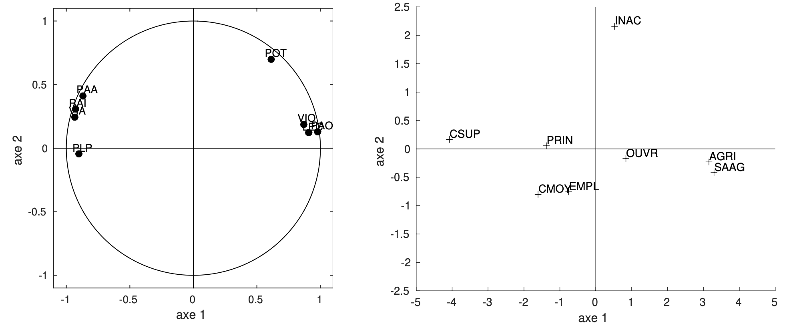
L’interprétation de ce plan se fait séquentiellement, pour chaque axe et chaque nuage de points, en regardant les contributions à la formation des axes:
Axe 1 :
1- Variables : les variables contribuant le plus à la formation de l’axe 1 sont celles dont les coordonnées sur cet axe sont proches de 1 en valeur absolue. PAA et VIO sont très proches de la contribution moyenne, on les intègre donc dans l’interprétation de l’axe si elles vont dans le sens de l’interprétation que l’on peut en faire, sans elles. L’axe 1 oppose les individus consommant du pain ordinaire, des légumes secs (et éventuellement du vin ordinaire) à ceux qui consomment du raisin, du vin (éventuellement du pain) plus sophistiqué et des plats préparés. L’axe 1, et donc la première composante principale, mesure la répartition entre aliments ordinaires bon marché et aliments plus recherchés.
Toutes les variables sont bien représentées sur l’axe (la qualité de représentation est égale à la coordonnée au carré). D’un point de vue graphique, une variable bien représentée est proche du bord du cercle des corrélation et à proximité de l’axe. La première composante principale explique donc correctement tous les types de consommations alimentaires.
2- Individus : de même, les individus contribuant le plus à la formation de l’axe 1 sont ceux dont les coordonnées sur cet axe sont les plus élevées en valeur absolue. Le premier axe met donc en opposition les agriculteurs et les cadres supérieurs quant à leurs habitudes alimentaires. Les autres catégories socio-professionnelles, assez bien représentées sur l’axe à l’exception des inactifs (cf. contributions des individus sur l’axe 1), s’échelonnent suivant la hiérarchie habituelle. Elles sont bien expliquées par l’axe.
Axe 2 :
1- Variables : L’axe 2 est défini par les variables POT et PAA. Compte tenu de la différence de contribution existant entre ces deux variables, de la contribution élevée de POT (55%), et de la qualité de représentation moyenne de PAA, la deuxième composante principale peut être considérée comme essentiellement liée à la consommation de pommes de terre. Les variables, à l’exception de POT et de PAA (dans une moindre mesure) sont assez mal représentées sur l’axe. La deuxième composante principale n’explique donc qu’un aspect très particulier de la consommation alimentaire.
2- Individus : Pour repérer les individus ayant une contribution significative, on compare les coordonnées des individus sur l’axe 2, à la racine de la deuxième valeur propre =0,94, le signe donnant le sens de contribution.
L’axe 1 reflète donc l’opposition qui existe entre les catégories socio-professionnelles dans leur alimentation, opposant les CSP modestes qui consomment des produits basiques aux catégories favorisées qui consomment des produits plus recherchés. L’axe 2 reflète quant à lui la particularité des inactifs quant à leur alimentation, fortement composée de pommes de terre (un retour aux données d’origine vient confirmer cette conclusion).
Implémentation#
De nombreuses librairies Python permettent d’utiliser facilement l’ACP, notamment scikit-learn qui propose une méthode PCA.
Nous proposons ici d’implémenter entièrement l’ACP, pour bien comprendre les mécanismes de cette approche.
import numpy as np
import matplotlib.pyplot as plt
import pandas as pd
pd.options.mode.chained_assignment = None
# Données
vins = pd.read_csv("./data/vins.csv",delimiter=",",header=None)
cat_vins = vins.loc[: , 0]
X = vins.loc[:,1:vins.shape[1]]
X = np.array(X)
n,d = X.shape
ind = np.arange(n)
variables = ['% alcool', 'acide malique', 'cendres', 'alcalinité', 'magnésium', 'phénols' ,
'flavonoïdes', 'non flavanoïdes', 'proanthocyanidines', 'couleur', 'teinte',
'OD280/OD315','proline']
# Affichage d'un tableau
def print_tab (n, d, ind, tab):
r = " " * 12 + "\t"
c = ['CP'+str(i+1) for i in range(d)]
for j in range(d - 1):
r += c[j] + "\t"
r += c[d - 1] + " \n"
for i in range(n):
r += " %8.8s\t" % ind[i]
for j in range(d - 1):
r += "%.2f \t" % tab[i][j]
r += "%.2f\n" % tab[i][d - 1]
return r
Préparation des données#
Données centrées#
\(g=X^TD{\bf 1}\) = Vecteur des moyennes arithmétiques de chaque variable
\(D=\frac{1}{n}I\) = Matrice diagonale de poids, chaque \(d_{ii}\) donnant l’importance de l’individu \(i\) dans les données
Xt = np.transpose(X)
D = 1./n * np.identity(n)
un = np.transpose(np.array([n * [1]]))
g = np.matmul (np.matmul (Xt, D), un)
print ('g = \n',g)
g =
[[1.30006180e+01]
[2.33634831e+00]
[2.36651685e+00]
[1.94949438e+01]
[9.97415730e+01]
[2.29511236e+00]
[2.02926966e+00]
[3.61853933e-01]
[1.59089888e+00]
[5.05808988e+00]
[9.57449438e-01]
[2.61168539e+00]
[7.46893258e+02]]
\(Y = X - {\bf 1} g^T = (I - {\bf 11}^TD)X\) = Tableau centré associé à \(X\)
gt = np.transpose(g)
Y = X - np.matmul (un, gt)
Données réduites#
\(V=X^TDX-gg^T=Y^TDY\) = Matrice de variance/covariance.
Yt = np.transpose(Y)
V = np.matmul (np.matmul (Yt, D), Y)
\(Z = Y D_{1/\sigma}\) = Matrice des données centrées réduites
\(R = D_{1/\sigma}VD_{1/\sigma} = Z^T D Z\) = Matrice (symétrique) de variance/covariance des données centrées réduites.
sigma = seq = [np.std(x) for x in Xt]
i_sigma = [1./s for s in sigma]
D_sigma = i_sigma * np.identity(d)
Z = np.matmul (Y, D_sigma)
R = np.matmul (np.matmul(D_sigma, V), D_sigma)
plt.imshow(R)
plt.title("Matrice de corrélation")
plt.tight_layout()
plt.colorbar();

Inertie du nuage de points#
\(M\) est une matrice symétrique définie positive correspondant à la métrique
Si \(M=D^2_{1/\sigma}\) on calcule \( \frac{1}{n}\displaystyle\sum_{i=1}^n (e_i - g)^T M (e_i-g) = \frac{1}{n}\displaystyle\sum_{i=1}^n (y_i)^T M y_i = Tr(VM)\)
Si \(M=I\) on calcule \( \frac{1}{n}\displaystyle\sum_{i=1}^n (z_i)^T M z_i = Tr(RM)\)
def calcul_inertie_somme (Y, M):
inertie = 0
for i in range(n):
inertie += np.matmul(np.transpose(Y[i]), np.matmul(M, Y[i]))
return inertie / n
def calcul_inertie_trace (V, M):
return np.trace (np.matmul (V, M))
# Si les données sont centrées mais pas encore réduites on travaille avec Y et V
M = np.matmul(D_sigma, D_sigma)
print (calcul_inertie_somme(Y, M))
print (calcul_inertie_trace(V, M))
# Si les données sont centrées réduites, on travaille avec Z et R
M = np.identity(d)
print (calcul_inertie_somme(Z, M))
print (calcul_inertie_trace(R, M))
12.999999999999995
13.000000000000004
12.999999999999998
13.000000000000004
Analyse spectrale#
eigenvalues,eigenvectors = np.linalg.eig(R)
eigenvalues = sorted(eigenvalues, reverse=True)
u = [eigenvectors[:,i] for i in range(d)]
Calcul des composantes principales#
c = []
for j in range(d):
c.append(np.matmul (Z, u[j]))
Pourcentage d’inertie expliquée par un axe#
Pourcentage d’inertie cumulée expliquée par les \(k\) premiers axes : \(\frac{\displaystyle\sum_{j=1}^k\lambda_j}{\displaystyle\sum_{j=1}^d\lambda_j}\)
i_lambda = [l/d for l in eigenvalues]
i_cum = np.cumsum(eigenvalues)/d
plt.figure(figsize=(10,5))
plt.subplot(121)
plt.plot(np.arange(1,d+1),i_lambda)
plt.title('Valeurs propres')
plt.subplot(122)
plt.plot(np.arange(1,d+1),i_cum)
plt.title('% de variance expliquée');
plt.tight_layout()

Critère de Kaiser#
nb_l = np.sum(np.array(eigenvalues)>1)
print ("On retient " + str(nb_l) + " axes")
On retient 3 axes
Analyse des résultats#
Corrélation variables/facteurs#
r = []
for j in range(d):
r.append(np.sqrt(eigenvalues[j]) * u[j])
Cercle des corrélations pour un couple de composantes principales#
Pour \(c_1\) et \(c_2\), chaque variable \(x_j\) est repérée par un point d’abscisse \(r(c_1,x^j)\) et d’ordonnée \(r(c_2, x_j)\).
i1 = i_lambda[0] * 100
i2 = i_lambda[1] * 100
i3 = i_lambda[2] * 100
i12 = i1 + i2
i13 = i1 + i3
i23 = i2 + i3
plt.figure(figsize=(18, 6))
plt.subplot(131)
plt.title('CP1/CP2 (%.2f' % i12 + '% d\'inertie)\n')
plt.xlabel('Axe 1 (%.2f' % i1 + '% d\'inertie)')
plt.ylabel('Axe 2 (%.2f' % i2 + '% d\'inertie)')
plt.xlim([-1, 1])
plt.ylim([-1, 1])
plt.axhline(0)
plt.axvline(0)
plt.gca().add_patch(plt.Circle((0,0), radius= 1, facecolor='none', edgecolor='r'))
plt.scatter(r[0], r[1])
for i, txt in enumerate(variables):
plt.annotate(txt, (r[0][i], r[1][i]))
plt.subplot(132)
plt.title('CP1/CP3 (%.2f' % i13 + '% d\'inertie)\n')
plt.xlabel('Axe 1 (%.2f' % i1 + '% d\'inertie)')
plt.ylabel('Axe 3 (%.2f' % i3 + '% d\'inertie)')
plt.xlim([-1, 1])
plt.ylim([-1, 1])
plt.axhline(0)
plt.axvline(0)
plt.gca().add_patch(plt.Circle((0,0), radius= 1, facecolor='none', edgecolor='r'))
plt.scatter(r[0], r[2])
for i, txt in enumerate(variables):
plt.annotate(txt, (r[0][i], r[2][i]))
plt.subplot(133)
plt.title('CP2/CP3 (%.2f' % i23 + '% d\'inertie)\n')
plt.xlabel('Axe 1 (%.2f' % i2 + '% d\'inertie)')
plt.ylabel('Axe 3 (%.2f' % i3 + '% d\'inertie)')
plt.xlim([-1, 1])
plt.ylim([-1, 1])
plt.axhline(0)
plt.axvline(0)
plt.gca().add_patch(plt.Circle((0,0), radius= 1, facecolor='none', edgecolor='r'))
plt.scatter(r[1], r[2])
for i, txt in enumerate(variables):
plt.annotate(txt, (r[1][i], r[2][i]))
plt.tight_layout()

Contribution des variables#
contributions_variables = []
for i in range (d):
line = []
for j in range (d):
line.append(np.transpose(u)[i][j]*np.transpose(u)[i][j])
contributions_variables.append(line)
print (print_tab (d, d, variables, contributions_variables))
CP1 CP2 CP3 CP4 CP5 CP6 CP7 CP8 CP9 CP10 CP11 CP12 CP13
% alcool 0.02 0.23 0.04 0.00 0.07 0.05 0.00 0.00 0.16 0.07 0.26 0.05 0.04
acide ma 0.06 0.05 0.01 0.29 0.00 0.29 0.18 0.00 0.00 0.01 0.01 0.01 0.10
cendres 0.00 0.10 0.39 0.05 0.02 0.02 0.02 0.02 0.03 0.00 0.09 0.25 0.00
alcalini 0.06 0.00 0.37 0.00 0.00 0.01 0.08 0.01 0.18 0.00 0.04 0.23 0.00
magnésiu 0.02 0.09 0.02 0.12 0.53 0.00 0.10 0.00 0.02 0.00 0.07 0.01 0.00
phénols 0.16 0.00 0.02 0.04 0.02 0.01 0.00 0.22 0.16 0.09 0.08 0.09 0.10
flavonoï 0.18 0.00 0.02 0.02 0.01 0.00 0.00 0.69 0.04 0.00 0.00 0.00 0.03
non flav 0.09 0.00 0.03 0.04 0.25 0.07 0.35 0.01 0.05 0.00 0.04 0.01 0.05
proantho 0.10 0.00 0.02 0.16 0.02 0.28 0.14 0.01 0.14 0.01 0.04 0.06 0.02
couleur 0.01 0.28 0.02 0.00 0.01 0.18 0.05 0.00 0.00 0.37 0.00 0.00 0.08
teinte 0.09 0.08 0.01 0.18 0.03 0.01 0.05 0.01 0.19 0.07 0.01 0.00 0.27
OD280/OD 0.14 0.03 0.03 0.03 0.01 0.07 0.00 0.02 0.01 0.36 0.02 0.00 0.27
proline 0.08 0.13 0.02 0.05 0.02 0.01 0.01 0.00 0.01 0.01 0.33 0.29 0.03
Représentation des individus#
plt.figure(figsize=(18, 6))
plt.subplot(131)
plt.title('CP1/CP2 (%.2f' % i12 + '% d\'inertie)\n')
plt.xlabel('Axe 1 (%.2f' % i1 + '% d\'inertie)')
plt.ylabel('Axe 2 (%.2f' % i2 + '% d\'inertie)')
plt.xlim([-4, 4])
plt.ylim([-4, 4])
plt.axhline(0)
plt.axvline(0)
plt.scatter(c[0], c[1])
for i, txt in enumerate(ind):
plt.annotate(txt, (c[0][i], c[1][i]))
plt.subplot(132)
plt.title('CP1/CP3 (%.2f' % i13 + '% d\'inertie)\n')
plt.xlabel('Axe 1 (%.2f' % i1 + '% d\'inertie)')
plt.ylabel('Axe 3 (%.2f' % i3 + '% d\'inertie)')
plt.xlim([-4, 4])
plt.ylim([-4, 4])
plt.axhline(0)
plt.axvline(0)
plt.scatter(c[0], c[2])
for i, txt in enumerate(ind):
plt.annotate(txt, (c[0][i], c[2][i]))
plt.subplot(133)
plt.title('CP2/CP3 (%.2f' % i23 + '% d\'inertie)\n')
plt.xlabel('Axe 1 (%.2f' % i2 + '% d\'inertie)')
plt.ylabel('Axe 3 (%.2f' % i3 + '% d\'inertie)')
plt.xlim([-4, 4])
plt.ylim([-4, 4])
plt.axhline(0)
plt.axvline(0)
plt.scatter(c[1], c[2])
for i, txt in enumerate(ind):
plt.annotate(txt, (c[1][i], c[2][i]))
plt.tight_layout()

Contribution des individus#
\(\frac{p_ic_{ki}^2}{\lambda_k}\)
contributions_individus = []
for i in range (n):
line = []
for k in range (d):
val = (np.transpose(c)[i][k]*np.transpose(c)[i][k]) / (n * eigenvalues[k])
line.append(val)
contributions_individus.append(line)
print (print_tab (n, d, ind, contributions_individus))
CP1 CP2 CP3 CP4 CP5 CP6 CP7 CP8 CP9 CP10 CP11 CP12 CP13
0 0.01 0.00 0.00 0.00 0.00 0.00 0.00 0.00 0.00 0.01 0.01 0.01 0.06
1 0.01 0.00 0.02 0.00 0.00 0.01 0.00 0.00 0.02 0.00 0.00 0.00 0.00
2 0.01 0.00 0.00 0.00 0.00 0.00 0.00 0.00 0.00 0.00 0.03 0.00 0.00
3 0.02 0.02 0.00 0.00 0.00 0.00 0.00 0.00 0.01 0.00 0.00 0.02 0.00
4 0.00 0.00 0.02 0.00 0.00 0.00 0.00 0.00 0.00 0.00 0.00 0.01 0.00
5 0.01 0.01 0.00 0.00 0.00 0.00 0.00 0.00 0.00 0.00 0.00 0.01 0.00
6 0.01 0.00 0.00 0.00 0.01 0.00 0.00 0.00 0.00 0.00 0.01 0.01 0.06
7 0.01 0.01 0.00 0.01 0.00 0.02 0.00 0.00 0.00 0.00 0.00 0.00 0.03
8 0.01 0.00 0.01 0.00 0.01 0.00 0.00 0.00 0.00 0.01 0.01 0.01 0.00
9 0.01 0.00 0.00 0.00 0.00 0.00 0.01 0.00 0.00 0.01 0.00 0.00 0.00
10 0.01 0.00 0.00 0.00 0.00 0.00 0.00 0.00 0.03 0.00 0.01 0.02 0.00
11 0.00 0.00 0.01 0.00 0.00 0.00 0.00 0.00 0.02 0.00 0.01 0.00 0.00
12 0.01 0.00 0.00 0.00 0.01 0.00 0.00 0.00 0.00 0.00 0.02 0.00 0.00
13 0.01 0.00 0.01 0.00 0.03 0.00 0.02 0.00 0.00 0.01 0.00 0.05 0.00
14 0.02 0.01 0.01 0.00 0.01 0.01 0.01 0.00 0.00 0.00 0.02 0.00 0.01
15 0.01 0.01 0.00 0.01 0.00 0.00 0.00 0.00 0.00 0.01 0.00 0.00 0.03
16 0.01 0.01 0.00 0.01 0.00 0.00 0.00 0.00 0.00 0.01 0.00 0.00 0.00
17 0.00 0.01 0.00 0.01 0.00 0.00 0.00 0.01 0.00 0.00 0.00 0.00 0.01
18 0.01 0.01 0.00 0.01 0.01 0.00 0.00 0.00 0.00 0.00 0.00 0.03 0.03
19 0.01 0.00 0.00 0.00 0.01 0.02 0.00 0.00 0.01 0.00 0.00 0.02 0.00
20 0.01 0.00 0.00 0.00 0.01 0.00 0.00 0.00 0.00 0.01 0.04 0.01 0.01
21 0.00 0.00 0.00 0.01 0.00 0.01 0.00 0.00 0.00 0.01 0.01 0.01 0.00
22 0.01 0.00 0.00 0.00 0.00 0.01 0.00 0.00 0.00 0.01 0.00 0.00 0.04
23 0.00 0.00 0.00 0.00 0.00 0.01 0.00 0.00 0.00 0.01 0.01 0.00 0.01
24 0.00 0.00 0.00 0.00 0.00 0.01 0.00 0.00 0.00 0.00 0.00 0.00 0.02
25 0.00 0.00 0.06 0.01 0.00 0.00 0.00 0.00 0.00 0.00 0.00 0.01 0.01
26 0.00 0.00 0.00 0.00 0.01 0.00 0.00 0.00 0.02 0.00 0.01 0.00 0.01
27 0.00 0.00 0.01 0.00 0.00 0.00 0.00 0.00 0.00 0.00 0.01 0.02 0.00
28 0.01 0.00 0.01 0.00 0.00 0.00 0.00 0.00 0.00 0.00 0.01 0.01 0.00
29 0.01 0.00 0.00 0.00 0.00 0.00 0.00 0.00 0.00 0.00 0.00 0.00 0.03
30 0.01 0.00 0.01 0.00 0.00 0.00 0.00 0.00 0.02 0.01 0.01 0.00 0.01
31 0.01 0.00 0.00 0.00 0.00 0.00 0.00 0.00 0.01 0.00 0.02 0.04 0.00
32 0.00 0.00 0.00 0.00 0.00 0.00 0.01 0.00 0.00 0.00 0.00 0.00 0.00
33 0.00 0.01 0.01 0.03 0.00 0.00 0.01 0.00 0.01 0.00 0.01 0.01 0.00
34 0.00 0.00 0.00 0.01 0.00 0.00 0.00 0.00 0.00 0.00 0.00 0.00 0.00
35 0.00 0.00 0.00 0.00 0.00 0.00 0.00 0.00 0.00 0.00 0.00 0.00 0.01
36 0.00 0.00 0.00 0.01 0.00 0.00 0.00 0.00 0.02 0.00 0.00 0.04 0.00
37 0.00 0.00 0.00 0.01 0.00 0.00 0.00 0.00 0.00 0.00 0.02 0.00 0.01
38 0.00 0.00 0.01 0.00 0.00 0.00 0.00 0.00 0.00 0.00 0.00 0.00 0.00
39 0.01 0.01 0.00 0.01 0.01 0.02 0.01 0.00 0.01 0.00 0.01 0.05 0.00
40 0.01 0.00 0.00 0.00 0.00 0.00 0.00 0.00 0.01 0.00 0.02 0.00 0.01
41 0.00 0.00 0.00 0.01 0.00 0.02 0.00 0.00 0.00 0.00 0.00 0.02 0.00
42 0.01 0.00 0.00 0.00 0.00 0.01 0.01 0.00 0.02 0.00 0.00 0.01 0.00
43 0.00 0.00 0.00 0.01 0.00 0.01 0.00 0.00 0.01 0.00 0.00 0.00 0.00
44 0.01 0.00 0.00 0.00 0.00 0.00 0.00 0.00 0.01 0.00 0.00 0.01 0.01
45 0.00 0.01 0.00 0.00 0.00 0.03 0.00 0.00 0.00 0.00 0.01 0.01 0.00
46 0.01 0.00 0.00 0.01 0.00 0.01 0.01 0.00 0.00 0.00 0.00 0.00 0.00
47 0.01 0.00 0.01 0.01 0.00 0.00 0.00 0.00 0.00 0.00 0.00 0.00 0.00
48 0.00 0.00 0.00 0.00 0.00 0.00 0.00 0.00 0.01 0.00 0.00 0.00 0.00
49 0.01 0.01 0.00 0.00 0.00 0.00 0.00 0.00 0.00 0.01 0.00 0.01 0.01
50 0.01 0.00 0.02 0.01 0.00 0.01 0.00 0.00 0.00 0.00 0.04 0.00 0.02
51 0.01 0.00 0.00 0.00 0.00 0.00 0.00 0.00 0.02 0.00 0.02 0.01 0.00
52 0.01 0.01 0.00 0.00 0.00 0.00 0.00 0.00 0.04 0.00 0.00 0.00 0.01
53 0.01 0.01 0.00 0.01 0.00 0.00 0.00 0.00 0.00 0.00 0.00 0.00 0.00
54 0.01 0.00 0.00 0.00 0.01 0.00 0.00 0.00 0.00 0.00 0.00 0.00 0.01
55 0.01 0.00 0.00 0.00 0.01 0.00 0.00 0.00 0.01 0.00 0.00 0.00 0.00
56 0.01 0.00 0.00 0.00 0.00 0.00 0.00 0.00 0.00 0.00 0.02 0.00 0.01
57 0.01 0.00 0.00 0.00 0.00 0.00 0.00 0.00 0.01 0.00 0.02 0.00 0.01
58 0.01 0.01 0.00 0.00 0.00 0.00 0.01 0.00 0.01 0.01 0.00 0.00 0.00
59 0.00 0.02 0.08 0.01 0.00 0.00 0.00 0.00 0.01 0.01 0.00 0.00 0.01
60 0.00 0.00 0.00 0.05 0.01 0.00 0.01 0.00 0.02 0.00 0.00 0.00 0.02
61 0.00 0.00 0.01 0.01 0.00 0.00 0.00 0.00 0.02 0.00 0.02 0.00 0.02
62 0.00 0.00 0.01 0.01 0.00 0.00 0.00 0.00 0.01 0.00 0.04 0.00 0.01
63 0.01 0.01 0.00 0.00 0.00 0.01 0.01 0.00 0.00 0.00 0.01 0.00 0.11
64 0.00 0.01 0.00 0.03 0.00 0.00 0.00 0.00 0.00 0.00 0.00 0.03 0.06
65 0.00 0.00 0.00 0.00 0.00 0.01 0.00 0.00 0.00 0.00 0.01 0.02 0.03
66 0.01 0.01 0.02 0.01 0.00 0.01 0.00 0.00 0.00 0.00 0.02 0.00 0.01
67 0.00 0.01 0.00 0.00 0.00 0.00 0.02 0.00 0.00 0.03 0.00 0.01 0.00
68 0.00 0.00 0.00 0.04 0.00 0.00 0.00 0.00 0.03 0.02 0.02 0.00 0.00
69 0.00 0.00 0.01 0.01 0.12 0.00 0.02 0.00 0.02 0.01 0.00 0.00 0.01
70 0.00 0.00 0.00 0.01 0.01 0.00 0.00 0.00 0.01 0.00 0.03 0.00 0.02
71 0.00 0.00 0.01 0.00 0.00 0.00 0.02 0.00 0.05 0.00 0.03 0.02 0.03
72 0.00 0.00 0.00 0.00 0.00 0.00 0.03 0.00 0.02 0.00 0.02 0.00 0.01
73 0.01 0.00 0.04 0.01 0.03 0.00 0.00 0.00 0.02 0.00 0.03 0.11 0.00
74 0.00 0.00 0.00 0.00 0.01 0.00 0.02 0.02 0.01 0.00 0.01 0.04 0.00
75 0.00 0.01 0.01 0.00 0.00 0.00 0.00 0.00 0.00 0.01 0.00 0.00 0.05
76 0.00 0.01 0.02 0.00 0.00 0.00 0.00 0.00 0.01 0.00 0.02 0.00 0.01
77 0.00 0.00 0.00 0.00 0.01 0.01 0.01 0.00 0.01 0.00 0.00 0.00 0.00
78 0.00 0.00 0.01 0.01 0.04 0.02 0.04 0.00 0.00 0.00 0.00 0.00 0.02
79 0.00 0.00 0.01 0.01 0.00 0.00 0.01 0.00 0.00 0.00 0.02 0.00 0.02
80 0.00 0.03 0.00 0.00 0.00 0.00 0.00 0.00 0.00 0.01 0.01 0.00 0.02
81 0.00 0.00 0.00 0.00 0.00 0.00 0.00 0.00 0.01 0.00 0.00 0.00 0.00
82 0.00 0.01 0.01 0.01 0.01 0.00 0.00 0.00 0.02 0.00 0.01 0.00 0.00
83 0.01 0.00 0.00 0.00 0.01 0.00 0.01 0.01 0.00 0.00 0.00 0.00 0.00
84 0.00 0.00 0.00 0.00 0.01 0.01 0.01 0.00 0.01 0.00 0.04 0.05 0.04
85 0.00 0.01 0.00 0.00 0.00 0.00 0.00 0.00 0.00 0.00 0.01 0.01 0.00
86 0.00 0.01 0.00 0.01 0.00 0.00 0.00 0.00 0.02 0.00 0.00 0.00 0.01
87 0.00 0.01 0.02 0.01 0.00 0.00 0.00 0.00 0.01 0.01 0.00 0.00 0.00
88 0.00 0.01 0.00 0.00 0.00 0.00 0.00 0.00 0.00 0.00 0.02 0.00 0.01
89 0.00 0.02 0.00 0.00 0.01 0.00 0.01 0.00 0.00 0.00 0.00 0.01 0.03
90 0.00 0.01 0.00 0.00 0.01 0.00 0.01 0.00 0.00 0.00 0.01 0.01 0.00
91 0.00 0.01 0.00 0.00 0.00 0.00 0.00 0.00 0.00 0.00 0.00 0.01 0.02
92 0.00 0.01 0.00 0.00 0.01 0.01 0.00 0.00 0.01 0.00 0.00 0.01 0.03
93 0.00 0.01 0.00 0.01 0.00 0.00 0.00 0.00 0.00 0.00 0.00 0.02 0.01
94 0.00 0.01 0.00 0.00 0.01 0.00 0.01 0.01 0.02 0.00 0.00 0.00 0.09
95 0.01 0.00 0.00 0.01 0.09 0.02 0.07 0.00 0.01 0.00 0.00 0.00 0.02
96 0.00 0.00 0.01 0.01 0.07 0.00 0.00 0.00 0.00 0.00 0.02 0.02 0.00
97 0.00 0.01 0.00 0.00 0.00 0.00 0.00 0.00 0.00 0.00 0.00 0.01 0.03
98 0.01 0.00 0.00 0.01 0.00 0.01 0.01 0.00 0.01 0.01 0.00 0.01 0.05
99 0.00 0.01 0.00 0.01 0.00 0.00 0.04 0.00 0.01 0.00 0.00 0.01 0.08
100 0.00 0.01 0.01 0.00 0.00 0.00 0.00 0.00 0.00 0.01 0.00 0.03 0.02
101 0.00 0.01 0.01 0.00 0.00 0.00 0.00 0.00 0.01 0.00 0.00 0.00 0.02
102 0.00 0.00 0.00 0.00 0.00 0.00 0.00 0.00 0.02 0.00 0.00 0.00 0.02
103 0.00 0.02 0.00 0.00 0.00 0.00 0.00 0.00 0.00 0.01 0.00 0.02 0.00
104 0.00 0.01 0.00 0.00 0.00 0.00 0.00 0.00 0.00 0.01 0.00 0.02 0.03
105 0.00 0.01 0.00 0.00 0.01 0.00 0.01 0.01 0.00 0.01 0.01 0.00 0.11
106 0.00 0.01 0.00 0.00 0.00 0.00 0.00 0.00 0.00 0.01 0.00 0.00 0.02
107 0.00 0.00 0.00 0.00 0.00 0.00 0.00 0.01 0.01 0.00 0.00 0.00 0.05
108 0.00 0.01 0.00 0.00 0.00 0.01 0.00 0.00 0.00 0.00 0.01 0.00 0.04
109 0.00 0.00 0.01 0.00 0.00 0.01 0.00 0.00 0.01 0.00 0.04 0.01 0.01
110 0.00 0.00 0.00 0.07 0.03 0.02 0.03 0.00 0.00 0.01 0.01 0.02 0.00
111 0.00 0.01 0.00 0.01 0.00 0.00 0.01 0.00 0.00 0.01 0.01 0.00 0.00
112 0.00 0.00 0.02 0.02 0.00 0.00 0.01 0.00 0.01 0.01 0.01 0.02 0.01
113 0.00 0.01 0.00 0.00 0.00 0.01 0.00 0.00 0.01 0.00 0.00 0.00 0.01
114 0.00 0.01 0.01 0.00 0.00 0.00 0.01 0.00 0.02 0.00 0.00 0.00 0.01
115 0.00 0.03 0.01 0.00 0.01 0.01 0.02 0.00 0.01 0.01 0.00 0.00 0.10
116 0.00 0.02 0.00 0.00 0.00 0.00 0.00 0.00 0.00 0.00 0.00 0.01 0.04
117 0.00 0.01 0.00 0.00 0.01 0.00 0.00 0.00 0.00 0.00 0.02 0.00 0.01
118 0.01 0.00 0.01 0.00 0.00 0.01 0.00 0.00 0.01 0.00 0.00 0.00 0.00
119 0.00 0.01 0.00 0.01 0.00 0.00 0.01 0.00 0.00 0.00 0.01 0.00 0.01
120 0.00 0.00 0.00 0.01 0.00 0.00 0.00 0.00 0.04 0.00 0.01 0.00 0.00
121 0.00 0.00 0.11 0.00 0.00 0.01 0.00 0.04 0.06 0.02 0.00 0.00 0.00
122 0.00 0.00 0.04 0.01 0.00 0.01 0.00 0.00 0.00 0.00 0.00 0.00 0.00
123 0.00 0.00 0.00 0.08 0.00 0.02 0.01 0.00 0.00 0.00 0.01 0.00 0.00
124 0.00 0.00 0.01 0.09 0.00 0.00 0.00 0.00 0.00 0.00 0.02 0.01 0.00
125 0.00 0.01 0.00 0.01 0.00 0.00 0.00 0.00 0.01 0.00 0.00 0.01 0.00
126 0.00 0.00 0.00 0.01 0.00 0.01 0.01 0.01 0.02 0.01 0.01 0.00 0.01
127 0.00 0.00 0.04 0.00 0.00 0.01 0.00 0.00 0.00 0.00 0.00 0.00 0.00
128 0.00 0.01 0.01 0.00 0.00 0.00 0.00 0.00 0.00 0.01 0.00 0.00 0.02
129 0.00 0.00 0.00 0.01 0.00 0.01 0.00 0.00 0.00 0.00 0.01 0.01 0.00
130 0.00 0.00 0.01 0.01 0.03 0.00 0.01 0.00 0.00 0.02 0.00 0.01 0.00
131 0.01 0.00 0.00 0.00 0.01 0.00 0.01 0.00 0.00 0.00 0.00 0.01 0.01
132 0.01 0.00 0.00 0.00 0.01 0.00 0.03 0.01 0.01 0.01 0.00 0.00 0.00
133 0.01 0.00 0.00 0.00 0.02 0.01 0.01 0.00 0.00 0.01 0.00 0.00 0.06
134 0.01 0.00 0.00 0.00 0.01 0.02 0.00 0.00 0.01 0.01 0.00 0.00 0.01
135 0.01 0.00 0.00 0.00 0.00 0.01 0.01 0.00 0.01 0.00 0.00 0.01 0.00
136 0.02 0.00 0.00 0.00 0.00 0.01 0.01 0.00 0.00 0.01 0.04 0.00 0.01
137 0.02 0.00 0.01 0.00 0.00 0.01 0.02 0.00 0.00 0.00 0.00 0.01 0.02
138 0.01 0.00 0.00 0.00 0.01 0.00 0.01 0.00 0.00 0.00 0.01 0.00 0.00
139 0.01 0.00 0.01 0.00 0.00 0.00 0.00 0.01 0.00 0.00 0.01 0.01 0.00
140 0.01 0.00 0.00 0.00 0.00 0.00 0.00 0.00 0.00 0.00 0.00 0.01 0.03
141 0.01 0.00 0.00 0.00 0.00 0.01 0.01 0.00 0.00 0.00 0.00 0.00 0.05
142 0.01 0.00 0.00 0.01 0.00 0.01 0.00 0.00 0.00 0.00 0.01 0.00 0.00
143 0.01 0.00 0.00 0.00 0.00 0.02 0.01 0.00 0.00 0.00 0.01 0.00 0.01
144 0.01 0.00 0.01 0.00 0.02 0.00 0.00 0.00 0.00 0.02 0.02 0.01 0.00
145 0.01 0.00 0.00 0.00 0.00 0.00 0.00 0.00 0.00 0.02 0.00 0.01 0.03
146 0.02 0.00 0.01 0.01 0.00 0.02 0.00 0.00 0.01 0.01 0.00 0.01 0.00
147 0.02 0.00 0.00 0.01 0.00 0.00 0.00 0.00 0.00 0.00 0.00 0.00 0.00
148 0.01 0.01 0.00 0.00 0.00 0.00 0.00 0.00 0.00 0.00 0.00 0.00 0.00
149 0.01 0.01 0.00 0.00 0.01 0.00 0.00 0.01 0.00 0.00 0.00 0.00 0.02
150 0.01 0.01 0.00 0.00 0.03 0.00 0.02 0.01 0.00 0.00 0.00 0.01 0.01
151 0.01 0.01 0.00 0.00 0.02 0.01 0.03 0.00 0.00 0.01 0.00 0.01 0.01
152 0.00 0.01 0.01 0.00 0.02 0.01 0.02 0.00 0.00 0.02 0.00 0.01 0.00
153 0.01 0.01 0.00 0.00 0.00 0.03 0.01 0.00 0.00 0.00 0.00 0.00 0.00
154 0.01 0.00 0.01 0.00 0.00 0.03 0.00 0.00 0.00 0.00 0.00 0.00 0.04
155 0.02 0.01 0.00 0.01 0.00 0.00 0.02 0.00 0.00 0.00 0.00 0.01 0.00
156 0.01 0.01 0.00 0.01 0.00 0.00 0.00 0.00 0.00 0.00 0.00 0.01 0.00
157 0.01 0.00 0.01 0.00 0.00 0.01 0.00 0.00 0.00 0.00 0.00 0.06 0.01
158 0.00 0.03 0.01 0.01 0.01 0.09 0.00 0.01 0.01 0.00 0.02 0.00 0.01
159 0.00 0.01 0.00 0.00 0.01 0.07 0.01 0.01 0.00 0.00 0.00 0.00 0.00
160 0.01 0.00 0.00 0.01 0.00 0.00 0.00 0.00 0.02 0.00 0.00 0.01 0.02
161 0.01 0.00 0.00 0.01 0.00 0.01 0.00 0.00 0.00 0.00 0.01 0.00 0.00
162 0.01 0.00 0.00 0.00 0.00 0.00 0.01 0.00 0.00 0.00 0.00 0.00 0.00
163 0.01 0.00 0.00 0.00 0.00 0.00 0.00 0.00 0.00 0.00 0.00 0.00 0.00
164 0.01 0.01 0.00 0.00 0.00 0.00 0.01 0.00 0.01 0.01 0.00 0.00 0.00
165 0.01 0.00 0.00 0.00 0.00 0.00 0.00 0.00 0.02 0.00 0.01 0.00 0.00
166 0.01 0.02 0.00 0.00 0.00 0.00 0.00 0.00 0.01 0.01 0.00 0.00 0.04
167 0.01 0.00 0.01 0.00 0.00 0.00 0.00 0.00 0.00 0.03 0.01 0.00 0.02
168 0.01 0.01 0.00 0.00 0.00 0.00 0.01 0.00 0.02 0.00 0.00 0.00 0.00
169 0.01 0.02 0.01 0.00 0.01 0.01 0.01 0.00 0.00 0.00 0.00 0.00 0.03
170 0.01 0.00 0.00 0.00 0.00 0.00 0.00 0.00 0.01 0.00 0.01 0.00 0.00
171 0.02 0.00 0.01 0.00 0.00 0.01 0.01 0.00 0.01 0.01 0.00 0.00 0.00
172 0.01 0.01 0.00 0.00 0.00 0.00 0.01 0.00 0.00 0.00 0.00 0.01 0.00
173 0.01 0.01 0.00 0.01 0.00 0.01 0.01 0.00 0.00 0.00 0.00 0.00 0.01
174 0.01 0.01 0.00 0.00 0.00 0.00 0.00 0.00 0.01 0.00 0.00 0.00 0.00
175 0.01 0.02 0.00 0.00 0.01 0.00 0.00 0.00 0.00 0.01 0.00 0.01 0.00
176 0.01 0.01 0.00 0.00 0.00 0.01 0.00 0.00 0.00 0.00 0.00 0.00 0.01
177 0.01 0.02 0.00 0.00 0.01 0.00 0.00 0.00 0.00 0.00 0.01 0.00 0.00
Tableau des cosinus carrés#
\(\frac{c_{ki}^2}{\displaystyle\sum_{j=1}^d c_{ji}^2}\)
cosinus_carres = []
c = np.array(c)
for i in range(n):
line = []
# on prend la représentation de l'individu i sur chacune des composantes
tot = np.sum([x*x for x in c[:,i]])
for k in range(d):
line.append(c[:,i][k]*c[:,i][k]/tot)
cosinus_carres.append(line)
print (print_tab (n, d, ind, cosinus_carres))
CP1 CP2 CP3 CP4 CP5 CP6 CP7 CP8 CP9 CP10 CP11 CP12 CP13
0 0.69 0.13 0.00 0.00 0.03 0.00 0.02 0.00 0.00 0.02 0.03 0.01 0.07
1 0.43 0.01 0.36 0.01 0.01 0.08 0.00 0.00 0.09 0.01 0.01 0.00 0.00
2 0.57 0.10 0.09 0.05 0.01 0.03 0.02 0.00 0.01 0.00 0.13 0.01 0.00
3 0.60 0.32 0.00 0.01 0.00 0.00 0.01 0.01 0.02 0.00 0.00 0.02 0.00
4 0.14 0.11 0.58 0.02 0.01 0.02 0.03 0.00 0.02 0.01 0.02 0.04 0.00
5 0.60 0.29 0.03 0.02 0.03 0.00 0.01 0.00 0.01 0.01 0.00 0.01 0.00
6 0.52 0.12 0.08 0.00 0.09 0.03 0.00 0.01 0.01 0.00 0.02 0.02 0.09
7 0.38 0.23 0.00 0.13 0.00 0.18 0.00 0.00 0.00 0.01 0.00 0.01 0.05
8 0.51 0.07 0.25 0.00 0.06 0.00 0.00 0.00 0.02 0.03 0.03 0.02 0.00
9 0.71 0.06 0.09 0.01 0.02 0.00 0.07 0.00 0.00 0.03 0.00 0.00 0.00
10 0.73 0.10 0.01 0.00 0.01 0.00 0.00 0.00 0.09 0.00 0.02 0.03 0.00
11 0.39 0.05 0.18 0.10 0.07 0.04 0.02 0.00 0.12 0.00 0.03 0.00 0.01
12 0.53 0.05 0.09 0.02 0.17 0.01 0.01 0.00 0.03 0.00 0.09 0.00 0.00
13 0.50 0.05 0.06 0.00 0.17 0.02 0.09 0.00 0.01 0.02 0.00 0.06 0.00
14 0.65 0.15 0.06 0.00 0.04 0.02 0.04 0.00 0.01 0.00 0.02 0.00 0.00
15 0.45 0.24 0.00 0.18 0.02 0.02 0.00 0.00 0.00 0.02 0.01 0.00 0.05
16 0.39 0.44 0.06 0.07 0.00 0.00 0.00 0.01 0.01 0.02 0.00 0.00 0.00
17 0.39 0.29 0.07 0.13 0.02 0.01 0.00 0.03 0.00 0.01 0.02 0.01 0.02
18 0.54 0.27 0.01 0.04 0.06 0.00 0.00 0.01 0.00 0.00 0.01 0.04 0.03
19 0.45 0.12 0.00 0.02 0.08 0.20 0.00 0.00 0.03 0.01 0.00 0.07 0.00
20 0.70 0.04 0.01 0.00 0.07 0.00 0.01 0.00 0.00 0.02 0.13 0.02 0.01
21 0.19 0.01 0.14 0.17 0.02 0.24 0.01 0.02 0.00 0.08 0.05 0.07 0.00
22 0.74 0.00 0.01 0.00 0.02 0.12 0.00 0.00 0.00 0.03 0.00 0.00 0.08
23 0.50 0.05 0.00 0.03 0.03 0.11 0.08 0.02 0.01 0.04 0.09 0.00 0.04
24 0.49 0.02 0.12 0.00 0.05 0.13 0.06 0.01 0.02 0.02 0.00 0.02 0.07
25 0.05 0.05 0.77 0.09 0.00 0.00 0.01 0.00 0.00 0.00 0.00 0.01 0.01
26 0.44 0.07 0.00 0.01 0.18 0.05 0.03 0.00 0.12 0.01 0.08 0.00 0.03
27 0.26 0.00 0.32 0.04 0.02 0.06 0.02 0.00 0.01 0.02 0.09 0.13 0.02
28 0.51 0.05 0.21 0.06 0.07 0.04 0.00 0.00 0.00 0.00 0.02 0.03 0.00
29 0.65 0.00 0.15 0.01 0.03 0.01 0.00 0.03 0.03 0.00 0.00 0.00 0.08
30 0.49 0.12 0.15 0.01 0.03 0.03 0.01 0.00 0.09 0.03 0.02 0.01 0.01
31 0.59 0.18 0.01 0.01 0.00 0.00 0.02 0.01 0.02 0.00 0.05 0.10 0.00
32 0.52 0.00 0.01 0.11 0.08 0.00 0.19 0.01 0.05 0.01 0.00 0.01 0.01
33 0.23 0.17 0.09 0.35 0.00 0.01 0.06 0.00 0.02 0.00 0.03 0.03 0.00
34 0.42 0.10 0.05 0.24 0.00 0.11 0.01 0.00 0.01 0.01 0.03 0.01 0.01
35 0.75 0.01 0.04 0.02 0.01 0.01 0.09 0.00 0.03 0.01 0.01 0.01 0.02
36 0.28 0.06 0.03 0.24 0.01 0.06 0.00 0.00 0.13 0.00 0.01 0.17 0.01
37 0.35 0.00 0.00 0.25 0.03 0.05 0.05 0.00 0.00 0.04 0.20 0.00 0.03
38 0.37 0.10 0.34 0.10 0.00 0.03 0.00 0.02 0.00 0.01 0.01 0.01 0.01
39 0.34 0.17 0.01 0.08 0.09 0.13 0.05 0.00 0.03 0.00 0.03 0.08 0.00
40 0.67 0.06 0.00 0.02 0.02 0.05 0.03 0.00 0.05 0.00 0.07 0.01 0.01
41 0.08 0.01 0.11 0.30 0.02 0.30 0.00 0.03 0.02 0.00 0.01 0.12 0.00
42 0.67 0.09 0.01 0.02 0.01 0.05 0.07 0.00 0.06 0.00 0.00 0.01 0.00
43 0.05 0.03 0.01 0.47 0.02 0.24 0.08 0.01 0.07 0.00 0.02 0.00 0.00
44 0.66 0.00 0.06 0.09 0.03 0.02 0.00 0.00 0.06 0.00 0.01 0.03 0.03
45 0.14 0.34 0.00 0.05 0.00 0.39 0.00 0.00 0.01 0.00 0.03 0.04 0.00
46 0.56 0.11 0.02 0.15 0.02 0.08 0.04 0.00 0.00 0.00 0.02 0.00 0.00
47 0.70 0.04 0.12 0.09 0.00 0.01 0.02 0.00 0.00 0.00 0.01 0.00 0.01
48 0.58 0.22 0.00 0.01 0.02 0.04 0.01 0.00 0.09 0.01 0.00 0.00 0.00
49 0.57 0.24 0.03 0.00 0.02 0.04 0.00 0.02 0.00 0.04 0.00 0.02 0.01
50 0.53 0.00 0.20 0.06 0.00 0.08 0.00 0.00 0.01 0.01 0.08 0.01 0.02
51 0.68 0.05 0.00 0.00 0.05 0.00 0.01 0.00 0.10 0.01 0.08 0.03 0.00
52 0.68 0.14 0.02 0.00 0.02 0.00 0.00 0.00 0.11 0.00 0.01 0.00 0.01
53 0.45 0.32 0.01 0.13 0.03 0.01 0.02 0.00 0.01 0.00 0.01 0.01 0.00
54 0.56 0.13 0.11 0.01 0.09 0.02 0.02 0.01 0.01 0.00 0.01 0.00 0.03
55 0.61 0.18 0.03 0.01 0.08 0.03 0.01 0.01 0.03 0.00 0.00 0.01 0.00
56 0.66 0.18 0.03 0.00 0.02 0.00 0.00 0.00 0.01 0.00 0.08 0.00 0.01
57 0.56 0.17 0.01 0.03 0.06 0.01 0.01 0.00 0.04 0.00 0.08 0.00 0.02
58 0.66 0.20 0.01 0.00 0.00 0.01 0.05 0.00 0.03 0.02 0.01 0.00 0.00
59 0.03 0.28 0.61 0.03 0.01 0.00 0.00 0.01 0.01 0.01 0.00 0.00 0.01
60 0.14 0.11 0.04 0.49 0.06 0.00 0.07 0.00 0.07 0.01 0.00 0.00 0.02
61 0.29 0.06 0.22 0.18 0.01 0.04 0.01 0.01 0.08 0.00 0.07 0.00 0.03
62 0.00 0.17 0.35 0.16 0.02 0.04 0.04 0.00 0.04 0.00 0.16 0.01 0.01
63 0.33 0.29 0.00 0.04 0.00 0.05 0.09 0.01 0.01 0.00 0.03 0.00 0.15
64 0.03 0.32 0.04 0.40 0.00 0.00 0.02 0.00 0.00 0.01 0.01 0.07 0.10
65 0.17 0.12 0.07 0.10 0.00 0.22 0.01 0.00 0.00 0.01 0.07 0.14 0.10
66 0.28 0.20 0.23 0.11 0.03 0.09 0.01 0.00 0.00 0.00 0.04 0.00 0.01
67 0.00 0.54 0.11 0.00 0.03 0.00 0.17 0.00 0.00 0.11 0.01 0.02 0.00
68 0.06 0.00 0.04 0.53 0.03 0.01 0.01 0.01 0.13 0.09 0.09 0.00 0.00
69 0.13 0.06 0.05 0.04 0.57 0.01 0.07 0.01 0.04 0.02 0.00 0.00 0.01
70 0.29 0.09 0.05 0.16 0.11 0.01 0.00 0.02 0.06 0.02 0.14 0.01 0.05
71 0.18 0.06 0.25 0.00 0.04 0.01 0.14 0.01 0.15 0.01 0.09 0.04 0.03
72 0.08 0.17 0.00 0.00 0.00 0.04 0.38 0.01 0.16 0.00 0.12 0.00 0.02
73 0.23 0.00 0.39 0.03 0.14 0.00 0.01 0.00 0.04 0.00 0.04 0.11 0.00
74 0.30 0.15 0.02 0.00 0.09 0.00 0.17 0.09 0.03 0.02 0.02 0.10 0.01
75 0.06 0.50 0.20 0.06 0.04 0.00 0.01 0.01 0.00 0.03 0.00 0.00 0.07
76 0.01 0.35 0.46 0.00 0.00 0.02 0.03 0.00 0.04 0.00 0.05 0.01 0.02
77 0.26 0.24 0.01 0.06 0.14 0.08 0.11 0.00 0.09 0.01 0.00 0.00 0.00
78 0.09 0.03 0.08 0.05 0.37 0.14 0.22 0.00 0.00 0.00 0.00 0.01 0.02
79 0.02 0.13 0.38 0.11 0.00 0.05 0.17 0.00 0.01 0.00 0.08 0.01 0.04
80 0.04 0.83 0.01 0.01 0.00 0.00 0.01 0.00 0.00 0.02 0.03 0.00 0.03
81 0.25 0.48 0.03 0.02 0.02 0.00 0.05 0.01 0.08 0.03 0.02 0.00 0.00
82 0.02 0.49 0.15 0.09 0.09 0.00 0.04 0.01 0.08 0.00 0.02 0.00 0.00
83 0.61 0.00 0.02 0.05 0.12 0.00 0.13 0.03 0.02 0.00 0.00 0.00 0.00
84 0.07 0.22 0.04 0.03 0.08 0.08 0.07 0.01 0.03 0.00 0.15 0.16 0.07
85 0.10 0.64 0.01 0.10 0.01 0.00 0.01 0.01 0.00 0.01 0.04 0.06 0.00
86 0.07 0.56 0.07 0.12 0.01 0.01 0.01 0.00 0.13 0.00 0.00 0.00 0.03
87 0.02 0.38 0.36 0.07 0.02 0.00 0.02 0.01 0.05 0.04 0.01 0.01 0.00
88 0.17 0.45 0.13 0.02 0.07 0.00 0.00 0.00 0.01 0.00 0.11 0.01 0.01
89 0.03 0.60 0.06 0.00 0.15 0.00 0.05 0.01 0.02 0.00 0.01 0.03 0.04
90 0.20 0.49 0.00 0.02 0.09 0.03 0.06 0.00 0.00 0.00 0.04 0.05 0.00
91 0.28 0.39 0.07 0.04 0.03 0.06 0.00 0.00 0.02 0.02 0.02 0.02 0.04
92 0.36 0.23 0.00 0.03 0.13 0.08 0.03 0.02 0.03 0.02 0.00 0.02 0.05
93 0.06 0.60 0.00 0.18 0.01 0.03 0.00 0.01 0.00 0.01 0.00 0.07 0.02
94 0.09 0.47 0.00 0.01 0.08 0.01 0.05 0.04 0.08 0.00 0.00 0.00 0.15
95 0.20 0.00 0.02 0.03 0.44 0.06 0.22 0.00 0.01 0.01 0.00 0.00 0.01
96 0.02 0.01 0.10 0.09 0.65 0.03 0.01 0.01 0.00 0.00 0.06 0.03 0.00
97 0.11 0.67 0.12 0.01 0.00 0.02 0.00 0.00 0.00 0.00 0.00 0.02 0.05
98 0.42 0.17 0.00 0.07 0.00 0.09 0.06 0.01 0.05 0.03 0.00 0.02 0.07
99 0.12 0.29 0.03 0.09 0.03 0.02 0.27 0.00 0.02 0.00 0.00 0.02 0.09
100 0.06 0.50 0.22 0.00 0.03 0.01 0.01 0.00 0.01 0.04 0.00 0.08 0.03
101 0.03 0.56 0.24 0.01 0.01 0.00 0.02 0.00 0.07 0.00 0.00 0.00 0.05
102 0.01 0.27 0.20 0.09 0.02 0.09 0.05 0.01 0.18 0.00 0.02 0.00 0.07
103 0.04 0.74 0.06 0.02 0.00 0.02 0.00 0.01 0.02 0.03 0.01 0.05 0.00
104 0.02 0.64 0.03 0.03 0.01 0.01 0.03 0.00 0.02 0.04 0.00 0.08 0.08
105 0.25 0.23 0.07 0.01 0.08 0.00 0.09 0.02 0.01 0.02 0.05 0.00 0.16
106 0.02 0.70 0.03 0.02 0.03 0.01 0.01 0.02 0.01 0.05 0.02 0.01 0.06
107 0.37 0.26 0.01 0.00 0.05 0.05 0.00 0.06 0.07 0.01 0.00 0.01 0.12
108 0.00 0.60 0.02 0.09 0.01 0.14 0.01 0.00 0.01 0.00 0.04 0.00 0.07
109 0.22 0.19 0.28 0.03 0.01 0.06 0.01 0.00 0.03 0.00 0.14 0.03 0.01
110 0.07 0.07 0.00 0.44 0.18 0.08 0.10 0.00 0.00 0.01 0.01 0.02 0.00
111 0.01 0.55 0.00 0.13 0.01 0.07 0.11 0.00 0.01 0.05 0.05 0.00 0.00
112 0.12 0.04 0.29 0.21 0.04 0.02 0.09 0.01 0.05 0.04 0.04 0.03 0.02
113 0.02 0.53 0.12 0.07 0.01 0.10 0.03 0.00 0.06 0.01 0.02 0.00 0.03
114 0.03 0.43 0.20 0.00 0.08 0.00 0.11 0.00 0.11 0.00 0.02 0.00 0.02
115 0.01 0.61 0.07 0.03 0.04 0.04 0.08 0.00 0.02 0.02 0.00 0.00 0.07
116 0.01 0.80 0.01 0.02 0.01 0.00 0.03 0.00 0.00 0.01 0.00 0.02 0.07
117 0.00 0.57 0.07 0.01 0.18 0.00 0.00 0.01 0.02 0.00 0.10 0.00 0.03
118 0.44 0.12 0.27 0.06 0.02 0.05 0.00 0.01 0.03 0.01 0.00 0.01 0.00
119 0.03 0.54 0.01 0.20 0.01 0.04 0.10 0.00 0.00 0.00 0.03 0.01 0.02
120 0.07 0.25 0.16 0.18 0.02 0.00 0.01 0.00 0.24 0.00 0.05 0.02 0.01
121 0.05 0.00 0.75 0.00 0.00 0.02 0.01 0.06 0.08 0.02 0.00 0.00 0.00
122 0.10 0.03 0.63 0.09 0.01 0.10 0.03 0.00 0.00 0.00 0.01 0.00 0.00
123 0.01 0.02 0.01 0.75 0.00 0.13 0.03 0.01 0.00 0.01 0.01 0.00 0.00
124 0.05 0.10 0.11 0.69 0.01 0.00 0.00 0.00 0.00 0.00 0.03 0.01 0.00
125 0.00 0.60 0.03 0.15 0.01 0.00 0.04 0.01 0.10 0.00 0.03 0.02 0.01
126 0.00 0.21 0.06 0.21 0.02 0.12 0.09 0.06 0.13 0.04 0.04 0.00 0.03
127 0.15 0.09 0.66 0.00 0.02 0.04 0.00 0.01 0.00 0.01 0.00 0.01 0.00
128 0.03 0.47 0.21 0.06 0.00 0.06 0.02 0.03 0.01 0.05 0.02 0.00 0.05
129 0.34 0.14 0.06 0.23 0.03 0.10 0.01 0.00 0.01 0.01 0.06 0.02 0.00
130 0.14 0.00 0.11 0.17 0.41 0.00 0.05 0.01 0.01 0.08 0.00 0.02 0.00
131 0.53 0.01 0.05 0.01 0.17 0.05 0.08 0.02 0.00 0.01 0.01 0.03 0.02
132 0.63 0.01 0.00 0.01 0.09 0.00 0.19 0.03 0.02 0.02 0.01 0.00 0.00
133 0.39 0.01 0.02 0.00 0.25 0.09 0.09 0.00 0.01 0.04 0.01 0.00 0.09
134 0.44 0.02 0.10 0.06 0.09 0.16 0.01 0.02 0.06 0.04 0.01 0.00 0.01
135 0.68 0.01 0.09 0.04 0.04 0.05 0.04 0.00 0.04 0.00 0.00 0.01 0.00
136 0.78 0.00 0.00 0.00 0.01 0.06 0.04 0.00 0.00 0.02 0.07 0.00 0.01
137 0.67 0.02 0.13 0.01 0.01 0.03 0.09 0.00 0.00 0.00 0.00 0.01 0.02
138 0.74 0.01 0.08 0.00 0.09 0.01 0.05 0.00 0.00 0.00 0.02 0.00 0.00
139 0.59 0.01 0.16 0.06 0.02 0.02 0.00 0.06 0.01 0.01 0.03 0.03 0.00
140 0.71 0.01 0.03 0.07 0.03 0.05 0.00 0.01 0.02 0.00 0.00 0.02 0.05
141 0.56 0.01 0.10 0.01 0.01 0.09 0.10 0.01 0.00 0.01 0.01 0.00 0.09
142 0.65 0.02 0.07 0.08 0.02 0.11 0.00 0.01 0.01 0.00 0.02 0.01 0.01
143 0.51 0.02 0.01 0.04 0.04 0.22 0.09 0.01 0.01 0.01 0.02 0.00 0.02
144 0.37 0.10 0.12 0.01 0.22 0.01 0.00 0.00 0.01 0.07 0.08 0.02 0.00
145 0.63 0.03 0.07 0.01 0.04 0.02 0.03 0.00 0.01 0.07 0.01 0.04 0.05
146 0.70 0.02 0.08 0.05 0.00 0.10 0.00 0.00 0.02 0.02 0.00 0.01 0.00
147 0.77 0.10 0.00 0.07 0.02 0.02 0.00 0.00 0.01 0.00 0.01 0.00 0.00
148 0.68 0.21 0.02 0.03 0.01 0.03 0.02 0.00 0.00 0.00 0.00 0.00 0.00
149 0.51 0.25 0.02 0.01 0.13 0.00 0.01 0.03 0.00 0.01 0.00 0.00 0.02
150 0.28 0.29 0.01 0.00 0.26 0.00 0.08 0.03 0.01 0.00 0.00 0.02 0.01
151 0.34 0.22 0.01 0.01 0.18 0.05 0.14 0.01 0.00 0.02 0.00 0.01 0.01
152 0.21 0.15 0.12 0.00 0.20 0.06 0.15 0.00 0.00 0.07 0.01 0.01 0.01
153 0.41 0.25 0.05 0.02 0.01 0.18 0.06 0.00 0.01 0.01 0.00 0.00 0.00
154 0.53 0.01 0.10 0.03 0.01 0.25 0.00 0.00 0.01 0.00 0.00 0.01 0.05
155 0.63 0.16 0.00 0.08 0.02 0.00 0.10 0.00 0.00 0.00 0.00 0.02 0.00
156 0.53 0.24 0.04 0.11 0.02 0.01 0.00 0.00 0.00 0.00 0.01 0.03 0.00
157 0.60 0.09 0.13 0.01 0.02 0.03 0.00 0.00 0.00 0.00 0.01 0.09 0.01
158 0.04 0.42 0.05 0.03 0.03 0.36 0.01 0.02 0.01 0.00 0.03 0.00 0.00
159 0.13 0.29 0.01 0.03 0.05 0.42 0.03 0.03 0.00 0.00 0.00 0.01 0.00
160 0.72 0.04 0.00 0.07 0.01 0.01 0.00 0.01 0.09 0.00 0.00 0.02 0.03
161 0.53 0.15 0.00 0.14 0.01 0.07 0.03 0.02 0.00 0.00 0.03 0.01 0.01
162 0.73 0.03 0.06 0.07 0.01 0.01 0.07 0.00 0.01 0.01 0.01 0.00 0.01
163 0.70 0.05 0.08 0.01 0.06 0.05 0.01 0.00 0.01 0.00 0.01 0.00 0.01
164 0.60 0.17 0.07 0.00 0.01 0.02 0.07 0.00 0.04 0.02 0.01 0.00 0.00
165 0.77 0.05 0.01 0.02 0.03 0.01 0.02 0.00 0.07 0.00 0.01 0.00 0.00
166 0.38 0.44 0.01 0.00 0.01 0.02 0.00 0.00 0.03 0.04 0.00 0.00 0.05
167 0.60 0.11 0.10 0.01 0.01 0.01 0.03 0.00 0.00 0.08 0.02 0.00 0.03
168 0.40 0.36 0.05 0.01 0.01 0.03 0.05 0.00 0.07 0.00 0.00 0.00 0.00
169 0.30 0.36 0.11 0.02 0.07 0.05 0.05 0.01 0.00 0.00 0.00 0.00 0.03
170 0.82 0.01 0.06 0.00 0.03 0.01 0.01 0.00 0.03 0.00 0.03 0.00 0.00
171 0.70 0.04 0.09 0.00 0.01 0.04 0.05 0.00 0.02 0.03 0.00 0.00 0.00
172 0.43 0.34 0.06 0.00 0.03 0.03 0.05 0.00 0.01 0.00 0.01 0.03 0.01
173 0.56 0.24 0.01 0.06 0.02 0.06 0.05 0.00 0.00 0.00 0.00 0.00 0.00
174 0.64 0.29 0.00 0.01 0.01 0.00 0.00 0.00 0.03 0.01 0.00 0.01 0.00
175 0.38 0.41 0.05 0.01 0.09 0.00 0.02 0.00 0.00 0.03 0.00 0.01 0.00
176 0.38 0.36 0.02 0.03 0.04 0.09 0.03 0.00 0.01 0.01 0.00 0.01 0.02
177 0.49 0.36 0.05 0.02 0.04 0.00 0.00 0.00 0.00 0.00 0.03 0.00 0.00
Régression#
On s’intéresse ici à l’explication d’une variable (aléatoire) \(Y\) (la variable expliquée) par une (ou plusieurs) variable(s) aléatoire(s) \(X_j\) (prédicteurs, ou variables explicatives).
Régression simple#
On dispose de \(n\) couples de variables quantitatives \((\mathbf x_i,\mathbf y_i),i\in[\![1,n]\!]\) constituant un échantillon d’observations indépendantes de \((X,Y)\) et on cherche une relation statistique pouvant exister entre \(Y\) et \(X\). On rappelle ici quelques résultats élémentaires sur la régression linéaire simple.
Modèle théorique#
Théoriquement, on cherche une fonction \(f\) telle que \(f(X)\) soit aussi proche que possible de \(Y\). Par proximité, on entend ici au sens des moindres carrés, et donc on cherche \(f\) telle que \(\mathbb{E}\left ( (Y-f(X))^2\right )\) soit minimale. On sait alors que la fonction \(f\) qui satisfait cette propriété est :
\(f(X) = \mathbb{E}(Y\mid X)\)
Definition 37 (Fonction de régression)
La fonction \(x\mapsto \mathbb{E}(Y\mid X=x)\) est la fonction de régression de \(Y\) en \(X\).
La qualité de l’approximation est mesurée par le rapport de corrélation.
Definition 38 (Rapport de corrélation)
Le rapport de corrélation entre deux variables aléatoires \(X\) et \(Y\) est défini par le rapport entre la variation expliquée et la variation totale :
\(\eta_{Y\mid X}^2 = \frac{\sigma_{\mathbb{E}(Y\mid X)}^2}{\sigma_Y^2}\)
En pratique, \(Y\) est approchée par \(Y=\mathbb{E}(Y\mid X)+\varepsilon\), où \(\varepsilon\) est un résidu aléatoire de moyenne nulle, non corrélé à \(X\) et à \(\mathbb{E}(Y\mid X)\) et tel que \(\sigma_\varepsilon^2= (1-\eta_{Y\mid X}^2)\sigma_Y^2\).
Le cadre le plus utilisé est celui de la régression linéaire, c’est-à-dire lorsque \(Y=a+bX+\varepsilon\) et donc \(\mathbb{E}(Y\mid X)=a+bX\), ce qui est le cas lorsque \((X,Y)\) est un couple de variables aléatoires gaussiennes.
Puisque \(\mathbb{E}(\varepsilon)=0\), la droite de régression passe par le point \((\mathbb{E}(X),\mathbb{E}(Y))\). Ainsi
\(Y-\mathbb{E}(Y)=b(X-\mathbb{E}(X))+\varepsilon\)
En multipliant par \(X-\mathbb{E}(X)\) et en prenant l’espérance, on trouve à gauche la covariance de \((X,Y)\) et à droite la variance de \(X\), soit
\(\begin{array}{ccll} \sigma_{XY}&=& b\sigma_X^2+\mathbb{E}(\varepsilon(X-\mathbb{E}(X)))&\\ &=& b\sigma_X^2 + \sigma_{\varepsilon X}&[\mathbb{E}(\varepsilon)=0]\\ &=& b\sigma_X^2 &[X\text{ et } \varepsilon\text{ non corrélés}]\\ \end{array} \)
d’où \(b = \frac{\sigma_{XY}}{\sigma_X^2} = r_{XY}\frac{\sigma_Y}{\sigma_X}\)
L’équation de la droite de régression est donc finalement
\(Y-\mathbb{E}(Y)=r_{XY}\frac{\sigma_Y}{\sigma_X}(X-\mathbb{E}(X))+\varepsilon\)
En calculant la variance des deux termes, et puisque \(\varepsilon\) et \(X\) ne sont pas corrélés, on trouve
\(r_{XY}^2 = \eta_{Y\mid X}^2\)
Ajustement aux données#
On cherche ici à ajuster le modèle linéaire théorique aux \(n\) couples d’observations indépendantes \((\mathbf x_i,\mathbf y_i),i\in[\![1,n]\!]\). Il s’agit donc de trouver \(a,b\) ainsi que la variance du résidu \(\varepsilon\).
La méthode la plus classique est la méthode des moindres carrés : on cherche à ajuster au nuage de points \((\mathbf x_i,\mathbf y_i),i\in[\![1,n]\!]\) une droite d’équation \(y^*=\alpha +\beta x\) de sorte à minimiser
\(\displaystyle\sum_{i=1}^n (y_i^*-y_i)^2 = \displaystyle\sum_{i=1}^n (\alpha + \beta x_i-y_i)^2\)
En annulant le gradient de cette fonction à deux variables \((\alpha,\beta)\), on trouve facilement
\(\beta = \frac{\sigma_{xy}}{\sigma_x^2} = r_{xy}\frac{\sigma_y}{\sigma_x}\)
de sorte que \(y^* = \bar y + r_{xy}\frac{\sigma_y}{\sigma_x}(x-\bar x)\).
La droite de régression linéaire passe donc par le centre de masse du nuage de points.
Remark 15
les \(x_i\) et \(y_i\) étant des réalisations de variables aléatoires, tous les termes de l’équation de la droite de régression linéaire le sont également.
Remark 16
On peut montrer que \(\alpha\), \(\beta\) et \(y^*\) sont des estimateurs sans biais de \(a\), \(b\) et \(\mathbb{E}(Y\mid X)\).
La figure suivante illustre la régression linéaire d’un ensemble de points, décomposé en un ensemble d’apprentissage (bleu) sur lequel la droite de régression a été apprise et un ensemble de test (vert) sur lequel les valeurs ont été prédites (magenta).
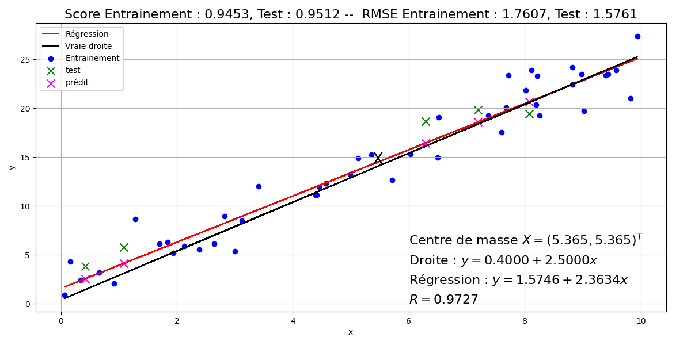
Régression multiple#
Ajustement linéaire d’un ensemble d’observations#
La régression multiple généralise la régression simple au cas de \(p\geq 2\) prédicteurs quantitatifs (ou variables explicatives). Ici on considère un échantillon de \(n\) individus, sur lesquels \(p+1\) variables sont mesurées : une variable à expliquer \(\mathbf Y = (y_1\cdots y_n)^T\in\mathbb{R}^n\) et \(p\) variables explicatives \(\mathbf X_i\) linéairement indépendantes, mais possiblement en relation.
On cherche
\(\mathbf Y^* = \beta_0 \mathbf{1} + \displaystyle\sum_{i=1}^p \beta_i\mathbf X_i\)
proche de \(\mathbf Y\) au sens des moindres carrés. \(\mathbf{1}\) est le vecteur de \(\mathbb{R}^n\) dont toutes les composantes valent 1.
En notant \(X = \begin{pmatrix}\mathbf{1} & \mathbf{X_1}\cdots \mathbf{X_p}\end{pmatrix}\in\mathcal{M}_{n,p+1}(\mathbb{R})\quad\text{et}\quad \boldsymbol{\beta}=(\beta_0\cdots \beta_p)^T \in\mathbb{R}^{p+1}\)
on a \(\mathbf Y^*=\mathbf X\boldsymbol \beta\).
\(\mathbf Y^*\) est par définition des moindres carrés la projection de \(\mathbf Y\) sur \(Im(\mathbf X)\), soit (Voir cours analyse numérique) :
\(\mathbf Y^* = \mathbf X(\mathbf X^T\mathbf X)^{-1}\mathbf X^T \mathbf Y\)
et donc
\(\boldsymbol\beta = (\mathbf X^T\mathbf X)^{-1}\mathbf X^T \mathbf Y\)
et on a donc les paramètres de la régression multiple.
Remark 17
Dans le cas où la métrique utilisée est définie par une matrice symétrique définie positive \(D\) de taille \(p\), alors
\(\boldsymbol\beta = (\mathbf X^T\mathbf D \mathbf X)^{-1}\mathbf X^T \mathbf D \mathbf Y\)
Modèle#
On suppose que les \(\mathbf X_i\) et \(\mathbf Y\) sont \(n\) réalisations indépendantes de \(p+1\) variables aléatoires \(\chi_i\) et \(\omega\). De même qu’en régression simple, la recherche de la meilleure approximation de \(\omega\) par une fonction des \(\chi_i\) amène à \(\mathbb{E}(\omega\mid \chi_1\cdots \chi_p)\) et l’hypothèse de régression multiple est
\(\mathbb{E}(\omega\mid \chi_0\cdots \chi_p) = b_0+\displaystyle\sum_{i=1}^p b_i\chi_i+\varepsilon\)
avec \(\mathbb{E}(\varepsilon)=0, \sigma_\varepsilon=\sigma^2\) et \(\varepsilon\) non corrélée aux \(\chi_i\).
On peut montrer que \(\boldsymbol\beta\) est un estimateur sans biais du vecteur aléatoire \((b_0\cdots b_p)\), et en est la meilleure approximation. De plus, la meilleure estimation sans biais de la variance \(\sigma^2\) est
\(\hat{\sigma}^2 = \frac{\|\mathbf Y -\mathbf Y^*\|^2}{n-p-1}\)
Modèle linéaire généralisé#
Position du problème#
Dans le cas le plus général, on ne cherche pas à expliquer une seule variable mais \(k\in\mathbb{N}\), obtenues par répétitions de l’expérience, les \(\mathbf X_j\) restant identiques : pour \(i\in[\![1,k]\!]\) \(\mathbf{Y}_i\in\mathbb{R}^n\) est la \(i^e\) observation.
Solution à partir des données#
Le modèle fait l’hypothèse que le centre de gravité \(\mathbf g\) des \(k\) observations se situe dans \(Im(\mathbf X)\), soit \(\mathbf g = \mathbf X \boldsymbol \beta\) La plupart du temps, on ne connaît cependant qu’une seule des \(k\) observations \(\mathbf Y\), et le problème revient à approximer le mieux possible \(\mathbf g\) en ne connaissant que \(\mathbf Y\).
Cette approximation \(\mathbf g^*\) s’exprime comme la projection orthogonale de \(\mathbf Y\) sur \(Im(\mathbf X)\), selon une métrique \(\mathbf M\), à choisir de sorte que \(\mathbf g^*\) soit la plus proche possible de \(\mathbf g\). Dit autrement, en répétant la projection avec \(\mathbf Y_1\cdots \mathbf Y_k\), les \(k\) approximations \(g^*_i=\mathbf X (\mathbf X^T\mathbf M\mathbf X)^{-1} \mathbf X^T \mathbf M \mathbf Y_i, i\in[\![1,k]\!]\) doivent être le plus concentrées possible autour de \(\mathbf g\).
Ceci revient donc à trouver \(\mathbf M\) de sorte à ce que l’inertie du nuage des \(\mathbf g_i^*\) soit minimale. On montre (théorème de Gauss-Markov généralisé) que \(\mathbf M=\mathbf V^{-1}\), où \(\mathbf V\) est la matrice de variance-covariance du nuage des \(\mathbf Y_i\). Ainsi, pour une seule observation, on en déduit
\(\begin{eqnarray*} \mathbf g^*&=&\mathbf X(\mathbf X^T\mathbf V^{-1}\mathbf X)^{-1}\mathbf X^T\mathbf V^{-1}\mathbf Y\\ \boldsymbol \beta&=&(\mathbf X^T\mathbf V^{-1}\mathbf X)^{-1}\mathbf X^T\mathbf V^{-1}\mathbf Y \end{eqnarray*}\)
Modèle#
En ayant une infinité d’observations, on approche le modèle probabiliste. On suppose que \(\mathbf Y\) est une réalisation d’un vecteur aléatoire d’espérance \(\mathbf X\mathbf b\) et de matrice de variance-covariance \(\boldsymbol\Sigma\). Le modèle s’écrit alors \(\mathbf Y=\mathbf X\mathbf b+\varepsilon\), avec \(\varepsilon\) centré de variance \(\boldsymbol\Sigma\), et le problème est donc d’estimer \(\mathbf b\). On montre que \(\mathbf b = (\mathbf X^T \boldsymbol\Sigma^{-1}\mathbf X)^{-1}\mathbf X^T\boldsymbol\Sigma^{-1}\mathbf Y\), appelé estimation des moindres carrés généralisés est, sous des hypothèses larges, l’estimation de variance minimale de \(\mathbf b\).
Modèles régularisés#
On peut montrer que l’estimateur des moindres carrés est de variance minimale parmi les estimateurs linéaires sans biais. Cependant, la variance aboutit dans certains cas à des erreurs de prédiction importantes. Dans ce cas, on cherche des estimateurs de variance plus petite quitte à avoir un (léger) biais. Pour ce faire, on peut supprimer l’effet de certaines variables explicatives ce qui revient à leur attribuer un poids nul. Par ailleurs, dans le cas où \(p\) est grand, l’interprétation des résultats obtenus est parfois complexe. Ainsi, on pourra préférer un modèle estimé avec moins de variables explicatives afin de privilégier l’interprétation plutôt que la précision.
Dans cette section, on s’intéresse à des méthodes permettant de produire des estimateurs dont les valeurs sont d’amplitudes réduites. On parle de modèles parcimonieux lorsque des variables ont des coefficients nuls.
Régression Ridge#
Dans l’approche moindres carrés linéaires classique, on cherche \(\mathbf Y^* = \beta_0 \mathbf{1} + \displaystyle\sum_{i=1}^p \beta_i\mathbf X_i\) proche de \(\mathbf Y\) au sens de la minimisation de \(\|\mathbf Y^*-\mathbf Y\|^2 \). On cherche donc \(\boldsymbol\beta_{mc}\in\mathbb{R}^{p+1}\) tel que :
\(\boldsymbol\beta_{mc} = arg\displaystyle\min_{\boldsymbol\beta\in\mathbb{R}^{p+1}}\left [\displaystyle\sum_{i=1}^n \left (y_i-(\beta_0+\displaystyle\sum_{j=1}^p \beta_j x_{ij})\right )^2\right ]\)
Dans l’approche Ridge regression (ou régression de Tikhonov), on pénalise l’amplitude des coefficients \(\beta_j\). Pour ce faire, on pose \(\boldsymbol\beta_{\setminus 0}\) le vecteur des \(p\) dernières composantes de \(\boldsymbol\beta\) et on cherche le vecteur \(\boldsymbol\beta_r\) tel que
\(\boldsymbol\beta_r = arg\displaystyle\min_{\boldsymbol\beta\in\mathbb{R}^{p+1}}\left [\displaystyle\sum_{i=1}^n \left (y_i-(\beta_0+\displaystyle\sum_{j=1}^p \beta_j x_{ij})\right )^2+\lambda \| \boldsymbol\beta_{\setminus 0}\|^2_2\right ]\)
Le réel positif \(\lambda\), pondérant \(\| \boldsymbol\beta_{\setminus 0}\|^2_2\) appelée fonction de pénalité, permet de réguler l’importance du second terme sur la minimisation. Un \(\lambda\) grand impose à la minimisation d’avoir une amplitude faible des coefficients \(\beta_j,j\in[\![1,p]\!]\), et une variance faible de l’estimateur de \(\boldsymbol\beta\).
Contrairement à la régression linéaire multiple classique où les variables ne sont pas nécessairement normalisées, ici il est nécessaire de réduire les variables explicatives. En pratique on les centre également, et dans ce cas :
la première composante de \(\boldsymbol\beta_r\) est prise égale à la moyenne empirique des \(y_i\) avant centrage
les \(p\) autres composantes de \(\boldsymbol\beta_r\) sont obtenues par minimisation :
\(\hat{\boldsymbol \beta}_r = arg\displaystyle\min_{\mathbf v\in\mathbb{R}^{p}} \left ((\mathbf Y-\mathbf X\mathbf v)^T(\mathbf Y-\mathbf X\mathbf v) + \lambda \mathbf v^T\mathbf v\right )\)
dont la solution analytique est \((\mathbf X^T\mathbf X + \lambda \mathbb{I})^{-1}\mathbf X^T\mathbf Y\).
Le choix de \(\lambda\) n’est pas évident. La solution la plus simple consiste à prendre plusieurs valeurs, à tester les solutions proposées par ces valeurs et à retenir le \(\lambda\) ayant obtenu le meilleur score (par exemple la précision sur un ensemble de test). De manière moins expérimentale, il existe des algorithmes (basés sur la décomposition en valeurs singulières) permettant de choisir une ‘’bonne’’ valeur de paramètre.
Régression Lasso#
La régression Lasso (Least Absolute Shrinkage and Selection Operator) est, dans son principe, très proche de la régression Ridge, la seule différence résidant dans la norme utilisée dans la fonction de pénalité : on cherche \(\boldsymbol\beta\) minimisant
\(\boldsymbol\beta_l = arg\displaystyle\min_{\boldsymbol\beta\in\mathbb{R}^{p+1}}\left [\displaystyle\sum_{i=1}^n \left (y_i-(\beta_0+\displaystyle\sum_{j=1}^p \beta_j x_{ij})\right )^2+\lambda \| \boldsymbol\beta_{\setminus 0}\|^2_1\right ]\)
Contrairement à la régression Ridge, il n’y a pas de solution analytique (la norme \(\ell_1\) rend la fonction non différentiable) et on doit donc recourir à des méthodes de résolution numérique. Lorsque \(\lambda\) est grand, la minimisation force la fonction de pénalité à être petite : étant donné que cette dernière est une somme de valeurs absolues, la minimisation impose à certains coefficients \(\beta_j,j\in[\![1,p]\!]\) d’être nuls. On parle alors de régression parcimonieuse (et la régression peut donc être vue comme une méthode de sélection de variables).
Quand \(p>n\), la méthode ne sélectionne que \(n\) variables. De plus, si plusieurs variables sont corrélées entre elles, Lasso ignore toutes sauf une. Et, pire, même si \(n>p\), et s’il y a de fortes corrélations entre les variables explicatives, on trouve empiriquement que Ridge donne de meilleurs résultats que Lasso.
Régression Elasticnet#
On suppose ici que \(\mathbf X\) est centré réduit, et \(\mathbf Y\) est centré (donc \(\beta_0=0\)). La régression Elasticnet est un mélange de Ridge et Lasso : on cherche \(\boldsymbol\beta_e\) tel que
\(\boldsymbol\beta_e = arg\displaystyle\min_{\boldsymbol\beta\in\mathbb{R}^{p}}\left [\displaystyle\sum_{i=1}^n \left (y_i-\displaystyle\sum_{j=1}^p \beta_j x_{ij}\right )^2+\lambda_1 \| \boldsymbol\beta\|^2_1 + \lambda_2 \| \boldsymbol\beta\|^2_2\right ]\)
En notant \(\lambda =\lambda_1+\lambda_2\) et \( \alpha = \lambda_1/\lambda\) on minimise alors
\(\displaystyle\sum_{i=1}^n \left (y_i-\displaystyle\sum_{j=1}^p \beta_j x_{ij}\right )^2+\lambda(\alpha \| \boldsymbol\beta\|^2_1 + (1-\alpha) \| \boldsymbol\beta\|^2_2)\)
On montre alors que la solution de la régression Elasticnet peut être obtenue à l’aide de la solution de la régression Lasso.
Property 7
Soit \(\mathbf X\in\mathcal{M}_{np}(\mathbb R)\) la matrice des variables explicatives, et \(\mathbf Y\in\mathbb{R}^n\) le vecteur des valeurs de la variable expliquée. Soient \(\lambda_1,\lambda_2\in\mathbb{R}^+\). On pose
\(\mathbf X^*\in\mathcal{M}_{(n+p)p}(\mathbb R) = \frac{1}{\sqrt{1+\lambda_2}}\begin{pmatrix}\mathbf X\\\sqrt{\lambda_2 }\mathbb{I}\end{pmatrix}\quad\text{et}\quad \mathbf Y^*=\begin{pmatrix}\mathbf Y\\0\end{pmatrix}\)
et on note \(\gamma=\lambda_1/(\lambda_1+\lambda_2)\).
Alors la fonction objectif de la régression Elasticnet s’écrit \(\|\mathbf Y^*-\mathbf X^*\boldsymbol\beta^*\|_2^2+\gamma\|\boldsymbol\beta^*\|_1\). Si \(\hat{\boldsymbol\beta}\) minimise cette fonction, alors l’estimateur naïf de la régression Elasticnet est
\(\boldsymbol\beta_e = \frac{1}{\sqrt{1+\lambda_2}}\hat{\boldsymbol\beta}\)
Puisque \(\mathbf X^*\) est de rang \(p\), la solution peut sélectionner \(p\) variables contrairement à la régression Lasso.
En pratique, cet estimateur naïf ne donne satisfaction que lorsqu’il est proche de \(\boldsymbol\beta_r\) ou de \(\boldsymbol\beta_l\). On retient généralement l’estimateur rééchelonné \((1+\lambda_2)\boldsymbol\beta_e = \sqrt{1+\lambda_2}\hat{\boldsymbol\beta}\) (Elasticnet peut être vu comme un Lasso où la matrice de variance-covariance est proche de la matrice Identité, et on montre que le facteur \(1+\lambda_2\) intervient alors).
La figure suivante compare les différentes méthodes de régression sur la fonction
\(f(x) = x-\frac35 x^2+\frac15x^3 + 18sin(x)\)
avec \(p=8\) et \(n=20\). Les \(n=20\) points échantillonnés sur la courbe \(y=f(x)\) sont utilisés pour faire la régression sur l’intervalle [-10,10].
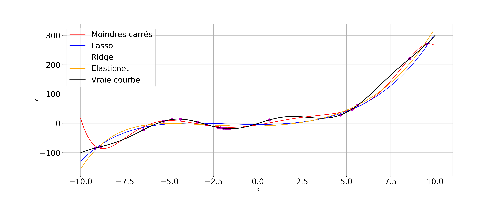
Régression logistique#
Dans les sections précédentes, nous n’avons pas abordé les cas où les prédicteurs exhibent des dépendances non linéaires ou lorsque la variable à prédire n’est pas quantitative.
La régression logistique est un modèle linéaire généralisé utilisé pour prédire une variable binaire, ou catégorielle, à partir de prédicteurs quantitatifs ou catégoriels.
Régression logistique binaire#
Dans un premier temps, la variable à prédire est binaire : elle ne prend donc que deux valeurs 0/1 (ou -1/1). Dans le chapitre suivant, nous étudierons des algorithmes permettant d’aborder ce problème sous un angle classification. Ici, nous nous intéressons à une modélisation probabiliste, permettant notamment de prendre en compte le bruit dans les données.
Modèle#
On recherche une distribution conditionnelle \(P(Y|X)\) de la variable à prédire sachant les prédicteurs. Si le problème est en 0/1, alors \(Y\) est une variable indicatrice et on a \(P(Y=1)=\mathbb{E}(Y)\) et \(P(Y=1|X=x)=\mathbb{E}(Y|X=x)\). La probabilité conditionnelle est donc l’espérance conditionnelle de l’indicatrice.
Supposons que \(P(Y=1|X=x)=p(x,\boldsymbol\theta)\) avec \(p\) fonction paramétrée par \(\boldsymbol\theta\). On suppose également que les observations sont indépendantes. La vraisemblance est alors donnée par
\(\displaystyle\prod_{i=1}^n P(Y=y_i|X=x_i) = \displaystyle\prod_{i=1}^n p(x_i,\boldsymbol\theta)^{y_i}(1-p(x_i,\boldsymbol\theta))^{1-y_i}\)
Remark 18
Pour \(n\) tirages d’une variable de Bernoulli dont la probabilité de succès est constante et vaut \(p\), la vraisemblance est \(\displaystyle\prod_{i=1}^n p^{y_i}(1-p)^{1-y_i}\). Cette vraisemblance est maximisée lorsque \(p=n^{-1}\displaystyle\sum_{i=1}^n y_i\).
En notant \(p_i=p(x_i,\boldsymbol\theta)\), maximiser la vraisemblance sans contrainte amène à la solution non informative \(p_i=1\) si \(y_i=1\) et 0 sinon. Si l’on essaye d’ajouter des contraintes (relations entre les \(p_i\)), alors l’estimation du maximum de vraisemblance devient difficile.
Ici le modèle \(p_i=p(x_i,\boldsymbol\theta)\) suppose que si \(p\) est continue, alors des valeurs proches de \(x_i\) amènent à des valeurs proches de \(p_i\). En supposant \(p\) connue comme fonction de \(\boldsymbol\theta\), la vraisemblance est une fonction de \(\boldsymbol\theta\) et on peut estimer ce paramètre en maximisant la vraisemblance.
Régression logistique#
On recherche un ‘’bon’’ modèle pour \(p\) :
On peut dans un premier temps supposer que \(p(\mathbf x)\) est une fonction linéaire de \(\mathbf x\). Les fonctions linéaires étant non bornées, elles ne peuvent modéliser des probabilités.
On peut alors supposer que \(log\ p(\mathbf x)\) est une fonction linéaire de \(\mathbf x\). Là aussi, la fonction logarithme est non bornée supérieurement, et ne peut modéliser une probabilité.
Partant de cette idée, on borne le logarithme en utilisant la transformation logistique (ou logit) \(log\frac{p(\mathbf x)}{1-p(\mathbf x)}\). Etant donné un événement ayant une probabilité \(p\) de réussir, le rapport \(p/(1-p)\) est appelé la côte de l’événement (rapport de la probabilité qu’il se produise sur celle qu’il ne se produise pas. Si vous avez \(p\)=3/4 de chances de réussir à votre examen de permis, cotre côte est \(p/(1-p)=\frac{3/4}{1/4}\)=3 contre un). On peut alors supposer que cette fonction de \(p\) est linéaire en \(\mathbf x\).
Le modèle de régression logistique s’écrit alors formellement
\(logit(p(\mathbf x)) = log \frac{p(\mathbf x)}{1-p(\mathbf x)} = \beta_0\mathbf 1 + \boldsymbol\beta\mathbf x\)
En résolvant par rapport à \(p\) on trouve alors
\(p(\mathbf x,\boldsymbol\theta) = \frac{e^{\beta_0\mathbf 1 + \boldsymbol\beta\mathbf x}}{1+e^{\beta_0\mathbf 1 + \boldsymbol\beta\mathbf x}}=\frac{1}{1+e^{-(\beta_0\mathbf 1 + \boldsymbol\beta\mathbf x)}}\quad\text{avec }\boldsymbol\theta=(\beta_0,\boldsymbol\beta)^T\)
Pour minimiser les erreurs de prédiction, on doit prédire \(Y=1\) si \(p\geq 0.5\), soit \(\beta_0\mathbf 1 + \boldsymbol\beta\mathbf x\geq 0\) et \(Y=0\) sinon. La régression logistique est donc un classifieur linéaire, dont la frontière de décision est justement l’hyperplan \(\beta_0\mathbf 1 + \boldsymbol\beta\mathbf x= 0\). On peut montrer que la distance de \(\mathbf x\) à cet hyperplan est \(\beta_0/\|\boldsymbol\beta\| + \mathbf x^T\boldsymbol\beta/\|\boldsymbol\beta\|\). Les probabilités d’appartenance de \(\mathbf x\) aux classes décroissent donc d’autant plus vite que \(\|\boldsymbol\beta\|\) est grand.
Dans la figure suivante, la probabilité d’appartenance à la classe 1 (points rouges) est donnée en fausses couleurs.
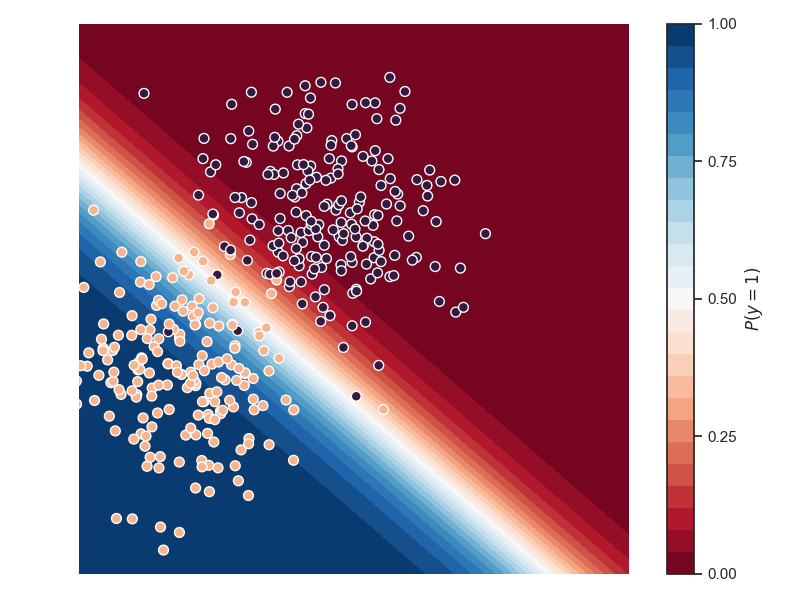
Régression logistique à plusieurs classes#
Dans ce cas, \(Y\) peut prendre \(k\) valeurs. Le modèle reste le même, chaque classe \(c\in[\![0,k-1]\!]\) ayant son jeu de paramètres \(\boldsymbol\theta_c=(\beta^c_0,\boldsymbol\beta^c)^T\). Les probabilités conditionnelles prédites sont alors
\((\forall c\in[\![0,k-1]\!])\;\;P(Y=c|X=\mathbf x) = \frac{e^{\beta^c_0\mathbf 1 + \boldsymbol\beta^c\mathbf x}}{1+e^{\beta^c_0\mathbf 1 + \boldsymbol\beta^c\mathbf x}}\)
Interprétation#
Si \(\mathbf x=\mathbf 0\), alors \(p(\mathbf x)=\frac{1}{1+e^{-\beta_0}}\). L’ordonnée à l’origine fixe donc le taux d’événements “de base”.
Supposons \(\boldsymbol\beta\in\mathbb{R}\) (l’interprétation sera la même dans le cas général). Considérons l’effet sur la probabilité d’un évènement du changement de \(x\in\mathbb{R}\) d’une unité, passant de \(x_0\) à \(x_0+1\). Alors :
\(logit(p(x_0+1))-logit(p(x_0)) = \beta_0+\beta(x_0+1)-(\beta_0+\beta(x_0)) = \beta\) et en utilisant la définition de la fonction logit :
\(\begin{eqnarray*} log \frac{p( x_0+1)}{1-p(x_0+1)}-log \frac{p( x_0)}{1-p(x_0)} &=& \beta\\ log \left [\frac{\frac{p( x_0+1)}{1-p(x_0+1)}}{\frac{p( x_0)}{1-p(x_0)}} \right ]&=& \beta\\ \end{eqnarray*}\)
En notant OR (Odds Ratio, ou rapport de côte) le terme en argument du log, et en prenant l’exponentielle, on trouve \(OR=e^\beta\). Le coefficient \(\beta\) est donc tel que \(e^\beta\) est le rapport de côte pour un changement unitaire de l’entrée \(x\). Si \(x\) est incrémenté de deux unités, alors le rapport de côte est de \(e^{2\beta}=(e^\beta)^2\), que l’on généralise facilement au cas d’un changement de \(n\) unités à OR=\((e^\beta)^n\).
Dans le cas où \(\boldsymbol\beta\) est un vecteur, sa ième composante est une estimation du changement de la probabilité d’un évènement correspondant à une augmentation d’une unité de la ième composante de \(\mathbf x\), les autres composantes étant constantes.
Estimation des coefficients de la régression logistique#
D’après le modèle probabiliste, la distribution associée à la régression logistique est la loi binomiale. Pour \(n\) échantillons \((x_i,y_i),i\in[\![1,n]\!]\), la vraisemblance s’écrit
\(\displaystyle\prod_{i=1}^n p(x_i,\boldsymbol\theta)^{y_i}(1-p(x_i,\boldsymbol\theta))^{1-y_i}\)
Pour estimer les paramètres \(\beta_0\) et \(\boldsymbol\beta\) à partir des données, on maximise cette vraisemblance. On prend son logarithme, on calcule son gradient et on en déduit un système d’équations à résoudre. Cette approche amène à des calculs complexes, la formulation analytique n’étant pas simple, et une approximation numérique est en pratique mise en oeuvre pour trouver l’optimal.
Analyse des résultats d’une régression#
Etude des résidus#
L’étude des résidus \( y_i- y^*_i\) permet de repérer les observations aberrantes ou au contraire qui jouent un rôle fondamental dans la détermination de la régression. Elle permet également de vérifier que le modèle linéaire est justifié.
Comme \(\mathbf Y = \mathbf Y -\mathbf X\boldsymbol \beta +\mathbf X\boldsymbol \beta\) , où \(\mathbf Y-\mathbf X\boldsymbol \beta \) est orthogonal à \(\mathbf X\boldsymbol \beta\), la matrice de variance des résidus s’écrit
\(\begin{eqnarray*} \mathbb{V}(\mathbf Y) &=& \mathbb{V}(\mathbf Y-\mathbf X\boldsymbol \beta)+\mathbb{V}(\mathbf X\boldsymbol \beta)\\ \sigma^2 \mathbf{I} &=&\mathbb{V}(\mathbf Y-\mathbf X\boldsymbol \beta)+ \sigma^2 \mathbf X(\mathbf X^T\mathbf X)^{-1}\mathbf X^T\\ \text {soit }\mathbb{V}(\mathbf Y-\mathbf X\boldsymbol \beta)&=&\sigma^2(\mathbf{I}-\mathbf X(\mathbf X^T\mathbf X)^{-1}\mathbf X^T) \end{eqnarray*} \)
et les résidus sont donc en général corrélés entre eux.
Remark 19
\(\mathbf{I}-\mathbf X(\mathbf X^T\mathbf X)^{-1}\mathbf X^T\) est la projection orthogonale sur \(Im(\mathbf X)^\perp\)
Si \(p_i\) est le \(i^e\) terme diagonal du projecteur \(\mathbf X(\mathbf X^T\mathbf X)^{-1}\mathbf X^T\), alors
\(\mathbb{V}( y_i- y^*_i) = (1-p_i)\sigma^2\)
d’où l’estimation de la variance du résidu \(\hat{\mathbb{V}}(y_i-y^*_i) = (1-p_i)\hat{\sigma}^2\).
Si le modèle linéaire est justifié, alors la distribution des résidus suit approximativement une loi normale. Un test statistique (par exemple le test de Jarque-Berra) viendra confirmer ou infirmer l’hypothèse selon laquelle la distribution peut être considérée comme telle.
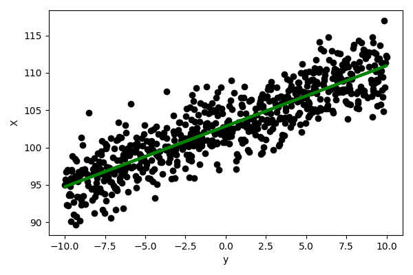 |
|
|---|---|
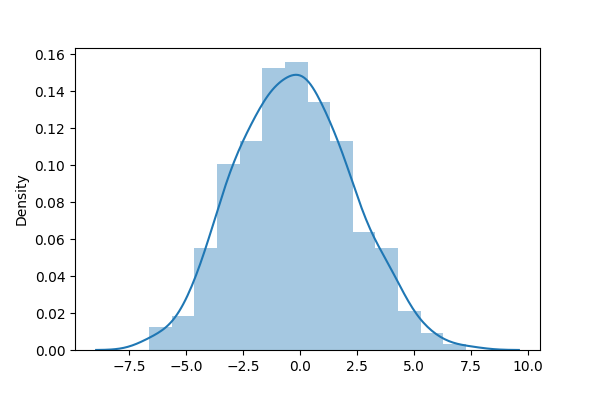 |
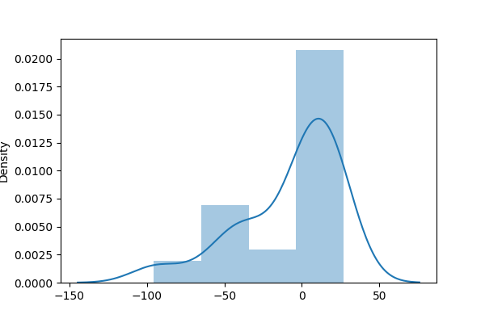 |

Definition 39 (Résidu studentisé)
On appelle résidu studentisé la quantité \(\frac{y_i-y^*_i}{\hat{\sigma}\sqrt{1-hp}}\)
Lorsque \(n\) est grand, ces résidus doivent être compris dans l’intervalle [-2,2].
Un fort résidu peut indiquer une valeur aberrante, mais la réciproque n’est pas vraie. Il est donc nécessaire d’étudier l’influence de chaque observation sur les résultats.
Influence des observations#
Pour étudier l’influence des observations sur la prédiction, deux approches sont possibles (et complémentaires) :
étudier l’influence d’une observation sur sa propre prédiction. On calcule le résidu prédit \(y_i-y_{\bar{i}}^*\), où \(y_{\bar{i}}^*\) est la prévision obtenue avec les \(n-1\) autres observations que \(y_i\). Il est facile de montrer que ce résidu vaut \(\frac{y_i-y_i^*}{1-p_i}\)
Remark 20
Il convient de rester prudent lorsque \(p_i\) est grand, et la quantité \(\displaystyle\sum_{i=1}^n \frac{(y_i-y_i^*)^2}{(1-p_i)^2}\) est une mesure du pouvoir prédictif du modèle.
étudier l’influence d’une observation sur les estimations des paramètres de la régression \(\beta_i\). On peut par exemple calculer une distance, dite de Cook, entre \(\boldsymbol \beta\) et \(\boldsymbol \beta_{\bar{i}}\) :
où \(\mathbf Y_{\bar{i}}^*=\mathbf X\boldsymbol\beta_{\bar{i}}\). Si \(d(\boldsymbol \beta,\boldsymbol\beta_{\bar{i}})>1\), alors en général l’observation \(i\) a une influence anormale.
Stabilité des coefficients de régression#
La source principale d’instabilité dans l’estimation des paramètres de régression réside dans le fait que les variables explicatives sont très corrélées entre elles. Comme \(\mathbb{V}(\boldsymbol \beta)=\sigma^2(\mathbf X^T\mathbf X)^{-1}\) alors si les \(\mathbf X_i\) sont corrélés, la matrice \(\mathbf X^T\mathbf X\) est mal conditionnée. Dans ce cas, les paramètres sont estimés avec imprécision et les prédictions sont entâchées d’erreur. Il est donc essentiel de mesurer les colinéarités entre prédicteurs. Par simplicité (sans que cela nuise à la généralité), on suppose ici que les variables sont centrées et réduites : \((\mathbf X^T\mathbf X)\) est donc une matrice de taille \(p\) (le fait de centrer les données supprime la constante) et \(\boldsymbol\beta\in\mathbb{R}^p\). Ainsi \((\mathbf X^T\mathbf X)=n\mathbf R\) où \(\mathbf R\) est la matrice de corrélation entre les prédicteurs.
Deux stratégies sont classiquement proposées :
Facteur d’inflation de la variance : on a \(\mathbb{V}(\boldsymbol \beta) = \sigma^2\frac{\mathbf{R}^{-1}}{n}\) et \(\sigma^2_{\beta_j} = \frac{\sigma^2}{n}(\mathbf{R}^{-1})_{jj}\). Or le \(j^e\) terme de \(\mathbf{R}^{-1}\) est \(\frac{1}{1-R^2_j}\) où \(R^2_j\) est le carré du coefficient de corrélation multiple de \(\mathbf X_j\) et des \(p-1\) autres variables explicatives. Ce terme est le facteur d’inflation de la variance. La moyenne de ces \(p\) termes est parfois utilisée comme indice global de colinéarité multiple.
Remark 21
Si les variables explicatives sont orthogonales, la régression multiple revient à \(p\) régressions simples.
La factorisation spectrale de \(\mathbf R\) s’écrit \(\mathbf R = \mathbf U\boldsymbol\Lambda \mathbf U^T\). Donc \(\mathbf{R}^{-1}=\mathbf U\Lambda^{-1}\mathbf U^T\) et la variance de \(\beta_j\) s’écrit
\(\mathbb{V}(\beta_j) = \frac{\sigma^2}{n}\displaystyle\sum_{i=1}^p \frac{u_{ji}^2}{\lambda_i}\)
et dépend donc des inverses des valeurs propres de \(\mathbf R\). Dans le cas où les prédicteurs sont fortement corrélés, les dernières valeurs propres sont proches de 0 ce qui entraîne l’instabilité des paramètres de régression.
Pour améliorer la stabilité des paramètres de régression, on peut alors :
rejeter certains termes de la somme précédente, par exemple en remplaçant les \(p\) prédicteurs par leurs \(p\) composantes principales (Ceci revient à effectuer \(p\) régressions simples).
régulariser la régression en utilisant des approche de type Ridge regression.
Sélection des variables#
Plutôt que d’expliquer \(\mathbf Y\) par l’ensemble des prédicteurs, on peut chercher un sous-ensemble de ces \(p\) variables permettant d’obtenir quasiment le même résultat (régression). Nous avons déjà abordé la sélection de variables dans un chapitre précédent.
Exemple#
Données#
On s’intéresse aux données suivantes et on cherche s’il existe une relation entre la production \(Y\) et les deux variables prédictives \(X_1\) et \(X_2\).
Usine |
Travail (h) \(X_1\) |
Capital (machines/h) \(X_2\) |
Production (\(10^2\) T) |
|---|---|---|---|
1 |
1100 |
300 |
60 |
2 |
1200 |
400 |
120 |
3 |
1430 |
420 |
190 |
4 |
1500 |
400 |
250 |
5 |
1520 |
510 |
300 |
6 |
1620 |
590 |
360 |
7 |
1800 |
600 |
380 |
8 |
1820 |
630 |
430 |
9 |
1800 |
610 |
440 |
Modèle#
On fait l’hypothèse d’un modèle linéaire
\(y = \beta_0+\beta_1 X_1 + \beta_2 X_2+\varepsilon = \mathbf X \boldsymbol\beta+\boldsymbol\varepsilon\)
On a alors \(\boldsymbol\beta = (\mathbf X^T\mathbf X)^{-1}\mathbf X^T \mathbf Y = \begin{pmatrix} -437.714\\0.336\\0.410\end{pmatrix}\) et l’équation du modèle linéaire (hyperplan) aux moindres carrés est
\(y = -437.714+0.336 X_1+0.41X_2\)
De plus \(\hat{\sigma}^2 = \frac{\|\mathbf Y -\mathbf Y^*\|^2}{n-p-1} = \frac{3194}{6} = 639\)
de sorte que la covariance des paramètres de régression vaut
\(\hat{\sigma}^2 (\mathbf X^T\mathbf X)^{-1} = \begin{pmatrix} 3355.56 & -4.152 & 6.184\\-4.152 & 0.008 & -0.016 \\ 6.184 & -0.016 & 0.038\end{pmatrix}\)
Dans la figure suivante, les points au-dessus du plan regresseur sont en bleu, les autres en vert.
|
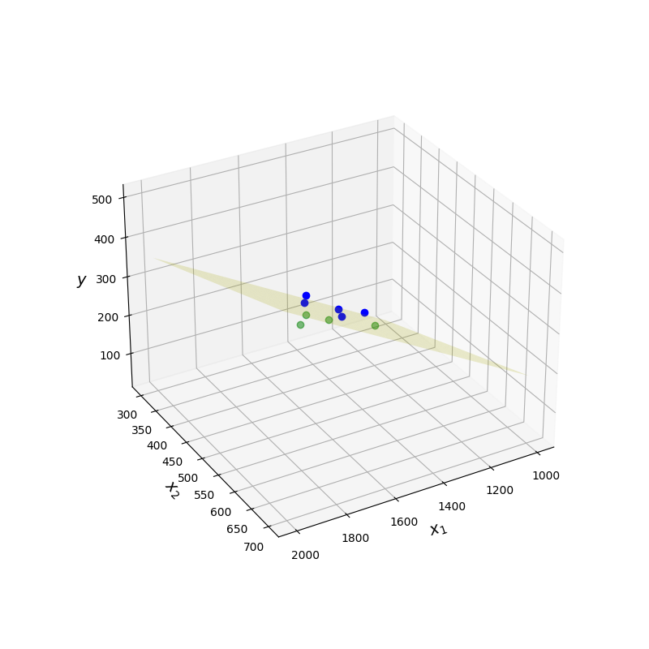 |
|---|---|
Un point de vue… |
Un autre |

Quelques méthodes de classification
Introduction
La classification automatique a pour but d'obtenir une représentation simplifiée des données initiales. Elle consiste à organiser un ensemble de données en classes homogènes ou classes naturelles.Une définition formelle de la classification, qui puisse servir de base à un processus automatisé, amène à se poser les questions suivantes :
Comment les objets à classer sont-ils définis ?
Comment définir la notion de ressemblance entre objets ?
Qu’est-ce qu’une classe ?
Comment sont structurées les classes ?
Comment juger une classification par rapport à une autre ?
Pour effectuer cette classification, deux démarches sont généralement utilisées :
on regroupe en classes les objets qui partagent certaines caractéristiques.
on regroupe en classes les objets qui possèdent des caractéristiques proches. C’est cette approche qui est étudiée ici
Structures de classification#
Partition#
Definition 40 (Partition)
\(\Omega\) étant un ensemble fini, un ensemble \(P =(P_1 ,P_2 ,\cdots P_g )\) de parties non vides de \(\Omega\) est une partition si :
\((\forall k\neq l) P_k \cap P_l=\emptyset\)
\(\displaystyle\cup_{i=1}^gP_i=\Omega\)
Dans un ensemble \(\Omega\) partitionné en \(g\) classes, chaque élément de l’ensemble appartient à une classe et une seule. Une manière pratique de décrire cette partition \(P\) consiste à lui associer la matrice de classification \({\bf C}=(c_{ij}), i\in [\![1,n]\!], j\in [\![1,g]\!]\), avec \(c_{ij}=1\) si l’individu \(i\) appartient à \(P_j\), et \(c_{ij}=0\) sinon. Dans le cas où l’on accepte qu’un individu appartienne à plusieurs classes (avec des degrés d’appartenance), on autorise \(c_{ij}\) à couvrir l’intervalle [0,1] et on parle alors de classification floue.
Hiérarchie indicée#
Definition 41 (Hiérarchie)
\(\Omega\) étant un ensemble fini, un ensemble \(H\) de parties non vides de \(\Omega\) est une hiérarchie sur \(\Omega\) si :
\(\Omega \in H\)
\((\forall x\in \Omega) \{x\}\in H\)
\((\forall h,h'\in H) h\cap h'=\emptyset\) ou \(h\subset h'\) ou \(h'\subset h\)
Une hiérarchie est souvent représentée par l’intermédiaire d’un indice, fonction \(i\) de \(H\) dans \(\mathbb{R}^+\), strictement croissante vis à vis de l’inclusion et de noyau l’ensemble des singletons de \(\Omega\).
Partition et hiérarchie#
Si \(P =(P_1 \cdots,P_g)\) est une partition de \(\Omega\), l’ensemble \(H\) formé des classes \(P_k\) de \(P\), des singletons de \(\Omega\) et de l’ensemble \(\Omega\) lui-même forme une hiérarchie. Remarquons qu’inversement, il est possible d’associer à chaque niveau d’une hiérarchie indicée une partition. Une hiérarchie indicée correspond donc à un ensemble de partitions emboîtées.
Objectifs de la classification#
Difficultés de caractériser les objectifs#
L’objectif de la classification automatique est l’organisation en classes homogènes des éléments d’un ensemble \(\Omega\). Pour définir cette notion de classes homogènes, on utilise le plus souvent une mesure de similarité (ou de dissimilarité) sur \(\Omega\). Par exemple, on peut imposer à un couple quelconque d’individus d’une même classe d’être plus “proches” que n’importe quel couple formé par un individu de la classe et un individu d’une autre classe. En pratique, cet objectif est inutilisable, et plusieurs démarches sont alors utilisées pour remplacer cet objectif trop difficile à atteindre.
Démarche numérique#
Partition#
On remplace cette condition trop exigeante par une fonction numérique (critère) qui mesure la qualité d’homogénéité d’une partition. Le problème peut paraître alors très simple. En effet, par exemple, dans le cas de la recherche d’une partition, il suffit de chercher parmi l’ensemble fini de toutes les partitions celle qui optimise le critère numérique. Malheureusement, le nombre de ces partitions étant très grand, leur énumération est impossible dans un temps raisonnable. Le nombre de partitions en \(g\) classes d’un ensemble à \(n\) éléments, que l’on note \(S_n^g\) est le nombre de Stirling de deuxième espèce. En posant \(S_0^0=1\) et pour tout \(n>0\), \(S_n^0=S_0^n=0\), il peut être calculé par récurrence grâce à la relation \(S_n^g=S_{n-1}^{g-1}+gS_{n-1}^g\). On peut montrer que
et donc \(S_n^g\sim \frac{g^n}{g!}\) lorsque \(n\rightarrow\infty\). En pratique, sur un ordinateur calculant \(10^6\) partitions par seconde, il faut 126 000 ans pour calculer l’ensemble des partitions d’un ensemble à \(n=25\) éléments.
On utilise alors des heuristiques qui donnent, non pas la meilleure solution, mais une “bonne solution”, proche de la solution optimale. On parle alors d’optimisation locale. Lorsqu’il existe une structure d’ordre sur l’ensemble \(\Omega\) et que celle-ci doit être respectée par la partition, il existe un algorithme de programmation dynamique (algorithme de Fisher), qui fournit la solution optimale.
Hiérarchie#
Dans le cas d’une hiérarchie, on cherche à obtenir des classes d’autant plus homogènes qu’elles sont situées dans le bas de la hiérarchie. La définition d’un critère est moins facile. Nous verrons qu’il est possible de le faire en utilisant la notion d’ultramétrique (ultramétrique optimale).
Démarche algorithmique#
Il s’agit cette fois de définir directement un algorithme qui construit des classes homogènes en tenant compte de la mesure de similarité. Il est relativement facile de proposer de tels algorithmes, le problème est de pouvoir vérifier que les résultats fournis sont intéressants et répondent au problème posé. En réalité, cette démarche rejoint assez souvent la précédente.
Mesure de dissimilarité et distance#
Les algorithmes de classification dépendent d’une métrique qui définit implicitement la forme des classes qui seront calculées. Si la distance euclidienne suppose une isotropie dans les axes (et donc une représentation sphérique des classes), d’autres distances ou indices de dissimilarité peuvent être utilisés.
Indice de dissimilarité#
On se place dans \(\mathbb R^d\), et on considère \(n\) individus à classer \({\bf x_1}\ldots {\bf x_n}\).
Definition 42 (Dissimilarité - ultramétrique)
Une mesure de dissimilarité \(\delta\) est une fonction de
\( \delta: \begin{array}{ccc} \mathbb{R}^d\times\mathbb{R}^d &\rightarrow &\mathbb{R}^+\\ (\mathbf x_i,\mathbf x_j)&\mapsto & \delta_{ij} = \delta(\mathbf x_i,\mathbf x_j) \end{array} \)
vérifiant :
\((\forall i,j\in[\![1, n]\!])\ \delta_{ij}=\delta_{ji}\)
\((\forall i\in[\![1, n]\!])\ \delta_{ii}= 0\)
Si l’inégalité triangulaire \(\delta_{ij}\leq \delta_{ik}+\delta_{kj}\) est de plus vérifiée pour tout \(i,j,k\), alors \(\delta\) est une distance.
Si enfin l’inégalité ultramétrique \(\delta_{ij}\leq max(\delta_{ik}+\delta_{jk})\) est vérifiée pour tout \(i,j,k\), \(\delta\) est une ultramétrique.
A partir des mesures de dissimilarité, on déduit des mesures de similarité \(s_{ij}\) le passage de l’une à l’autre se faisant par exemple par \(\delta_{ij} = s_{max}-s_{ij}\).
Cas de variables qualitatives#
On suppose que les \(d\) composantes des \({\bf x_i}\) sont qualitatives, et on se limite ici au cas de variables bimodales. Étant donnés \({\bf x_i}=\begin{pmatrix} x_i^1\ldots x_i^d\end{pmatrix}\) et \({\bf x_j}\), on note :
\(a_{ij}\) le nombre de co-occurences entre les individus \(i\) et \(j\)
\(b_{ij}\) le nombre de co-absences entre les individus \(i\) et \(j\)
\(c_{ij}\) le nombre d’attributs présents chez \(i\) et absents chez \(j\)
\(d_{ij}\) le nombre d’attributs absents chez \(i\) et présents chez \(j\)
les mesures suivantes sont des exemples de dissimilarité :
\(\delta_{ij} = \sqrt{b_{ij}+c_{ij}}\) [distance “euclidienne” binaire]
\(\delta_{ij} = \frac{(b_{ij}-c_{ij})^2}{(a_{ij}+b_{ij}+c_{ij}+d_{ij})^2}\) [différence binaire de taille]
\(\delta_{ij} = \frac{(b_{ij}c_{ij})}{(a_{ij}+b_{ij}+c_{ij}+d_{ij})^2}\) [différence binaire de motif]
\(\delta_{ij} = \frac{(a_{ij}+b_{ij}+c_{ij}+d_{ij})(b_{ij}+c_{ij})-(b_{ij}-c_{ij})^2}{(a_{ij}+b_{ij}+c_{ij}+d_{ij})^2}\) [différence binaire de forme]
\(\delta_{ij} = \frac{(b_{ij}+c_{ij})}{4(a_{ij}+b_{ij}+c_{ij}+d_{ij})}\) [dissimilarité binaire de variance]
\(\delta_{ij} = \frac{(b_{ij}+c_{ij})}{2a_{ij}+b_{ij}+c_{ij}}\) [dissimilarité binaire de Lance et Williams]
Cas de variables quantitatives#
Dans le cas de variables quantitatives, les normes \(L_p\) :
\(\|{\bf x_i}\|_p=\left (\displaystyle\sum_{j=1}^d|x_i^j|^p\right ) ^\frac{1}{p}\)
sont classiquement utilisées, et par exemple
\(p=1\) : \(\|{\bf x_i}-{\bf x_j}\|_1=\displaystyle\sum_{k=1}^d|x_i^k-x_j^k|\) est la norme \(L_1\) (ou city block).
\(p=2\) : \(\|{\bf x_i}-{\bf x_j}\|_2=\sqrt{\displaystyle\sum_{k=1}^d(x_i^k-x_j^k)^2}\) est la norme \(L_2\) (ou norme euclidienne).
“\(p=\infty\)” : \(\|{\bf x_i}-{\bf x_j}\|_\infty = \displaystyle\max_{1\leq k\leq d}\{|x_i^k-x_j^k|\}\) est la norme du max (ou norme de Tchebychev)
Si les variables ne sont pas normalisées, on peut utiliser la distance de Mahalanobis
\(\delta_{ij} = \displaystyle\sum_{k=1}^d\displaystyle\sum_{l=1}^dw_{kl}(x_i^k-x_j^k)(x_i^l-x_j^l)\)
où la matrice des \(w_{kl}\) est l’inverse de la matrice de covariance empirique. Cette distance élimine également les corrélations entre variables.
Enfin, on peut utiliser une métrique issue du coefficient de corrélation, dite distance de Pearson : \(\delta_{ij} =\sqrt{1-r^2_{ij}}\), avec
\(r^2_{ij} = \frac{\left (\displaystyle\sum_{k=1}^d (x_i^k-\bar{x_i})(x_j^k-\bar{x_j})\right )^2}{\displaystyle\sum_{k=1}^d(x_i^k-\bar{x_i})^2\displaystyle\sum_{k=1}^d(x_j^k-\bar{x_j})^2}\)
Variables de comptage#
Dans le cas particulier de variables de comptage (\(x_i^k\) effectif de la classe \(k\) pour l’individu \(i\)), une mesure naturelle de dissimilarité entre \({\bf x_i}\) et \({\bf x_j}\) est le \(\chi^2\) du tableau de contingence 2\(\times d\) associé.
Quelle mesure choisir ?#
Une réflexion sur le type de dissimilarité à choisir est nécessaire. Il est en particulier intéressant de répondre aux questions suivantes:
de quelles variables initiales (qualitatives et/ou quantitatives) doit dépendre la dissimilarité?
est-il souhaitable (et possible) d’obtenir des variables pertinentes supplémentaires? Si oui par mesure ? par analyse linéaire (ACP,…) ou non linéaire (manifold learning) ?
quelles doivent être les importances relatives des diverses variables retenues dans la constitution de la dissimilarité ?
Classification ascendante hiérarchique#
L’objectif est de construire une hiérarchie indicée d’un ensemble \(\Omega\) sur lequel on connaît une mesure de dissimilarité \(\delta\) telle que les points les plus proches soient regroupés dans les classes de plus petit indice. La hiérarchie est alors construite en appliquant itérativement ce principe, et l’arbre obtenu sur l’ensemble des itérations est appelé un dendrogramme.
Il existe essentiellement deux approches :
la classification descendante : on divise \(\Omega\) en classes, puis on recommence sur chacune de ces classes itérativement jusqu’à ce que les classes soient réduites à des singletons.
la classification ascendante : cette fois on part de la partition de \(\Omega\) où chaque classe est un singleton. On procède alors par fusions successives des classes jusqu’à obtenir une seule classe, c’est-à -dire l’ensemble \(\Omega\) lui-même. Nous insistons sur ce type de classification dans la suite.
Algorithme#
Construction de la hiérarchie#
\(\Omega\) étant l’ensemble à classifier et \(\delta\) une mesure de dissimilarité sur cet ensemble, on définit à partir de \(\delta\) une distance \(D\) entre les parties de \(\Omega\). Cette distance est en réalité une mesure de dissimilarité qui ne vérifie pas nécessairement toutes les propriétés d’une distance sur l’ensemble des parties de \(\Omega\). En général, \(D\) est appelé critère d’agrégation. L’algorithme est alors le suivant :
Algorithm 4 (Algorithme de clustering hiérarchique ascendant)
Entrée : Les éléments de \(\Omega\)
Sortie : Une hiérarchie
Initialisation : partition des singletons
Calcul des distances entre classes.
Tant que le nombre de classes est \(>\)1
Regroupement des 2 classes les plus proches au sens de \(D\)
Calcul des distances entre la nouvelle classe et les anciennes classes non regroupées.
Il est facile de montrer que l’ensemble des classes définies au cours de cet algorithme forme une hiérarchie.
Construction de l’indice#
Après avoir défini une hiérarchie, il est nécessaire de lui associer un indice. Pour les classes du bas de la hiérarchie, c’est-à-dire les singletons, cet indice est nécessairement la valeur 0. Pour les autres classes, cet indice est généralement défini en associant à chacune des classes construites au cours de l’algorithme la distance \(D\) qui séparait les deux classes fusionnées pour former cette nouvelle classe. Pour que cette définition conduise bien à un indice, il est nécessaire que les indices obtenus soient strictement croissants avec le niveau de la hiérarchie. Plusieurs difficultés peuvent alors apparaître :
pour certains critères d’agrégation, l’indice ainsi défini n’est pas nécessairement croissant. On parle alors d’inversion. Par exemple, si les données sont formées par trois points du plan situés au sommet d’un triangle équilatéral de côté 1 et si on prend comme distance \(D\) entre classes la distance entre les centres de gravité, on obtient une inversion.
lorsqu’il y a égalité de l’indice pour plusieurs niveaux emboîtés, il suffit de filtrer la hiérarchie, c’est-à-dire conserver une seule classe qui regroupe toutes les classes emboîtées ayant le même indice.
Critères d’agrégation#
Il existe de nombreux critères d’agrégation, mais les plus utilisés sont les suivants :
critère du lien commun : \(D_{min}(A,B)=\displaystyle\min_{i\in A,j\in B}\delta_{ij}\)
critère du lien maximum: \(D_{max}(A,B)=\displaystyle\max_{i\in A,j\in B}\delta_{ij}\)
critère du lien moyen : \(D_{moy}(A,B)=\frac{\displaystyle\sum_{i\in A}\displaystyle\sum_{j\in B}\delta_{ij}}{|A||B|}\)

Formule de récurrence de Lance et Williams#
Pour les trois critères d’agrégation précédents, il existe des relations de simplification du calcul des distances entre classes essentielles pour la mise en place pratique de l’algorithme de classification ascendante :
\(D_{min}(A,B\cup C)=min(D_{min}(A,B),D_{min}(A,C))\)
\(D_{max}(A,B\cup C)=max(D_{max}(A,B),D_{min}(A,C))\)
\(D_{moy}(A,B\cup C)=\frac{|B|D_{moy}(A,B)+|C|D_{moy}(A,C)}{|B|+|C|}\)
Critère de Ward#
Lorsque l’ensemble \(\Omega\) à classifier est mesuré par \(d\) variables quantitatives, il est possible de lui associer un nuage de points pondérés dans \(\mathbb{R}^d\) muni de la distance euclidienne. Généralement, les pondérations seront toutes égales à 1. Le critère d’agrégation le plus utilisé dans cette situation est alors le critère d’inertie de Ward :
\(D(A,B)=\frac{p_Ap_B}{p_A+p_B}\|({\bf g}(A),{\bf g}(B))\|_2^2\)
où \(p_E\) représente la somme des pondérations des éléments d’une classe \(E\) et \({\bf g}(E)\) est le centre de gravité d’une classe \(E\).
Propriétés d’optimalité#
La notion de hiérarchie indicée est équivalente à la notion d’ultramétrique. La classification hiérarchique ascendante transforme donc la mesure de dissimilarité \(d\) initiale en une mesure de dissimilarité \(\delta\) qui possède la propriété d’être une ultramétrique.
Le problème de la classification hiérarchique peut donc également se poser en ces termes : trouver l’ultramétrique \(\delta^*\) la plus proche de \(\delta\). Il reste à munir l’espace des mesures de dissimilarité sur \(\Omega\) d’une distance. On pourra utiliser, par exemple :
\(\Delta(\delta,\delta^**)=\displaystyle\sum_{i,j\in \Omega}(\delta_{ij}-\delta^*_{ij})^2\)
\(\Delta(\delta,\delta^**)=\displaystyle\sum_{i,j\in \Omega}|\delta_{ij}-\delta^*_{ij}|\)
Critère d’arrêt et partition#
L’ensemble des itérations peut être visualisé sous la forme d’un arbre, appelé dendrogramme. La figure suivante présente un exemple de dendrogramme en clustering hiérarchique descendant sur \(X = \{a, b, c, d, e\}\). La distance \(D\) n’est pas reportée

Le critère d’arrêt permet de déterminer la partition de \(X\) la plus appropriée. Ici encore, plusieurs choix sont possibles :
en fixant a priori un nombre de classes
en fixant une borne supérieure \(r\) pour \(D\), et en stoppant les itérations dès que les distances calculées par les liens dépassent \(r\). A noter que \(r\) peut être également calculé par \(r=\alpha max\{\delta(x,y),x,y\in X\}\) (critère dit “scale distance upper bound”).
en coupant le dendrogramme au saut de distance \(D\) maximal.

Utilisation des méthodes#
La première difficulté est le choix de la mesure de dissimilarité sur \(\Omega\) et du critère d’agrégation. Généralement, lorsque l’on dispose de variables quantitatives, le critère conseillé est le critère d’inertie. Ensuite, il est souvent nécessaire de disposer d’outils d’aide à l’interprétation et d’outils permettant de diminuer le nombre de niveaux de hiérarchie. Il est d’autre part conseillé d’utiliser conjointement d’autres méthodes d’analyse des données comme l’Analyse en Composantes Principales.
Exemple#
On étudie ici un jeu de données correspondant aux achats dans un supermarché. On cherche à caractériser les comportements des acheteurs en fonction de leurs revenus
import pandas as pd
df = pd.read_csv('./data/Mall_Customers.csv')
df.head(5)
| CustomerID | Genre | Age | Annual Income (k$) | Spending Score (1-100) | |
|---|---|---|---|---|---|
| 0 | 1 | Male | 19 | 15 | 39 |
| 1 | 2 | Male | 21 | 15 | 81 |
| 2 | 3 | Female | 20 | 16 | 6 |
| 3 | 4 | Female | 23 | 16 | 77 |
| 4 | 5 | Female | 31 | 17 | 40 |
On affiche les données
import matplotlib.pyplot as plt
plt.figure(figsize=(16,5))
plt.subplot(121)
plt.title("Score/Revenu")
plt.xlabel ("Revenu annuel (k$)")
plt.ylabel ("Score d'achat")
plt.grid(True)
plt.scatter(df['Annual Income (k$)'],df['Spending Score (1-100)'],color='blue',edgecolor='k',alpha=0.6, s=50)
plt.subplot(122)
plt.title("Distribution des âges et des scores d'achat")
plt.xlabel ("Age")
plt.ylabel ("Score d'achat")
plt.grid(True)
plt.scatter(df['Age'],df['Spending Score (1-100)'],color='red',edgecolor='k',alpha=0.6, s=50)
plt.tight_layout()

L’objectif est de trouver des catégories de population ayant les mêmes comportements d’achat. Le nombre de classes étant inconnu, la classification héararchique va permettre de donner des indications sur le nombre de groupes.
import scipy.cluster.hierarchy as sch
X = df.iloc[:,[3,4]].values
plt.figure(figsize=(15,6))
plt.title('Dendrogramme')
plt.xlabel('Clients')
plt.ylabel('Indice')
plt.hlines(y=190,xmin=0,xmax=2000,lw=2,linestyles='--')
plt.text(x=900,y=220,s='Cut',fontsize=20)
dendrogram = sch.dendrogram(sch.linkage(X, method = 'ward'))
plt.show()

On projette ensuite le résultat de la classification
from sklearn.cluster import AgglomerativeClustering
model = AgglomerativeClustering(n_clusters = 5, metric = 'euclidean', linkage = 'ward')
y_model = model.fit_predict(X)
plt.figure(figsize=(12,7))
plt.scatter(X[y_model == 0, 0], X[y_model == 0, 1], s = 50, c = 'red', label = 'Radins')
plt.scatter(X[y_model == 1, 0], X[y_model == 1, 1], s = 50, c = 'blue', label = 'Prudents')
plt.scatter(X[y_model == 2, 0], X[y_model == 2, 1], s = 50, c = 'green', label = 'Riches')
plt.scatter(X[y_model == 3, 0], X[y_model == 3, 1], s = 50, c = 'orange', label = 'Dépensiers modestes')
plt.scatter(X[y_model == 4, 0], X[y_model == 4, 1], s = 50, c = 'magenta', label = 'Conscients')
plt.title('Classification',fontsize=14)
plt.xlabel ("revenu annuel (k$)",fontsize=14)
plt.ylabel ("Score (1-100)",fontsize=14)
plt.legend(loc='best')
plt.tight_layout()

Recherche de partitions#
Méthode des centres mobiles#
La méthode des centres mobiles est encore connue sous le nom de méthode de réallocation-centrage ou des k-means lorsque l’ensemble à classifier est mesuré par \(d\) variables. Ici, \(\Omega \in \mathbb{R}^d\) est muni de sa distance euclidienne \(\delta\). Pour simplifier la présentation, les pondérations des individus seront toutes égales à 1, mais la généralisation à des pondérations quelconques ne pose aucun problème.
Algorithme#
L’algorithme des centres-mobiles peut se définir ainsi :
Algorithm 5 (Algorithme des centres mobiles)
Entrée : \(\Omega\),\(g\), métrique
Sortie : Une partition de \(\Omega\)
Initialisation : tirage au hasard de \(g\) points de \(\Omega\) (centres initiaux des \(g\) classes)
Tant que (non convergence)
Étape E : Construction de la partition en affectant chaque point de \(\Omega\) à la classe dont il est le plus près du centre (en cas d’égalité, l’affectation se fait à la classe de plus petit indice).
Étape M : Les centres de gravité de la partition qui vient d’être calculée deviennent les nouveaux centres

L’initialisation des centres de classe étant aléatoire, il convient de répliquer l’algorithme plusieurs fois et de, par exemple, retenir la partition majoritaire. La figure suivante présente deux résultats des k-means, sur un même jeu de données (5 classes, 50 points par classes), avec une initialisation aléatoire différente.

Critère et convergence#
La qualité d’un couple partition-centres est mesurée par la somme des inerties des classes par rapport à leur centre. On peut montrer qu’à chacune des deux étapes de l’algorithme, on améliore ce critère.
Lien avec la méthode de Ward#
La méthode des centres mobiles et la méthode de Ward optimisent toutes deux, à leur façon, le critère d’inertie intra-classe. Cette situation conduit à proposer des stratégies utilisant les deux approches comme, par exemple :
appliquer les centres-mobiles pour regrouper l’ensemble initial en un nombre “important” de classes
appliquer la méthode de Ward en partant de ces classes
rechercher quelques “bons” niveaux de la hiérarchie
éventuellement, appliquer de nouveau la méthode des centres-mobiles sur les partitions obtenues pour améliorer encore leur critère.
Généralisation : les nuées dynamiques#
L’idée de base consiste à remplacer les centres qui étaient des éléments de \(\mathbb{R}^d\) jouant le rôle de représentant ou encore de noyau de la classe par des éléments de nature très diverse adaptés au problème que l’on cherche à résoudre.
Formalisation#
On note \(L=\{\lambda_i\}\) l’ensemble des noyaux, \(D:\Omega\times L\rightarrow \mathbb{R}^+\) une mesure de ressemblance entre éléments de \(\Omega\) et de \(L\). L’objectif est alors de trouver la partition en \(g\) classes (\(g\) fixé a priori) de \(\Omega\) minimisant le critère \(\displaystyle\sum_{k}\displaystyle\sum_{x\in P_k}D(x,\lambda_k)\)
Cette minimisation est réalisée de façon alternée, comme pour les centres mobiles.
Choix du nombre de classes#
En général, le critère n’est pas indépendant du nombre de classes. Par exemple, le critère de l’inertie s’annule pour la partition triviale pour laquelle chaque point forme une classe. Il s’agit donc de la meilleure partition. Il est donc nécessaire de fixer a priori le nombre de classes. Pour résoudre ce problème très difficile, plusieurs solutions sont utilisées :
on a une idée du nombre de classes désirées
on recherche la meilleure partition pour plusieurs nombres de classes et on étudie la décroissance du critère en fonction du nombre de classes (méthode du coude)
on définit une fonction \(f(\Omega)\) qui rend le critère indépendant du nombre de classes
on ajoute des contraintes supplémentaires (nombre d’individus par classe, volume d’une classe…). C’est l’option retenue par la méthode Isodata
on effectue des tests statistiques sur les classes
Quelques variantes#
K-means++#
Plutôt que d’initialiser les centres de manière aléatoire, l’algorithme K-means++ propose de partitionner \(\Omega=\{\mathbf x_1\cdots \mathbf x_n\}\) selon l’algorithme suivant :
Tirer uniformément le premier centre de classe \(c_1\) dans \(\Omega\)\
Pour \(i\in[\![2,g]\!]\), choisir \(\mathbf{c_i}\) à partir de \(\mathbf x_i\) selon la probabilité \(D(\mathbf{x}_i)^2\) / \(\displaystyle\sum\limits_{j=1}^{m}{D(\mathbf{x}_j)}^2\) où \(D(\mathbf{x}_i)\) est la distance entre \(\mathbf{x}_i\) et le centre de classe le plus proche déjà choisi. Ceci assure de tirer des centres de classe éloignés avec forte probabilité.
Accélération des k-means#
L’algorithme original peut être amélioré de manière significative en évitant les calculs de distances non nécessaires. En exploitant l’inégalité triangulaire, et en conservant les bornes inférieures et supérieures des distances entre les points et les centres de classe, l’algorithme correspondant est performant, y compris pour de grandes valeurs de \(k\) (Algorithm 6)
Algorithm 6 (Accélération des k-means)
Entrée : \(\Omega, g\)
Sortie : \(P\) une partition de \(X\) en \(g\) classes
Initialisation : tirage au hasard de \(g\) points \(C =\{\mathbf {c_1}\cdots \mathbf {c_g\}}\)
Pour \(\mathbf x\in \Omega,\mathbf c\in C\)
\(l(\mathbf x,\mathbf c)=0\)
Pour tout \(\mathbf x\in \Omega\)
Affecter \(\mathbf x\) à la classe du centre le plus proche : \(\mathbf c(x) = Arg \displaystyle\min_{\mathbf c\in C} \delta(\mathbf x,\mathbf c)\)
A chaque calcul de \(\delta(\mathbf x,\mathbf c)\),\( l(\mathbf x,\mathbf c)=\delta(\mathbf x,\mathbf c)\)
\(u(\mathbf x,\mathbf c)=\displaystyle\min_{\mathbf c\in C} \delta(\mathbf x,\mathbf c)\)
Tant que (non convergence)
Pour tout \(\mathbf c,\mathbf {c'}\in C\) calculer \(\delta (\mathbf c,\mathbf {c'})\)
Pour tout \(\mathbf c\) \(s(c)= \frac{1}{2}\displaystyle\min_{\mathbf {c'}\neq \mathbf c} \delta(\mathbf c,\mathbf {c'})\)
Identifier les \(\mathbf x\) tels que \(u(\mathbf x)\leq s(\mathbf c(\mathbf x))\)
Pour tout \(\mathbf x\in \Omega,\mathbf c\in C\) tels que \(\mathbf c\neq \mathbf c(\mathbf x)\) et \(u(\mathbf x)>l(\mathbf x,\mathbf c)\) et \(u(\mathbf x)>\frac{1}{2}\delta(\mathbf c(\mathbf x),\mathbf c)\)
Si \(r(\mathbf x)\)
Calculer \(\delta(\mathbf c(\mathbf x),\mathbf x)\)
\(r(\mathbf x)=Faux\)
Sinon
\(\delta(\mathbf c(\mathbf x),\mathbf x)=u(\mathbf x)\)
Si \(\delta(\mathbf c(\mathbf x),\mathbf x)>l(\mathbf x,\mathbf c)\) ou \(\delta(\mathbf c(\mathbf x),\mathbf x)>\frac{1}{2}\delta(\mathbf c(\mathbf x),\mathbf c)\)
Calculer \(\delta(\mathbf x,\mathbf c)\)
Si \(\delta(\mathbf x,\mathbf c)<\delta(\mathbf c(\mathbf x),\mathbf x)\)
\(\mathbf c(\mathbf x)= \mathbf c\)
Pour tout \(\mathbf c\in C\)
\(\mathbf m(\mathbf c)\) : centre de masse des points de \(\Omega\) plus proches de \(\mathbf c\)
Pour tout \(\mathbf x\in \Omega,\mathbf c\in C\)
\(l(\mathbf x,\mathbf c)=max\left (l(\mathbf x,\mathbf c)-\delta(\mathbf m(\mathbf c),\mathbf c),0 \right )\)
Pour tout \(\mathbf x\in \Omega\)
\(u(\mathbf x)=u(\mathbf x)+\delta(\mathbf m(\mathbf c(\mathbf x)),\mathbf c(\mathbf x))\)
\(r(\mathbf x)=Vrai\)
Pour tout \(\mathbf c\in C\)
\(\mathbf c = \mathbf m(\mathbf c)\)
k-means à mini batchs#
Il est également possible d’appliquer une optimisation par mini-batchs dans l’algorithme des k-means (Algorithm 7).
Algorithm 7 (Accélération des k-means)
Entrée : \(\Omega, g\), \(b\) taille des batchs
Sortie : \(P\) une partition de \(X\) en \(g\) classes
Initialisation : tirage au hasard de \(g\) points \(C =\{\mathbf {c_1}\cdots \mathbf {c_g\}}\)
\(\mathbf v=0\in\mathbb{R}^g\)
Tant que non convergence
\(\mathcal{B}\leftarrow\) batch de \(b\) exemples tirés de \(X\)
Pour tout \(\mathbf x\in \mathcal{B}\)
Affecter \(\mathbf x\) à la classe du centre le plus proche \(\mathbf T(\mathbf x)\)
Pour tout \(\mathbf x\in \mathcal{B}\)
\(\mathbf c = \mathbf T(\mathbf x)\)
\(v_c = v_c + 1\)
\(\eta = \frac{1}{v_c}\)
\(\mathbf c = (1-\eta)\mathbf c + \eta \mathbf x\)
Exemple#
On génère des données
from sklearn.datasets import make_blobs
import numpy as np
import matplotlib.pyplot as plt
nb_classes = 3
center = np.array(
[[ 3, 0],[1 , 1],[3, 4]])
cluster_std = np.array([0.8, 0.3, 1])
X, y = make_blobs(n_samples=500,centers=center,cluster_std = cluster_std, random_state=42)
plt.figure(figsize=(5,5))
plt.scatter(X[:, 0], X[:, 1], c=y)
plt.tight_layout()
plt.tick_params(labelbottom=False)
plt.tick_params(labelleft=False)

Puis on applique l’algorithme des \(k\)-means.
from sklearn.cluster import KMeans
model = KMeans(n_clusters=nb_classes,n_init=10)
plt.figure(figsize=(12,6))
plt.subplot(121)
plt.scatter(X[:, 0], X[:, 1],c=y, s=30,linewidths=0,cmap=plt.cm.rainbow)
plt.title("Vraies classes")
plt.tick_params(labelbottom=False)
plt.tick_params(labelleft=False)
plt.subplot(122)
model.fit(X)
plt.scatter(X[:, 0], X[:, 1], c=model.labels_, s=30,linewidths=0, cmap=plt.cm.rainbow)
plt.title("K means à {0:d} classes".format(nb_classes))
plt.tick_params(labelbottom=False)
plt.tick_params(labelleft=False)
plt.tight_layout()

Modèles de mélange#
Les modèles de mélange supposent que les données proviennent d’un mélange de distributions (généralement gaussiennes), et l’objectif est alors d’estimer les paramètres du modèle de mélange en maximisant la fonction de vraisemblance pour les données. L’optimisation directe de la fonction de vraisemblance dans ce cas n’est pas une tâche simple, en raison des contraintes nécessaires sur les paramètres et de la nature complexe de la fonction de vraisemblance, qui présente généralement un grand nombre de maxima locaux et de points de selle. Une méthode courante pour estimer les paramètres du modèle de mélange est l’algorithme EM.
Définition#
Soient \(\mathcal S = \{\mathbf X_1\cdots X_n\}\) \(n\) vecteurs aléatoires i.i.d. à valeur dans \(\mathcal X\subset \mathbb{R}^d\) , chaque \(\mathbf X_i\) étant distribué selon
où \(\Phi_i,i\in[\![1,K]\!]\) sont des densités de probabilité sur \(\mathcal X\) et les \(w_i\) sont des poids positifs, sommant à 1. \(g\) peut être interprétée comme suit : soit \(Z\) une variable aléatoire discrète prenant les valeurs \(i\in[\![1,K]\!]\) avec probabilité \(w_i\), et soit \(\mathbf X\) un vecteur aléatoire dont la distribution conditionnelle, étant donnée \(Z=z\) est \(\Phi_z\). Alors
et la distribution marginale de \(\mathbf X\) est calculée en sommant sur \(z\) les probabilités jointes.
Un vecteur aléatoire \(\mathbf X\) suivant \(g\) peut donc être simulé d’abord en tirant \(Z\) suivant \(P(Z=z)=w_z,z\in[\![1,K]\!]\), puis en tirant \(\mathbf X\) suivant \(\Phi_Z\). La famille \(\mathcal S\) ne contenant que les \(\mathbf X_i\), les \(Z_i\) sont des variables latentes, interprétées comme les étiquettes cachées des classes auxquelles les \(\mathbf X_i\) appartiennent.
Typiquement, les \(\Phi_k\) sont des lois paramétriques. Classiquement ce sont des lois gaussiennes \(\mathcal N(\boldsymbol \mu_k,\boldsymbol \Sigma_k)\) et donc en rassemblant tous les paramètres des lois, incluant les \(w_k\), dans un vecteur de paramètre \(\boldsymbol \theta = (\mu_k,\boldsymbol \Sigma_k,w_k,k\in[\!1,K]\!])\), on peut écrire
où \(s=(\mathbf x_1\cdots \mathbf x_n)\) dénote une réalisation de \(\mathcal S\).
On estime alors \(\boldsymbol\theta\) en maximisant la log vraisemblance
ce qui est en général complexe, la fonction \(\ell\) admettant de nombreux extrema locaux.
Algorithme EM#
Plutôt que d’optimiser \(\ell\) directement depuis les données \(s\), l’algorithme EM (Algorithm 8) augmente d’abord les données des variables latentes (les étiquettes \(\mathbf z=(z_1\cdots z_n)\) des classes). L’idée est que \(s\) est uniquement la partie observée des données aléatoires \((\mathcal S,\mathbf Z)\) générées d’abord en tirant \(Z\) suivant \(P(Z=z)\), puis en tirant \(\mathbf X\) suivant \(\Phi_z\), de sorte à avoir
Ainsi, la log vraisemblance des données complètes, en général plus facile à optimiser, est
Cependant, les \(z\) ne sont pas observées et \(\bar\ell\) ne peut être évaluée. Dans l’étape E de l’algorithme EM, \(\bar\ell\) est remplacée par \(\mathbb{E}_p \bar\ell(\boldsymbol \theta |s,\mathbf Z)\), où l’indice \(p\) indique que \(\mathbf Z\) est distribuée selon la distribution conditionnelle de \(\mathbf Z\) étant donnée \(\mathcal S=s\), soit
Remark 22
\(p(z)\) est de la forme \(p_1(z_1)\cdots p_n(z_n)\) de telle sorte que, étant donné \(\mathcal S=s\), les composantes de \(\mathbf Z\) sont deux à deux indépendantes.
Algorithm 8 (Algorithmes EM)
Entrée : \(s,\boldsymbol\theta^{(0)}\)
Sortie : Approximation de la log vraisemblance maximale
\(i=1\)
Tant que (not stop)
Etape E : Trouver \(p^{(i)}(z) = g(s|s,\boldsymbol\theta^{(i-1)})\) et \(Q^{(i)}(\boldsymbol\theta)=\mathbb{E}_p \bar\ell(\boldsymbol \theta |s,\mathbf Z)\)
Etape M : \(\boldsymbol\theta^{(i)} = Arg \displaystyle\max_{\boldsymbol\theta} Q^{(i)}(\boldsymbol\theta)\)
\(i = i+1\)
Retourner \(\boldsymbol\theta{(i)}\)
Dans l’Algorithm 8, un critère d’arrêt est par exemple
Sous certaines conditions, la suite des \(\ell(\boldsymbol\theta{(i)}|s)\) converge vers un maximum local de la log vraisemblance \(\ell\). La convergence vers le maximum global dépend bien sûr du choix de \(\boldsymbol\theta^{(0)}\), de sorte qu’une stratégie possible est d’exécuter plusieurs fois l’algorithme avec des initialisations différentes.
Dans le cas d’un mélange gaussien, \(\Phi_k=\mathcal N(\boldsymbol\mu_k,\boldsymbol\Sigma_k),k\in[\![1,K]\!]\). Si \(\boldsymbol\theta^{(i-1)}\) est le vecteur optimal à l’itération courante, constitué des poids \(w_k^{(i-1)}\), des vecteurs moyenne \((\boldsymbol\mu_k)^{(i-1)}\) et des matrices de covariances \((\boldsymbol\Sigma_k)^{(i-1)}\), alors on détermine \(p^{(i)}\), la distribution de \(\mathbf Z\) conditionnelement à \(\mathcal S=s\), pour le paramètre \(\boldsymbol\theta^{(i-1)}\). Puisque les composantes de \(\mathbf Z\) étant donné \(\mathcal S=s\) sont indépendantes, il suffit de spécifier la distribution discrète \(p_j^{(i)}\) de chaque \(Z_j\), étant données l’observation \(\mathbf X_j=\mathbf x_j\), calculée à l’aide de la forule de Bayes
Alors
Pour l’étape E
où les \(Z_j\) sont indépendants et distribués selon \(p_j^{(i)}\).
Pour l’étape M, on maximise
sous la contrainte \(\displaystyle\sum_{k=1}^K w_k=1\). En utilisant une relxation lagrangienne, et le fait que \(\displaystyle\sum_{k=1}^K p_j^{(i)}(k)=1\) on trouve pour tout \(k\in[\![1,K]\!]\)
import numpy as np
from scipy.stats import multivariate_normal
import matplotlib.pyplot as plt
import matplotlib
X = np.genfromtxt('./data/mixture.csv', delimiter=',')
K = 3
n, d = X.shape
# Paramètres initiaux
W = np.array([[1/3,1/3,1/3]]) # poids
M = np.array([[-2.0,-4,0],[-3,1,-1]]) # Moyennes
C = np.zeros((3,2,2)) # Co
C[:,0,0] = 1
C[:,1,1] = 1
p = np.zeros((3,300))
for i in range(0,100):
# Etape E
for k in range(0,K):
mvn = multivariate_normal( M[:,k].T, C[k,:,:] )
p[k,:] = W[0,k]*mvn.pdf(X)
# Etape M
p = p/sum(p,0)
W = np.mean(p,1).reshape(1,3)
for k in range(0,K):
M[:,k] = (X.T @ p[k,:].T)/sum(p[k,:])
xm = X.T - M[:,k].reshape(2,1)
C[k,:,:] = xm @ (xm*p[k,:]).T/sum(p[k,:])
fig = plt.subplot(1, 1, 1)
plt.scatter(X[:,0],X[:,1])
c = ['r','b','g']
for i in range(0,3):
v, w = np.linalg.eigh(C[i,:,:])
v = 2.0 * np.sqrt(2.0) * np.sqrt(v)
u = w[0] / np.linalg.norm(w[0])
angle = np.arctan(u[1] / u[0])
angle = 180.0 * angle / np.pi
ell = matplotlib.patches.Ellipse(M[:,i], v[0], v[1], angle=180.0 + angle, color=c[i])
ell.set_clip_box(fig.bbox)
ell.set_alpha(0.5)
fig.add_artist(ell)
plt.tight_layout()
plt.show()

TP Statistiques descriptives#
import numpy as np
import matplotlib.pyplot as plt
Statistique monovariée#
Le tableau suivant donne les notes (sur 10) obtenues à un examen par un groupe d’élèves. \(\begin{array}{c|c} Nom & Note \\ \hline Alain &6\\ Raymond &5\\ Jean-Joseph &9\\ Eglantine &3\\ Isidore &3\\ Mauricette &1\\ Sylvère &9\\ Pétunia &6\\ Philemon &5\\ Archibald &6\\ Théodule &5\\ Marguerite &6\\ Proserpine &5\\ Alphonse &7\\ Géraud &5\\ Basile &10\\ Fantine &2\\ Sidonie &1\\ Thérèse &1\\ Yves &1 \end{array}\)
notes = np.array([6, 5, 9, 3, 3, 1, 9, 6, 5, 6, 5, 6, 5, 7, 5, 10, 2, 1, 1, 1])
Donner les différentes modalités possibles
#TODO
Calculer les effectifs cumulés de chaque modalité.
#TODO
Calculer les effectifs par modalité, les fréquences et les fréquences cumulées des notes
#TODO
Représenter avec un (ou plusieurs) graphique(s) adapté(s) la répartition des notes
#TODO
En déduire (et afficher) la fonction de répartition empirique des notes.
#TODO
En utilisant la fonction boxplot, tracer la boîte à moustache des notes.
#TODO
Calculer les éléments caractéristiques (indicateurs de tendance, de dispersion) des notes.
#TODO
Statistique bivariée#
Cas de variables quantitatives#
On donne le fichier de données suivant
X=np.loadtxt('./bivariee.txt',delimiter=',')
plt.figure(figsize=(12,8))
plt.subplot(2,2,2)
plt.plot(X[:,0],X[:,1],'ob')
plt.axis([0,1,0,2])
plt.title('Nuage de points')
plt.xlabel('X')
plt.ylabel('Y')
plt.subplot(4,2,6)
plt.subplots_adjust(hspace=0.4, wspace=0.3)
plt.boxplot(X[:,0],0,'+',0)
plt.axis([0,1,0.75,1.25])
plt.title('Boite à moustache pour X')
plt.subplot(2,4,2)
plt.boxplot(X[:,1],0,'+',1)
a = plt.axis()
plt.axis([a[0], a[1], 0, 2])
plt.title('Boite à moustache pour Y')
plt.show()

Calculer la covariance entre les deux variables. Conclusion ?
#TODO
Calculer la corrélation entre les deux variables. Conclusion ?
#TODO
Cas de variables qualitatives#
On s’intéresse à un fichier décrivant la réussite d’étudiants en mathématiques (données décrites ici)
import pandas as pd
result = pd.read_csv('./student.csv',delimiter=';')
print(result)
school sex age address famsize Pstatus Medu Fedu Mjob Fjob \
0 GP F 18 U GT3 A 4 4 at_home teacher
1 GP F 17 U GT3 T 1 1 at_home other
2 GP F 15 U LE3 T 1 1 at_home other
3 GP F 15 U GT3 T 4 2 health services
4 GP F 16 U GT3 T 3 3 other other
.. ... .. ... ... ... ... ... ... ... ...
390 MS M 20 U LE3 A 2 2 services services
391 MS M 17 U LE3 T 3 1 services services
392 MS M 21 R GT3 T 1 1 other other
393 MS M 18 R LE3 T 3 2 services other
394 MS M 19 U LE3 T 1 1 other at_home
... famrel freetime goout Dalc Walc health absences G1 G2 G3
0 ... 4 3 4 1 1 3 6 5 6 6
1 ... 5 3 3 1 1 3 4 5 5 6
2 ... 4 3 2 2 3 3 10 7 8 10
3 ... 3 2 2 1 1 5 2 15 14 15
4 ... 4 3 2 1 2 5 4 6 10 10
.. ... ... ... ... ... ... ... ... .. .. ..
390 ... 5 5 4 4 5 4 11 9 9 9
391 ... 2 4 5 3 4 2 3 14 16 16
392 ... 5 5 3 3 3 3 3 10 8 7
393 ... 4 4 1 3 4 5 0 11 12 10
394 ... 3 2 3 3 3 5 5 8 9 9
[395 rows x 33 columns]
On regarde les deux premières colonnes des données (code de l’école et genre de l’étudiant)
x = result.values[:,0]
g = result.values[:,1]
Construire le tableau de contingence de ces deux variables
#TODO
Construire le tableau théorique associé en supposant l’indépendance des deux variables.
#TODO
Calculer la distance du \(\chi^2\) entre les variables \(x\) et \(g\). Ces deux variables sont elles liées ou sont elles indépendantes ?
#TODO
On s’intéresse maintenant à la septième variable \(ne\) qui code le niveau d’éducation des mères de la manière suivante :
0 - none,
1 - primary education (4th grade),
2 - 5th to 9th grade,
3 - secondary education
4 - higher education
Récupérer cette variable et calculer les effectifs de chacune des modalités. Calculer le tableau de contingence entre les variables \(x\) et \(ne\)
#TODO
#TODO
Les effectifs étant trop faibles, fusionner les deux premières colonnes
#TODO
Construire le tableau théorique, en supposant l’indépendance des variables
#TODO
Calculer la distance du \(\chi^2\) entre les variables \(x\) et \(ne\). Ces deux variables sont elles liées ou sont elles indépendantes ? Que peut on en déduire sur le choix de l’école ?
#TODO
TP ACP#
# n'exécuter qu'une fois
!pip3 install sklearn numpy matplotlib --q
[notice] A new release of pip is available: 23.2.1 -> 23.3
[notice] To update, run: python3.11 -m pip install --upgrade pip
%matplotlib inline
import numpy as np
import matplotlib.pyplot as plt
plt.rcParams['axes.labelsize'] = 12
plt.rcParams['xtick.labelsize'] = 12
plt.rcParams['ytick.labelsize'] = 12
Définition de quelques outils#
On définit ici quelques fonctions utiles pour l’affichage des résultats, non présents dans sklearn :
screeplot : variance expliquée en fonction des composantes principales
CercleCorrelation : affichage du cercle des corrélations
biplot : affichage simultané des individus et des variables dans un plan principal
def screeplot(Xtr, displayx = True):
y = np.std(Xtr, axis=0)**2
x = np.arange(len(y)) + 1
plt.plot(x, y, "o-")
if displayx :
plt.xticks(x, ["CP "+str(i) for i in x], rotation=60)
plt.ylabel("Variance")
plt.xlabel("CP")
plt.title("Scree Plot")
def CercleCorrelation(pca,np1,np2,data,nom_features):
plt.Circle((0,0),radius=10, color='b', fill=False)
circle1=plt.Circle((0,0),radius=1, color='b', fill=False)
fig = plt.gcf()
fig.gca().add_artist(circle1)
for idx in range(len(nom_features)):
str1 = "CP" + str(np1)
str2 = "CP" + str(np2)
x = pca.components_[np1][idx]
y = pca.components_[np2][idx]
plt.plot([0.0,x],[0.0,y],'k-')
plt.plot(x, y, 'rx')
plt.annotate(nom_features[idx], xy=(x,y))
plt.xlabel(str1 +" (%s%%)" % str(pca.explained_variance_ratio_[np1])[:4].lstrip("0."))
plt.ylabel(str2 +" (%s%%)"% str(pca.explained_variance_ratio_[np2])[:4].lstrip("0."))
plt.xlim((-1,1))
plt.ylim((-1,1))
plt.title("Cercle des corrélations")
def biplot(pca,np1,np2,data,nom_features):
cp1 = pca.components_[np1]
cp2 = pca.components_[np2]
xs = pca.transform(data)[:,np1]
ys = pca.transform(data)[:,np2]
for i in range(len(cp1)):
plt.arrow(0, 0, cp1[i]*max(xs), cp2[i]*max(ys),
color='r', width=0.0005, head_width=0.0025)
plt.text(cp1[i]*max(xs)*1.2, cp2[i]*max(ys)*1.2,
nom_features[i], color='r')
for i in range(len(xs)):
plt.plot(xs[i], ys[i], 'bo')
plt.text(xs[i]*1.2, ys[i]*1.2, i, color='b')
plt.xlabel("CP" + str(np1) +" (%s%%)" % str(pca.explained_variance_ratio_[np1])[:4].lstrip("0."))
plt.ylabel("CP" + str(np2) +" (%s%%)"% str(pca.explained_variance_ratio_[np2])[:4].lstrip("0."))
plt.title("Biplot individus / variables sur les CP" +str(np1)+" et " + str(np2))
plt.tight_layout()
Exercice 1 : étude de propriétés de vins#
Le fichier vins.csv contient les résultats d’analyses chimiques de trois classes de vins italiens, provenant de la même région mais de viticulteurs différents. Les analyses portent sur la quantification de 13 indices quantitatifs continus reliés aux vins : degré d’alcool, acide malique, présence de cendres, alcalinité des cendres, magnésium, phénols totaux, flavonoïdes, phénols non flavanoïdes, proanthocyanidines, intensité de la couleur du vin, teinte, OD280/OD315 des vins dilués et proline. Le fichier décrit un vin par ligne (sa classe et ses 13 attributs).
import pandas as pd
pd.options.mode.chained_assignment = None
vins = pd.read_csv("./data/vins.csv",delimiter=",",header=None)
cat_vins = vins.loc[: , 0]
features_vins = vins.loc[:,1:vins.shape[1]]
nom_features = ['% alcool', 'acide malique', 'cendres', 'alcalinité', 'magnésium', 'phénols' ,
'flavonoïdes', 'non flavanoïdes', 'proanthocyanidines', 'couleur', 'teinte',
'OD280/OD315','proline']
===== Votre travail : =====#
Appliquer une ACP à ces données, de deux manières :#
sur les données brutes du tableau
sur les données normalisées, en utilisant la fonction StandardScaler de ScikitLearn
Pour chacune de ces analyses :#
déterminer si l’analyse est pertinente et si oui pourquoi
Si elle l’est effectivement, déterminer le nombre de composantes principales à retenir, interpréter les axes principaux, afficher le(s) plan(s) principal(aux) et interpréter graphiquement les résultats
Exercice 2 : étude de données image#
Nous étudions des données image, représentant des chiffres manuscrits. Nous utilisons pour cela la base de données standard MNIST (Mixed National Institute of Standards and Technology), très employée pour le test de nouveaux algorithmes de reconnaissance de ces chiffres. Elle est composée de 60000 images d’apprentissage et 10000 images de test. Les images en noir et blanc, normalisées centrées de 28 pixels de côté.
from sklearn.datasets import fetch_openml
import matplotlib
Xmnist, ymnist = fetch_openml('mnist_784', version=1, return_X_y=True)
def planche(X):
plt.figure(figsize=(9,9))
exemples = (1-np.r_[X[:12000:600], X[13000:30600:600], X[30600:60000:590]]/255)
size = 28
taille = 10
taille = min(len(exemples), taille)
images = [exemple.reshape(size,size) for exemple in exemples]
n_rows = (len(exemples) - 1) // taille + 1
row_images = []
n_empty = n_rows * taille - len(exemples)
images.append(np.zeros((size, size * n_empty)))
for row in range(n_rows):
rimages = images[row * taille : (row + 1) * taille]
row_images.append(np.concatenate(rimages, axis=1))
image = np.concatenate(row_images, axis=0)
plt.imshow(image, cmap = matplotlib.cm.binary)
plt.axis("off")
plt.show()
planche(Xmnist)
/usr/local/lib/python3.9/site-packages/sklearn/datasets/_openml.py:932: FutureWarning: The default value of `parser` will change from `'liac-arff'` to `'auto'` in 1.4. You can set `parser='auto'` to silence this warning. Therefore, an `ImportError` will be raised from 1.4 if the dataset is dense and pandas is not installed. Note that the pandas parser may return different data types. See the Notes Section in fetch_openml's API doc for details.
warn(

L’ACP est ici utilisée pour réduire la représentation des données (un point ici est un vecteur de 28*28=784, l’espace original est donc \(\mathbb{R}^{784}\)). Intuitivement, on comprend bien que, de nombreux pixels étant noirs et communs à toutes les images, 784 dimensions sont inutiles.
Pour ne pas surcharger la visualisation, vous utiliserez un sous-ensemble de \({\tt nb\_digits}\) images de MNIST (code donné)
===== Votre travail consiste à : =====#
Calculer une ACP de ces données (normalisées ? non normalisées ? jusitifier)
Projeter les individus dans un plan principal (ou dans un expace 3D de composantes principales) et commenter le résultat (codes de l’affichage fournis).
Inférer sur le nombre de composantes principales nécessaires pour expliquer les données initiales
Essayer de reconstruire une image donnée à partir de ses coordonnées sur les \(n\) premières composantes principales (faire varier \(n\)) et voir la qualité de la reconstruction
# Utilisation d'un sous-ensemble de Xmnist (pour ne pas surcharger la visualisation)
ymnist=ymnist.astype(int)
nb_digits = 10000
s = np.arange(Xmnist.shape[0])
np.random.shuffle(s)
X0=Xmnist[s]
y0=ymnist[s]
Xdata = X0[:nb_digits]
ydata = y0[:nb_digits]
---------------------------------------------------------------------------
KeyError Traceback (most recent call last)
Input In [8], in <module>
4 s = np.arange(Xmnist.shape[0])
5 np.random.shuffle(s)
----> 6 X0=Xmnist[s]
7 y0=ymnist[s]
8 Xdata = X0[:nb_digits]
File /usr/local/lib/python3.9/site-packages/pandas/core/frame.py:3813, in DataFrame.__getitem__(self, key)
3811 if is_iterator(key):
3812 key = list(key)
-> 3813 indexer = self.columns._get_indexer_strict(key, "columns")[1]
3815 # take() does not accept boolean indexers
3816 if getattr(indexer, "dtype", None) == bool:
File /usr/local/lib/python3.9/site-packages/pandas/core/indexes/base.py:6070, in Index._get_indexer_strict(self, key, axis_name)
6067 else:
6068 keyarr, indexer, new_indexer = self._reindex_non_unique(keyarr)
-> 6070 self._raise_if_missing(keyarr, indexer, axis_name)
6072 keyarr = self.take(indexer)
6073 if isinstance(key, Index):
6074 # GH 42790 - Preserve name from an Index
File /usr/local/lib/python3.9/site-packages/pandas/core/indexes/base.py:6130, in Index._raise_if_missing(self, key, indexer, axis_name)
6128 if use_interval_msg:
6129 key = list(key)
-> 6130 raise KeyError(f"None of [{key}] are in the [{axis_name}]")
6132 not_found = list(ensure_index(key)[missing_mask.nonzero()[0]].unique())
6133 raise KeyError(f"{not_found} not in index")
KeyError: "None of [Int64Index([61057, 20011, 8715, 25442, 56644, 3604, 43571, 17641, 31746,\n 42246,\n ...\n 61896, 7238, 1778, 12093, 9107, 25342, 53399, 5636, 28991,\n 26795],\n dtype='int64', length=70000)] are in the [columns]"
# Fonction d'affichage sur le plan principal (n1,n2)
# x : coordonnées des individus projetés sur les composantes principales
# y : label de l'individu (c'est à dire le chiffre lu sur l'image)
# n1,n2 : numéro des composantes principales (0 : première CP, : 2e CP...)
def AfficheCP2D (x,y, n1,n2):
fig = plt.figure(figsize=(10, 10))
plt.scatter(x[:, n1], x[:, n2], c=y[:], edgecolor='none', alpha=0.5,cmap=plt.get_cmap('jet', 10), s=5)
plt.xlabel('Composante principale '+str(n1+1))
plt.ylabel('Composante principale '+str(n2+1))
plt.title('MNIST')
plt.colorbar()
from mpl_toolkits.mplot3d import Axes3D
def AfficheCP3D(x,y, n1,n2,n3):
fig = plt.figure(figsize=(10, 10))
ax = fig.add_subplot(111, projection='3d',elev=30, azim=134)
ax.scatter(x[:, n1], x[:, n2], x[:, n3], c=y, cmap=plt.cm.get_cmap('jet', 30),edgecolor='k')
ax.set_xlabel('Composante principale '+str(n1+1))
ax.set_ylabel('Composante principale '+str(n2+1))
ax.set_zlabel('Composante principale '+str(n3+1))
ax.set_title('MNIST')
ax.w_xaxis.set_ticklabels([])
ax.w_yaxis.set_ticklabels([])
ax.w_zaxis.set_ticklabels([])
TP Régression linéaire#
# n'exécuter qu'une fois
!pip3 install sklearn numpy matplotlib ipywidgets IPython --q
[notice] A new release of pip is available: 23.2.1 -> 23.3
[notice] To update, run: python3.11 -m pip install --upgrade pip
import numpy as np
import matplotlib.pyplot as plt
from ipywidgets import interact, interactive, IntSlider, Layout, interact_manual
import ipywidgets as widgets
from IPython.display import display
from sklearn.linear_model import LinearRegression,Lasso,Ridge
from sklearn.model_selection import train_test_split
from sklearn.preprocessing import PolynomialFeatures
from sklearn.pipeline import make_pipeline
from sklearn.preprocessing import StandardScaler
Régression linéaire : premier exemple#
On s’intéresse ici à la régression d’une droite sur un nuage de points, bruité par un bruit normal \(\mathcal{N}(m,\sigma^2)\), dont l’amplitude peut varier
nb_points=50
# Paramètres de la "vraie droite" y=b0+b1.x
b0,b1 = 0.4,2.5
# Intervalle
x1= np.linspace(0,10,10*nb_points)
x= np.random.choice(x1,size=nb_points)
def F(test_size,amp_bruit,var_bruit,moyenne_bruit):
y=b0+b1*x+amp_bruit*np.random.normal(loc=moyenne_bruit,scale=var_bruit,size=nb_points)
y_true=b0+b1*x
X_train, X_test, y_train, y_test = train_test_split(x,y,test_size=test_size,random_state=42)
X_train=X_train.reshape(-1,1)
X_test=X_test.reshape(-1,1)
xmean = np.mean(X_train)
ymean=np.mean(y_train)
lr = LinearRegression()
lr.fit(X_train,y_train)
beta0,beta1=lr.intercept_,lr.coef_[0]
train_pred = np.array(lr.predict(X_train))
test_pred = np.array(lr.predict(X_test))
train_score = lr.score(X_train,y_train)
test_score = lr.score(X_test,y_test)
RMSE_train=np.sqrt(np.mean(np.square(train_pred-y_train)))
RMSE_test=np.sqrt(np.mean(np.square(test_pred-y_test)))
plt.figure(figsize=(12,6))
plt.title("Score Entrainement : {0:3.4f}, Test : {1:3.4f} -- RMSE Entrainement : {2:3.4f}, Test : {3:3.4f}".format(train_score,test_score,RMSE_train,RMSE_test),fontsize=16)
plt.xlabel("x")
plt.ylabel("y")
plt.plot(X_train,train_pred,'r', label='Régression')
plt.plot(x,y_true,c='black', label='Vraie droite')
plt.scatter(X_train,y_train,c='b',label='Entrainement')
plt.scatter(X_test,y_test,edgecolors='k',marker='x',c='g',s=100,label='test')
plt.scatter(X_test,test_pred,edgecolors='k',marker='x',c='magenta',s=100,label='prédit')
plt.text(6, 4, "Droite : $y = {0:3.4f}+{1:3.4f}x$".format(b0,b1),fontsize=16)
plt.text(6, 2, "Régression : $y = {0:3.4f}+{1:3.4f}x$".format(beta0,beta1),fontsize=16)
plt.text(6, 0, "$R={:3.4f}$".format(np.corrcoef(x,y)[0,1]),fontsize=16)
plt.text(6, 6, "Centre de masse $X=({0:3.3f},{0:3.3f})^T$".format(xmean,ymean),fontsize=16)
plt.text(xmean,ymean,"X",fontsize=20,label='Centre de masse')
plt.grid(True)
plt.legend(loc='best')
plt.tight_layout()
plt.savefig('regression.png',dpi=100)
m = interactive(F,amp_bruit=(0,5,1),var_bruit=(0,2,0.1),moyenne_bruit=(-3,3,0.5),
test_size=widgets.RadioButtons(options={"10%":0.1,"30%":0.3,"50%":0.5},description="Test"),disabled=False,continuous_update=False)
display(m)
Linéaire ne veut pas dire droite…#
nb_points=50
x1= np.linspace(-5,5,10*nb_points)
x= np.random.choice(x1,size=nb_points)
def func_fit(model_type,test_size,degree,amp_bruit,var_bruit,moyenne_bruit):
y=2*x-0.6*x**2+0.2*x**3+18*np.sin(x)
y1=2*x1-0.6*x1**2+0.2*x1**3+18*np.sin(x1)
y= y+amp_bruit*np.random.normal(loc=moyenne_bruit,scale=var_bruit,size=nb_points)
X_train, X_test, y_train, y_test = train_test_split(x,y,test_size=test_size,random_state=55)
if (model_type=='Linéaire'):
model = make_pipeline(StandardScaler(),PolynomialFeatures(degree,interaction_only=False),LinearRegression())
if (model_type=='LASSO'):
model = make_pipeline(StandardScaler(),PolynomialFeatures(degree,interaction_only=False),Lasso())
if (model_type=='Ridge'):
model = make_pipeline(StandardScaler(),PolynomialFeatures(degree,interaction_only=False),Ridge())
X_train=X_train.reshape(-1,1)
X_test=X_test.reshape(-1,1)
model.fit(X_train,y_train)
train_pred = np.array(model.predict(X_train))
train_score = model.score(X_train,y_train)
test_pred = np.array(model.predict(X_test))
test_score = model.score(X_test,y_test)
RMSE_train=np.sqrt(np.mean(np.square(train_pred-y_train)))
RMSE_test=np.sqrt(np.mean(np.square(test_pred-y_test)))
plt.figure(figsize=(14,6))
plt.title("Score Entrainement : {0:3.4f}, Test : {1:3.4f} -- RMSE Entrainement : {2:3.4f}, Test : {3:3.4f}".format(train_score,test_score,RMSE_train,RMSE_test),fontsize=16)
plt.xlabel("x")
plt.ylabel("y")
plt.scatter(X_train,y_train,c='blue',label='Entraînement')
plt.scatter(X_test,y_test,marker='x',c='g',s=100,label='test')
plt.scatter(X_test,test_pred,marker='x',c='magenta',s=100,label='predit')
plt.plot(x1,y1,c='k',lw=2,label='Vraie courbe')
y2 = model.predict(x1.reshape(-1,1))
plt.plot(x1,y2,c='r',lw=2,label='Courbe prédite')
plt.grid(True)
plt.legend(loc='best')
plt.tight_layout()
return (train_score,test_score)
m = interactive(func_fit,model_type=widgets.RadioButtons(options=['Linéaire','LASSO', 'Ridge'],description = "Choose Model",layout=Layout(width='250px')),
test_size=widgets.RadioButtons(options={"10%":0.1,"30% ":0.3,"50%":0.5},description="Test"),
degree=widgets.IntSlider(min=1,max=30,step=1,description= 'Degré',continuous_update=False),amp_bruit=(0,5,1),var_bruit=(0,2,0.1),moyenne_bruit=(-3,3,0.5))
display(m)
Analyse canonique#
On considère \(n\) individus décrits par deux ensembles de \(p\) et \(q\) variables quantitatives respectivement, où on suppose sans perte de généralité que \(p\leq q\). L’analyse canonique se propose d’examiner les liens existants entre ces deux ensembles afin de savoir s’ils mesurent les mêmes propriétés. On se retreint ici au cas de deux groupes, la généralisation au cas de \(g\) groupes quelconques donnant lieu à l’analyse canonique généralisée.
Formellement on dispose donc de deux matrices \({\bf {\bf X_1}}\in\mathcal{M}_{n,p}(\mathbb{R})\) et \({\bf {\bf X_2}}\in\mathcal{M}_{n,q}(\mathbb{R})\), rassemblées dans une matrice \({\bf X}=\left[{\bf {\bf X_1}}\mid {\bf {\bf X_2}} \right ]\). On supposera \({\bf {\bf X_1}}\) et \({\bf {\bf X_2}}\) de rang plein.
L’étude de la position géométrique relative des sous-espaces \(Im({\bf {\bf X_1}})\) et \(Im({\bf {\bf X_2}})\) permet d’analyser les deux ensembles de variables.
Variables canoniques#
On munit \(\mathbb{R}^n\) d’une métrique \({\bf D}\).
Principe#
La recherche de variables canoniques consiste à rechercher \({\bf {\bf u_1}}\in Im({\bf {\bf X_1}}), \Vert {\bf {\bf u_1}}\Vert=1\) et \({\bf v_1}\in Im({\bf {\bf X_2}})\), \(\Vert {\bf v_1}\Vert=1\) tels que l’angle \(({\bf {\bf u_1}},{\bf v_1})\) est le plus faible. On recherche ensuite \({\bf {\bf u_2}}\in Im({\bf {\bf X_1}}), \Vert {\bf {\bf u_2}}\Vert=1\) orthogonal à \({\bf {\bf u_1}}\) au sens de \({\bf D}\), et \({\bf v_2}\in Im({\bf {\bf X_2}}), \Vert {\bf v_2}\Vert=1\) orthogonal à \({\bf v_1}\) au sens de \({\bf D}\) tels que l’angle \(({\bf {\bf u_2}},{\bf v_2})\) soit minimal. On poursuit cette procédure itérativement pour arriver au dernier couple \(({\bf u_p},{\bf v_p})\).
Formulation matricielle dans \(\mathbb{R}^n\)#
On note \({\bf {\bf {\bf P_i}}},i\in[\![1,2]\!]\) la projection orthogonale (au sens de \({\bf D}\)) sur \(Im({\bf {\bf {\bf X_i}}})\). On sait alors que :
La recherche de \({\bf {\bf u_1}}\) et \({\bf v_1}\) amène à maximiser \(cos({\bf {\bf u_1}},{\bf v_1})\). En utilisant le théorème suivant
Theorem 14 (Théorème de projection)
Soit \(L\) un sous-espace vectoriel de \(\mathbb{R}^n\). Étant donné un point \({\bf y}\in \mathbb{R}^n\), il existe un unique point \({\bf p}\) de \(L\), appelé la projection orthogonale de \({\bf y}\) sur \(L\), tel que \(\|{\bf y}-{\bf p}\|\leq \|{\bf y}-{\bf x}\|,\forall {\bf x}\in L\). Une condition nécessaire et suffisante pour que \({\bf p}\in L\) soit la projection orthogonale de \({\bf y}\) sur \(L\) est \({\bf y}-{\bf p}\in L^\bot\)
On en déduit que \({\bf v_1}\) doit être tel que \({\bf P_1}{\bf v_1}\) soit colinéaire à \({\bf {\bf u_1}}\). De même, \({\bf v_1}\) doit être le vecteur de \(Im({\bf {\bf X_2}})\) le plus proche de \({\bf {\bf u_1}}\) (ou de \({\bf P_1}{\bf v_1}\) qui lui est colinéaire), donc \({\bf v_1}\) doit être colinéaire à \({\bf P_2}{\bf P_1}{\bf v_1}\). Le problème se ramène donc à la recherche des éléments propres de \({\bf P_2}{\bf P_1}\).
Tout d’abord, les vecteurs propres de \({\bf P_2}{\bf P_1}\) sont dans \(Im({\bf {\bf X_2}})\). En effet en multipliant à gauche \({\bf P_2}{\bf P_1}{\bf v_1}=\lambda_1{\bf v_1}\) par \({\bf P_2}\), et puisque \({\bf P_2^2}={\bf P_2}\) (projection), on a immédiatement \({\bf P_2}{\bf P_1}{\bf v_1}=\lambda_1{\bf P_2}{\bf v_1}\) et donc \({\bf P_2}{\bf v_1}={\bf v_1}\in Im({\bf {\bf X_2}})\)
On montre ensuite que \({\bf P_2}{\bf P_1}\) est symétrique (par rapport à \({\bf D}\)). Pour cela, en fonction de la remarque précédente, il suffit de démontrer que pour tout \({\bf x},{\bf y}\in Im({\bf {\bf X_2}})\) (symétrie du produit scalaire engendré par \({\bf D}\))
On a en effet :
\({\bf x}^T{\bf D}{\bf P_2}{\bf P_1}{\bf y}\) =\(({\bf P_2}{\bf x})^T{\bf D}{\bf P_1}{\bf y}\)car \({\bf P_2}\) symétrique
=\({\bf x}^T{\bf D}{\bf P_1}{\bf y}\) car \({\bf x}\in Im({\bf {\bf X_2}})\)
=\(({\bf P_1}{\bf x})^T{\bf D}{\bf y}\) car \({\bf P_1}\) symétrique
=\(({\bf P_1}{\bf x})^T{\bf D}{\bf P_2}{\bf y}\) car \({\bf y}\in Im({\bf {\bf X_2}})\)
=\(({\bf P_2}{\bf P_1}{\bf x})^T{\bf D}{\bf y}\) car \({\bf P_2}\) symétrique
\({\bf P_2}{\bf P_1}\) est donc symétrique, réelle, elle est donc diagonalisable. Elle possède au plus \(min(p,q)\) valeurs propres non identiquement nulles, toutes positives car les \({\bf {\bf P_i}}\) sont des matrices semi définies positives.
On recherche donc maintenant \({\bf v_1}\) tel que \({\bf P_2}{\bf P_1}{\bf v_1}=\lambda_1{\bf v_1}\). Il est immédiat alors que \({\bf {\bf u_1}}\) est vecteur propre de \({\bf P_1}{\bf P_2}\) associé à \(\lambda_1\), qui représente le carré du cosinus de l’angle entre \({\bf v_1}\) et \({\bf {\bf u_1}}\) (donc \(\lambda_1\leq 1\)).
Le cas \(\lambda_1=1\) correspond à \({\bf {\bf u_1}}={\bf v_1}\) et sa multiplicité donne la dimension de \(Im({\bf {\bf X_1}})\bigcap Im({\bf {\bf X_2}})\).
Les vecteurs propres associés à des valeurs propres nulles de rang inférieur à \(q\) engendrent la partie de \(Im({\bf {\bf X_2}})\) orthogonale à \(Im({\bf {\bf X_1}})\). En résumé, dans \(\mathbb{R}^n\), les vecteurs propres \({\bf u_i},{\bf v_i}\) des matrices \({\bf P_1}{\bf P_2}\) et \({\bf P_2}{\bf P_1}\) vérifient :
\({\bf P_2}{\bf P_1}{\bf v_i}=\lambda_i {\bf v_i}\) et \(\sqrt{\lambda_i}{\bf v_i} = {\bf P_2}{\bf u_i}\)
\({\bf P_1}{\bf P_2}{\bf u_i}=\lambda_i {\bf u_i}\) et \(\sqrt{\lambda_i}{\bf u_i} = {\bf P_1}{\bf v_i}\)
\((\forall i\neq j)\quad {\bf v_i}^T{\bf D}{\bf v_j} = {\bf u_i}^T{\bf D}{\bf u_j}={\bf v_i}^T{\bf D}{\bf u_j}=0\)
Formulation matricielle dans les espaces des variables#
D’après la définition des sous-espaces image, il existe \({\bf a_i}\in\mathbb{R}^p,{\bf b_i}\in\mathbb{R}^q\) tels que \({\bf u_i}={\bf {\bf X_1}}{\bf a_i}\) et \({\bf v_i}={\bf {\bf X_2}}{\bf b_i}\). Les \({\bf a_i}\) et \({\bf b_i}\) sont les facteurs canoniques qui se calculent par
soit
Or \(Rg({\bf X_1})=p\) donc l’équation se simplifie en
et de même
Si les variables sont centrées (\({\bf {\bf X_i}}^T{\bf D}{\bf 1} = 0\)), les matrices \({\bf {\bf X_i}}^T{\bf D}{\bf X_j}\) s’interprètent comme des matrices de covariance que l’on note \({\bf V_{ij}} = {\bf {\bf X_i}}^T{\bf D}{\bf X_j}\) et les équations des facteurs canoniques s’écrivent finalement
\( {\bf V_{11}^{-1}}{\bf V_{12}}{\bf V_{22}^{-1}}{\bf V_{21}}{\bf a_i}\)=\(\lambda_i {\bf a_i}\)
\( {\bf V_{22}^{-1}}{\bf V_{21}}{\bf V_{11}^{-1}}{\bf V_{12}}{\bf b_i}\)=\(\lambda_i {\bf b_i}\)
et les \(\lambda_i\) sont les carrés des coefficients de corrélation canonique entre les variables canoniques. Si on impose que les variables canoniques soient de variance unité, on normalise les facteurs par \({\bf a_i}^T{\bf V_{11}}{\bf a_i}=1\) et \({\bf b_i}^T{\bf V_{22}}{\bf b_i}=1\), d’où
Représentation graphique#
Représentation des variables#
On peut représenter indifféremment les variables canoniques de \(Im({\bf {\bf X_1}})\) ou \(Im({\bf {\bf X_2}})\) : on représente pour cela les colonnes de \({\bf X_1}\) et \({\bf X_2}\) en projection sur la base des \({\bf u_i}\) (resp \({\bf v_i}\)).
Par exemple, si l’on s’intéresse à la représentation sur \(Im({\bf {\bf X_1}})\), la projection sur \(Lin({\bf {\bf u_1}},{\bf {\bf u_2}})\) est appelée cercle des corrélations, car, si les colonnes de \({\bf X_1}\) et \({\bf X_2}\) sont normées par rapport à \({\bf D}\), les composantes sur la base des \(({\bf u_i})\) sont les coefficients de corrélation entre variables initiales et variables canoniques. En effet, si on note pour \(k\in[\![1,p]\!]\) \({\bf X_{\bullet,k}}\) la \(k^e\) colonne de \({\bf X_1}\) alors \({\bf X_{\bullet,k}}^T{\bf D}{\bf {\bf u_1}}={\bf X_{.k}}^T{\bf D}{\bf X_1}{\bf a_1}\). Le coefficient de corrélation entre \({\bf X_{\bullet,k}}\) et \({\bf {\bf u_1}}\) est la \(k^e\) composante de \({\bf V_{11}}{\bf a_1}\) car \({\bf X_{\bullet,k}}={\bf X_1}{\boldsymbol \delta_k}\), où \({\boldsymbol \delta_k}\in\mathbb{R}^p\) est le vecteur nul sauf la \(k^e\) composante qui vaut 1.
De même si on note pour \(l\in[\![1,q]\!]\) \({\bf X_{\bullet,l}}\) la \(l^e\) colonne de \({\bf X_2}\) alors \({\bf X_{\bullet,l}}^T{\bf D}{\bf {\bf u_1}}={\boldsymbol \delta_l^T}{\bf X_2}^T{\bf D}{\bf X_1}a_1\), et la corrélation entre \({\bf X_{\bullet,l}}\) et \({\bf u_i}\) est la \(l^e\) composante de \({\bf V_{21}}{\bf a_i}\) ou encore la \(l^e\) composante de \(\sqrt{\lambda_1}{\bf V_{22}}{\bf b_i}\).
Représentation des individus#
Là encore, on peut représenter les individus selon les variables canoniques \({\bf u_i}\) ou \({\bf v_i}\). Dans le plan \(Lin({\bf {\bf u_1}},{\bf {\bf u_2}})\), par exemple, les coordonnées du \(k^e\) point sont les \(k^e\) composantes des variables canoniques \({\bf {\bf u_1}}\) et \({\bf {\bf u_2}}\).
Quelques réflexions autour de l’analyse canonique#
Intérêt théorique#
L’analyse canonique présente un intérêt théorique certain car plusieurs méthodes statistiques très utilisées en sont des cas particuliers.
Cas \(q\)=1#
Si l’on cherche à expliquer \(\mathbf{X_2}\) par \(\mathbf{X_1}\) :
Si \(p\)=1, c’est un problème de régression linéaire
Si \(p>\)1, c’est un problème de régression linéaire multiple
Si \(\mathbf{X_1}\) est constitué d’une ou plusieurs variables qualitatives, on aboutit à un modèle d’analyse de la variance
Si \(\mathbf{X_1}\) est constitué de variables qualitatives et quantitatives, on aboutit à un modèle d’analyse de la covariance
Dans tous ces cas, le problème est de maximiser le coefficient de corrélation entre une variable quantitative et un ensemble de variables, c’est donc bien un problème d’analyse canonique.
Cas général#
L’analyse Factorielle Discriminante est le cas particulier de l’analyse canonique pour lequel \(\mathbf{X_1}\) décrit un ensemble de variables quantitatives et \(\mathbf{X_2}\) une variable qualitative
L’Analyse Factorielle des correspondances est l’instantiation d’une analyse canonique dans laquelle \(\mathbf{X_1}\) et \(\mathbf{X_2}\) décrivent les modalités d’une variable qualitative.
Limites#
L’analyse canonique décrit les relations linéaires existant entre deux ensembles de variables : les premières étapes mettent en évidence les directions de l’espace des variables selon lesquelles les deux ensembles sont les plus proches. Mais il est possible que les variables canoniques soient faiblement corrélées aux variables des tableaux \(\mathbf{X_1}\) et \(\mathbf{X_2}\), elles deviennent dans ce cas difficilement interprétables. Les variables d’origine n’interviennent en effet pas dans les calculs de détermination des composantes canoniques, seuls comptent les projecteurs sur les espaces engendrés par ces variables.
Exemple#
On s’intéresse au jeu de données mtcars, qui décrit 32 voitures à l’aide de 11 paramètres quantitatifs. Ces paramètres peuvent être classés en deux catégories, l’une (\(\mathbf{X_1}\)) relative à des performances de conduite (puissance, consommation, …), l’autre (\(\mathbf{X_2}\)) plus reliée aux caractéristiques de l’automobile (nombre de cylindres, nombre de carburateurs,…). L’objectif est de voir s’il existe un lien entre ces deux ensembles de variables.
La projection des individus (les voitures) dans le plan \(\mathbf u_1,\mathbf u_2\) est donnée dans la figure suivante. A gauche, la projection des individus dans (\(\mathbf u_1,\mathbf u_2\)), à droite la projection des variables sur le cercle des corrélations. Les variables de \(\mathbf{X_1}\) sont représentées en rouge, celles de \(\mathbf{X_2}\) en bleu
 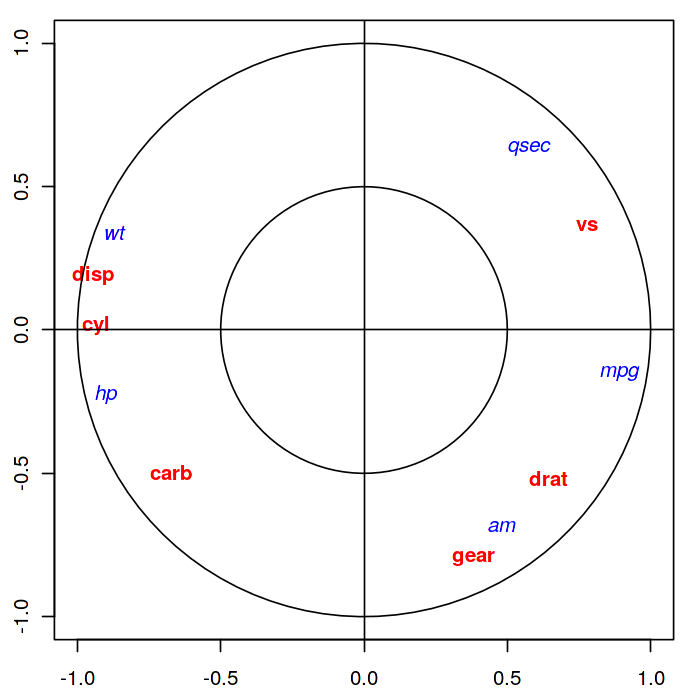
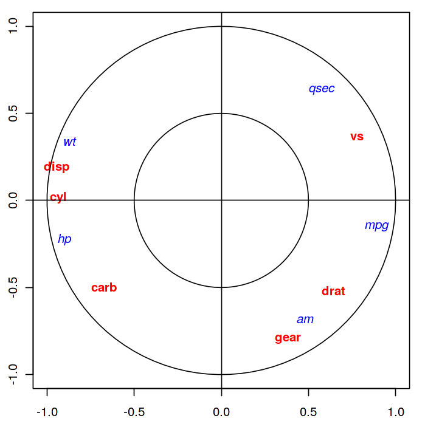
Ce plan identifie deux extrêmes : les grandes voitures (en bas à gauche) et les petites voitures (en haut à droite). La corrélation des données sur ce plan est de 0.98, une relation linéaire semble donc évidente entre ces deux groupes.
La projection des variables sur le cercle des corrélations montre que toutes les variables sont expressives (près du cercle).
Analyse Factorielle des correspondances#
On cherche à expliquer la liaison entre deux variables qualitatives \(X\) et \(Y\), caractérisées par un ensemble de couples de modalités \((x_i,y_i)\). On note \(x_1\cdots x_J\) et \(y_1\cdots y_K\) les modalités distinctes de \(X\) et \(Y\) respectivement.
Plus précisément, l’analyse factorielle des correspondances (AFC) vise à définir un modèle statistique permettant de fournir des paramètres dont la représentation graphique illustre les correspondances entre les modalités de ces variables. Dans sa version “analyse de données”, l’AFC cherche à réduire la dimension des données en effectuant la décomposition factorielle des nuages de points associés aux profils lignes et aux profils colonnes du tableau de contingence croisant les modalités des deux variables (L’AFC est une double ACP sur les deux tableaux de profils). On aborde à la fin du chapitre une modélisation statistique de l’AFC, en supposant que les fréquences d’observation correspondent à l’observation d’une probabilité théorique, dont la distribution modélise le tableau de contingence des deux variables.
Notations#
Le tableau de contingence \({\bf T}\) entre les \(X\) et \(Y\), vu comme une matrice, est défini par
\(y_1\) |
\(\cdots\) |
\(y_k\) |
\(\cdots\) |
\(y_K\) |
total |
|
|---|---|---|---|---|---|---|
\(x_1\) |
\(n_{11}\) |
\(\cdots\) |
\(n_{1k}\) |
\(\cdots\) |
\(n_{1K}\) |
\(n_{1.}\) |
\(\vdots\) |
\(\vdots\) |
\(\vdots\) |
\(\vdots\) |
\(\vdots\) |
\(\vdots\) |
\(\vdots\) |
\(x_j\) |
\(n_{j1}\) |
\(\cdots\) |
\(n_{jk}\) |
\(\cdots\) |
\(n_{jK}\) |
\(n_{j.}\) |
\(\vdots\) |
\(\vdots\) |
\(\vdots\) |
\(\vdots\) |
\(\vdots\) |
\(\vdots\) |
\(\vdots\) |
\(x_J\) |
\(n_{J1}\) |
\(\cdots\) |
\(n_{Jk}\) |
\(\cdots\) |
\(n_{JK}\) |
\(n_{J.}\) |
total |
\(n_{.1}\) |
\(\cdots\) |
\(n_{.k}\) |
\(\cdots\) |
\(n_{.K}\) |
\(n\) |
où \(n_{j.}\) (resp \(n_{.k}\) )sont les effectifs marginaux représentant le nombre de fois où \(x_j\) (resp. \(y_k\)) apparaît, et \(n_{jk}\) le nombre d’apparitions du couple \((x_j,y_k)\).
Les fréquences conjointes \(f_{jk}=\frac{n_{jk}}{n}\) et les fréquences marginales sont stockées dans des vecteurs \({\bf g_J}=\begin{pmatrix}f_{1.}\ldots f_{J.} \end{pmatrix}^T\) et \({\bf g_K}=\begin{pmatrix}f_{.1}\ldots f_{.K} \end{pmatrix}^T\).
On note aussi \({\bf D_J}=diag\left (f_{1.}\ldots f_{J.}\right )\) et \({\bf D_K}=diag\left (f_{.1}\ldots f_{.K} \right )\).
Dans le tableau de contingence \(\mathbf T\), on lit le \(j^e\) profil ligne \([\frac{n_{j1}}{n_{j.}}\ldots \frac{n_{jK}}{n_{j.}}]\), considéré comme un vecteur de \(\mathbb{R}^K\) et le \(k^e\) profil colonne \([\frac{n_{1k}}{n_{.k}}\ldots \frac{n_{Jk}}{n_{.k}}]\) considéré comme un vecteur de \(\mathbb{R}^J\). Ces profils sont rangés dans des matrices de profils lignes \({\bf A}\in\mathcal{M}_{KJ}(\mathbb{R})\) et de colonnes \({\bf B}\in\mathcal{M}_{JK}(\mathbb{R})\) définies par \({\bf A}=\frac{1}{n}{\bf T^TD_J^{-1}}\textrm{ et } {\bf B}=\frac{1}{n}{\bf T D_K^{-1}}\)
Double ACP#
L’analyse factorielle des correspondances peut être considérée comme le résultat d’une double ACP :
une effectuée sur les profils colonnes dans \(\mathbb{R}^J\)
une effectuée sur les profils lignes dans \(\mathbb{R}^K\)
relativement à la métrique du \(\chi^2\) de matrice \({\bf D_K^{-1}}\) pour l’analyse en lignes et \({\bf D_J^{-1}}\) pour l’analyse en colonnes.
Ainsi, par exemple, la distance entre deux modalités \(x_l\) et \(x_p\) de \(X\) est donnée par :
\(\Vert {\bf A_{.l}}-{\bf A_{.p}}\Vert^2_{{\bf D_K^{-1}}} = \displaystyle\sum_{i=1}^K\frac{1}{f_{.i}}\left (A_{i,l}-A_{i,p} \right )^2\)
où \({\bf A_{.l}}\) est la \(l^e\) colonne de \({\bf A}\). La métrique du \(\chi^2\) introduit les inverses des fréquences marginales des modalités de \(Y\) comme pondérations des écarts entre éléments de deux profils relatifs à \(X\) (et réciproquement). Elle attribue donc plus de poids aux écarts correspondants à des modalités de faible effectif (rares) pour \(Y\).
ACP dans \(\mathbb{R}^J\)#
L’ACP sur les profils colonnes est réalisée en recherchant les éléments propres de \({\bf BA}\), symétrique par rapport à la métrique \({\bf D_J^{-1}}\) et semi définie positive. On note \(\bf U\) la matrice des vecteurs propres. Cette ACP fournit une représentation des modalités de \(Y\), réalisée au moyen des lignes de la matrice des composantes principales \({\bf C_K}={\bf B^TD_J^{-1}U}\).
ACP dans \(\mathbb{R}^K\)#
L’ACP sur les profils lignes est réalisée en recherchant les éléments propres de \({\bf AB}\), symétrique par rapport à la métrique \({\bf D_K^{-1}}\) et semi définie positive. On note \(\bf V\) la matrice des vecteurs propres. Cette ACP fournit une représentation des modalités de \(X\), réalisée au moyen des lignes de la matrice des composantes principales \({\bf C_J}={\bf A^TD_K^{-1}V}\).
Puisque \(\bf U\) contient les vecteurs propres de \({\bf BA}\) et \(\bf V\) ceux de \({\bf AB}\), il suffit de réaliser en fait une seule ACP, les résultats de l’autre s’en déduisant simplement : si \(\bf \Lambda\) est la matrice des valeurs propres (hors \(\lambda_0=0\)) communes aux deux ACP :
\({\bf V} ={\bf AU\Lambda^{-\frac{1}{2}}}\textrm { et } {\bf U} ={\bf BV\Lambda^{-\frac{1}{2}}}\) Alors
\({\bf C_K}={\bf B^TD_J^{-1}U }= {\bf B^TD_J^{-1}BV\Lambda^{-\frac{1}{2}}} = {\bf D_K^{-1}ABV \Lambda^{-\frac{1}{2}}} = {\bf D_K^{-1}V \Lambda^{\frac{1}{2}}}\) et
\({\bf C_J}={\bf A^TD_K^{-1}V}= {\bf D_J^{-1}U \Lambda^{\frac{1}{2}}}\) d’où
\({\bf C_K}={\bf B^TC_J\Lambda^{-\frac{1}{2}}} \textrm{ et } {\bf C_J}={\bf A^TC_K\Lambda^{-\frac{1}{2}}}\)
Remark 23
Soit deux matrices \({\bf A}\in\mathcal{M}_{KJ}(\mathbb{R)}\) et \({\bf B}\in\mathcal{M}_{JK}(\mathbb{R})\). Les valeurs propres non nulles de \({\bf AB}\) et \({\bf BA}\) sont identiques avec le même degré de multiplicité. De plus, si \(\bf u\) est vecteur propre de \({\bf BA}\) associé à la valeur propre \(\lambda\neq 0\), alors \({\bf v} = {\bf Au} \) est vecteur propre de \({\bf AB}\) associé à la même valeur propre.
Représentation graphique#
La décomposition de \(\mathbf T/n\) donne :
Cette quantité est appelée taux de liaison entre les modalités \(j\) et \(k\). En se limitant au rang \(q\) on obtient pour chaque couple de modalité \((j,k)\) de \(\mathbf T\) une approximation de son écart relatif à l’indépendance, comme produit scalaire des deux vecteurs \(\frac{(\lambda_i)^{\frac{1}{4}}}{f_{j.}}u_j\) et \(\frac{(\lambda_i)^{\frac{1}{4}}}{f_{.k}}v_k\), termes génériques des matrices \({\bf D_J^{-1}U\Lambda^{\frac{1}{4}}}\) et \({\bf D_K^{-1}V\Lambda^{\frac{1}{4}}}\).
La représentation graphique de ces vecteurs (par exemple avec \(q=2\)), appelée biplot, donne la correspondance entre les deux modalités \(x_j\) et \(y_k\). Lorsque ces deux modalités, éloignées de l’origine, sont voisines (resp. opposées), leur produit scalaire est de valeur absolue importante ; leur cellule conjointe contribue alors fortement et de manière positive (resp. négative) à la dépendance entre les deux variables. L’analyse factorielle des correspondances apparaît ainsi comme la meilleure reconstitution des fréquences \(f_{jk}\), ou encore la meilleure représentation des écarts relatifs à l’indépendance.
Interprétation#
Les qualités de représentation dans la dimension choisie et les contributions des modalités de \(X\) ou de \(Y\) se déduisent facilement de celles de l’ACP. Ces quantités sont utilisées à la fois pour choisir la dimension de l’analyse factorielle des correspondances et pour interpréter ses résultats dans la dimension choisie.
Inertie et test d’indépendance#
En analyse en composantes principales centrée réduite, l’inertie totale du nuage de points est égale au nombre de variables. En AFC, l’inertie totale du nuage des profils lignes est égale à l’inertie totale du nuage des profils colonnes, égale au \(\chi^2\) d’indépendance entre les deux variables qualitatives.
La valeur de l’inertie est donc un indicateur de la dispersion des nuages de points et une mesure de liaison entre les deux variables qualitatives, appelée mesure d’écart à l’indépendance.
Interprétation des valeurs propres#
Les valeurs propres des ACP renseignent sur la dispersion des nuages de profils lignes et colonnes :
Une valeur propre proche de 1 indique une dichotomie parfaite du tableau \(\mathbf T\), qui peut être décomposé après reclassement des modalités en deux blocs distincts
Plus généralement \(p\) valeurs propres proches amènent à \(k+1\) blocs distincts
Si toutes les valeurs propres sont proches de 1, on aboutit à l’effet Guttman : il existe une correspondance entre chaque modalité ligne et une modalité colonne “associée”. Avec une réorganisation des modalités, les effectifs importants se trouvent alors le long de la diagonale.
Qualité globale#
A \(q\) fixé, la qualité globale de la représentation se mesure comme dans le cadre de l’ACP, comme le rapport entre les \(q\) premières valeurs propres \(\lambda_i\) et la somme sur tout le spectre.
On montre que la qualité de la représentation dans la \(i^e\) dimension s’écrit \(\frac{n\lambda_i}{\chi^2}\)
Qualité de chaque modalité#
Comme dans l’ACP également, la qualité d’une modalité de \(X\) (resp. \(Y\)) se quantifie par le carré du cosinus de l’angle entre le vecteur représentant cette modalité dans \(\mathbb{R}^K\) (resp. \(\mathbb{R}^J\)) et sa projection orthogonale au sens de \({\bf D_K^{-1}}\) (resp. \({\bf D_J^{-1}}\)) dans le sous-espace principal de dimension \(q\). Ces cosinus se calculent très simplement en faisant le rapport des sommes appropriées des carrés des coordonnées extraites des lignes de \({\bf C_J}\) (resp. \({\bf C_K}\)).
Inertie expliquée#
L’inertie totale du nuage des profils lignes (resp. colonnes) est égale à la somme de toutes les valeurs propres \(\lambda_i\). La part due au \(j^e\) profil ligne (resp. \(k^e\) profil colonne) est \(f_{j.}\displaystyle\sum_i \left (\mathbf{C_J}(ji) \right )^2\) (resp. \(f_{.k}\displaystyle\sum_i \left (\mathbf{C_K}(ik) \right )^2\)).
Les contributions à l’inertie selon chaque axe se calculent de la même manière, sans sommation sur \(i\). Elles sont utilisées pour sélectionner les modalités les plus importantes (i.e. celles qui importent le plus dans la définition de la liaison entre \(X\) et \(Y\)).
Choix de q#
Comme dans le cas de l’ACP, le choix de l’espace de représentation est important. On peut estimer \(q\) comme en ACP (pourcentage de l’inertie expliquée, décroissance des valeurs propres), ou utiliser une approche probabiliste : si
est l’estimation d’ordre \(q\) de \(n_{jk}\) alors sous certaines conditions (\(n\) grand, modèle multinomial…), on montre que
\(\displaystyle\sum_{j=1}^J\displaystyle\sum_{k=1}^K\frac{\left (n_{jk}-\nu_{jk}^q \right )^2}{\nu_{jk}^q}\approx \displaystyle\sum_{i\geq q+1} \lambda_i\)
suit approximativement une loi \(\chi^2\) à \((J-q-1)(K-q-1)\) degrés de liberté. On peut donc retenir \(q\) comme étant la plus petite dimension telle que cette quantité est inférieure à la valeur limite de cette loi.
Modèle statistique#
On suppose que chaque fréquence \(f_{jk}\) correspond à l’observation d’une probabilité théorique \(\pi_{jk}\) et on modélise donc \(\bf T\) par la distribution correspondante. Le modèle décrivant cette distribution permet d’expliciter la probabilité.
Modèle log linéaire#
Souvent, le nombre \(n\) est fixé a priori. La distribution conjointe des effectifs \(n_{jk}\) est alors conditionnée par \(n\) et est une loi multinomiale de paramètre \(\pi_{jk}\) et d’espérance \(n\pi_{jk}\).
Par définition, les variables \(X\) et \(Y\) sont indépendantes si \(\pi_{jk}=\pi_{j.}\pi_{.k}\). Dans le cas contraire, on peut écrire
\(\pi_{jk} = \pi_{j.}\pi_{.k}\frac{\pi_{jk}}{\pi_{j.}\pi_{.k}}\)
En passant au log, on linéarise en
\(ln\left (\pi_{jk}\right ) = ln (\pi_{j.}) + ln (\pi_{.k}) + ln \left( \frac{\pi_{jk}}{\pi_{j.}\pi_{.k}}\right )\)
Ce modèle est saturé car il comporte autant de paramètres que de données. L’indépendance est vérifiée si le dernier terme de couplage est nul pour tout \((j,k)\). Les paramètres du modèle sont estimés en maximisant la log vraisemblance.
Modèle de corrélation#
Dans ce modèle, on écrit
\(\pi_{jk} = \pi_{j.}\pi_{.k} + \displaystyle\sum_{i=1}^q \sqrt{\lambda_i} u^i_jv^i_k\)
où \({\bf u^i}\) (resp. \({\bf v^i}\)) sont les vecteurs propres de \({\bf BA}\) (resp. \({\bf AB}\)), \(\lambda_i\) les valeurs propres associées (qui sont identiques pour les deux matrices), et \(q\leq min(J-1,K-1)\).
Les contraintes \(\displaystyle\sum_{j=1}^J u^i_j = \displaystyle\sum_{k=1}^K v^i_k = 0\) et \({\bf (u^i)^TD_J^{-1} u^l }= {\bf (v^i)^TD_K^{-1} v^l} = \delta_{il}\) (vecteurs propres orthonormés) permettent d’identifier les paramètres du modèle.
Les estimations des paramètres \(\pi_{j.}\pi_{.k} ,\lambda_i,u^i,v^i\) peuvent être réalisées par maximum de vraisemblance ou par moindres carrés.
Exemple#
On utilise ici des données open source du gouvernement, présentant le résultat du premier tour des élections présidentielles de 2017.
Region |
HAMON |
MACRON |
ASSELINEAU |
FILLON |
CHEMINADE |
|
|---|---|---|---|---|---|---|
0 |
Grand-Est |
151296 |
615775 |
30223 |
586390 |
6078 |
1 |
Nelle-Aquitaine |
240175 |
851372 |
26667 |
602884 |
6264 |
2 |
AURA |
256620 |
1026255 |
41352 |
846252 |
7602 |
3 |
Bourgogne-FC |
87382 |
338187 |
14330 |
304387 |
2842 |
4 |
Bretagne |
180827 |
581076 |
13419 |
380815 |
3400 |
5 |
Centre-Val-de-Loire |
83552 |
323724 |
12075 |
300324 |
2882 |
6 |
Corse |
5780 |
28528 |
965 |
39453 |
253 |
7 |
Ile-de-France |
430404 |
1612816 |
64406 |
1249770 |
9796 |
8 |
Occitanie |
216362 |
740037 |
28603 |
566045 |
5524 |
9 |
Hauts-de-France |
166640 |
630300 |
26043 |
521389 |
5688 |
10 |
Normandie |
113744 |
423075 |
14303 |
370188 |
3544 |
11 |
Pays-de-la-Loire |
143491 |
575832 |
15529 |
516428 |
3731 |
12 |
PACA |
113344 |
520909 |
25948 |
615455 |
4569 |
13 |
Outremer |
101948 |
389440 |
18725 |
314017 |
3425 |
Region |
MELENCHON |
LASSALLE |
FILLON |
DUPONT-AIGNAN |
POUTOU |
LEPEN |
ARTHAUD |
|
|---|---|---|---|---|---|---|---|---|
0 |
Grand-Est |
484810 |
30508 |
586390 |
182200 |
34468 |
825600 |
24272 |
1 |
Nelle-Aquitaine |
703505 |
91915 |
602884 |
155600 |
49649 |
640228 |
21442 |
2 |
AURA |
805846 |
53282 |
846252 |
215951 |
43530 |
867874 |
24670 |
3 |
Bourgogne-FC |
276954 |
15843 |
304387 |
87263 |
18529 |
387658 |
11492 |
4 |
Bretagne |
385736 |
19097 |
380815 |
87928 |
27092 |
306644 |
14296 |
5 |
Centre-Val-de-Loire |
252307 |
13570 |
300324 |
82060 |
16282 |
329470 |
11365 |
6 |
Corse |
21314 |
8711 |
39453 |
4462 |
1374 |
43041 |
495 |
7 |
Ile-de-France |
1225311 |
36358 |
1249770 |
226266 |
45715 |
708340 |
23592 |
8 |
Occitanie |
734223 |
75483 |
566045 |
135405 |
35219 |
762104 |
16777 |
9 |
Hauts-de-France |
633322 |
22411 |
521389 |
160722 |
33653 |
1003221 |
29194 |
10 |
Normandie |
362535 |
13900 |
370188 |
98957 |
23816 |
452702 |
15196 |
11 |
Pays-de-la-Loire |
403454 |
16988 |
516428 |
109842 |
26340 |
364267 |
16018 |
12 |
PACA |
515419 |
29551 |
615455 |
119025 |
21316 |
774791 |
10439 |
13 |
Outremer |
256149 |
7748 |
314017 |
29505 |
17599 |
213553 |
13180 |
On décide dans l’analyse d’enlever le candidat LASSALLE, dont les votes sont concentrés dans les Pyrenées et en Corse (et qui introduit un biais dans l’étude).
A partir de ce tableau de données \(\bf T\), on calcule les tableaux de fréquences en lignes et en colonnes, ainsi que les profils ligne et colonne moyens. Comme en ACP, on s’intéresse à l’inertie du nuage de points, mais pour ce faire on utilise la distance du \(\chi^2\). Avec cette métrique, la distance entre deux lignes (ou deux colonnes) ne dépend pas des poids respectifs des colonnes (ou lignes). Par exemple, les différents candidats obtiennent des scores très différents et l’usage de la métrique euclidienne aurait donné trop de poids aux candidats qui ont obtenu des scores élevés. De plus, la métrique du \(\chi^2\) possède la propriété d’équivalence distributionnelle : si on regroupe deux modalités lignes (colonnes), les distances entre les profils-colonne (lignes), ou entre les autres profils-lignes (colonnes) restent inchangées.
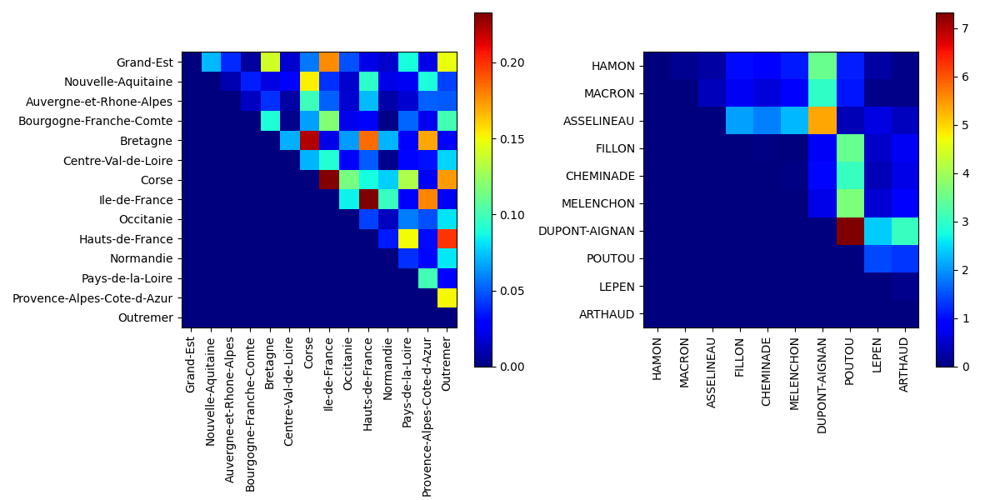
On peut également calculer les taux de liaisons, définis pour deux individus \(j\) et \(k\) par \(\frac{f_{jk}-f_{j.}f_{.k}}{f_{j.}f_{.k}}\). Par exemple, le taux de liaison entre HAMON et Grand-Est est égal à -0.2003, tandis que le taux de liaison entre CHEMINADE et Nouvelle-Aquitaine est égal à 0.2068. Le taux de liaison s’interpréte comme suit : le score du candidat dans la région est 20% moins élevé (ou 20.6% moins élevé) que le score théorique que l’on observerait si les votes étaient indépendants des régions.
Notons que \(f_{j.}f_{.k}\) représente le poids théorique de chaque case du tableau des fréquences. La somme de ces coefficients vaut 1. La moyenne de la série des taux de liaisons pondérée par les \(f_{j.}f_{.k}\) est nulle. De même, la variance de cette série avec la même pondération vaut \(\chi^2\), et ici est égale à 0.0301.
On réalise ensuite une AFC, par analyse spectrale des matrices \(\bf X^T\bf X\) et \(\bf X\bf X^T\), où \(\bf X\) est la matrice de terme général \(f_{jk}/\sqrt{f_{j.}f_{.k}}\).
Le nombre de valeurs propres produites par la recherche des facteurs principaux est égal au minimum du nombre de lignes et du nombre de colonnes du tableau de contingence. La première valeur propre est systématiquement égale à 1, et n’est pas utilisée dans les résultats. Les autres valeurs propres sont des nombres positifs inférieurs à 1 et leur somme est égale à \(\chi^2\).
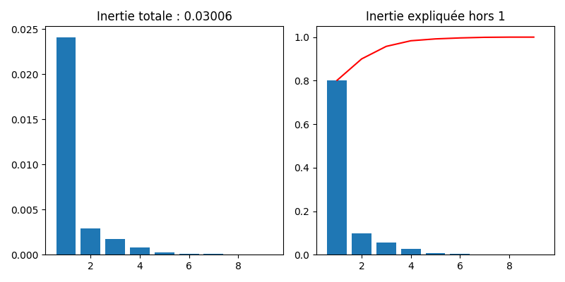 
On utilise alors les vecteurs propres (axes factoriels) pour analyser les données lignes et colonnes. Pour chaque analyse, on reporte (illustré ici sur l’analyse en lignes) :
La masse, qui rappelle les fréquences marginales des lignes c’est-à-dire le profil colonne moyen. Contrairement à l’ACP normée, dans laquelle chaque individu était affecté du même poids, les régions ont ici un poids dépendant de l’effectif total d’électeurs inscrits dans la région.
La qualité qui indique les qualités de représentation des individus ligne sur les deux premiers axes factoriels : c’est la somme des carrés des composantes de chaque individu sur les 2 axes, normalisée par la somme des carrés des composantes sur tous les axes.
La contribution de chaque individu à la formation de chaque axe factoriel
Region |
Masse |
Coord1 |
Coord2 |
Qualité |
contrib1 |
contrib2 |
|
|---|---|---|---|---|---|---|---|
0 |
Grand-Est |
0.082561 |
-0.081478 |
0.030469 |
0.033810 |
0.1031 |
0.05 |
1 |
Nelle-Aquitaine |
0.092573 |
0.022322 |
-0.009848 |
0.002607 |
0.0129 |
0.1404 |
2 |
AURA |
0.116102 |
0.002463 |
0.020096 |
0.000032 |
0.0005 |
0.0074 |
3 |
Bourgogne-FC |
0.042922 |
-0.049796 |
0.021913 |
0.012884 |
0.0203 |
0.0048 |
4 |
Bretagne |
0.055616 |
0.074398 |
-0.000143 |
0.028325 |
0.0727 |
0.00599 |
5 |
Centre-Val-de-Loire |
0.039694 |
-0.027564 |
0.034140 |
0.003982 |
0.0057 |
0.026 |
6 |
Corse |
0.004089 |
-0.089963 |
0.097463 |
0.036278 |
0.0061 |
0.0528 |
7 |
Ile-de-France |
0.157099 |
0.099907 |
0.022705 |
0.048773 |
0.3461 |
0.0099 |
8 |
Occitanie |
0.090960 |
-0.024738 |
-0.020736 |
0.003126 |
0.0066 |
0.2115 |
9 |
Hauts-de-France |
0.090114 |
-0.113101 |
-0.015944 |
0.061802 |
0.2215 |
0.1268 |
10 |
Normandie |
0.052720 |
-0.035129 |
0.014011 |
0.006437 |
0.0116 |
0.0004 |
11 |
Pays-de-la-Loire |
0.061053 |
0.049348 |
0.050417 |
0.012418 |
0.0311 |
0.1115 |
12 |
PACA |
0.076388 |
-0.085523 |
0.044826 |
0.035070 |
0.1061 |
0.1766 |
13 |
Outremer |
0.038108 |
0.073346 |
0.038647 |
0.026537 |
0.051 |
0.0222 |
On représente alors graphiquement les individus ligne et colonne sur le premier plan factoriel.
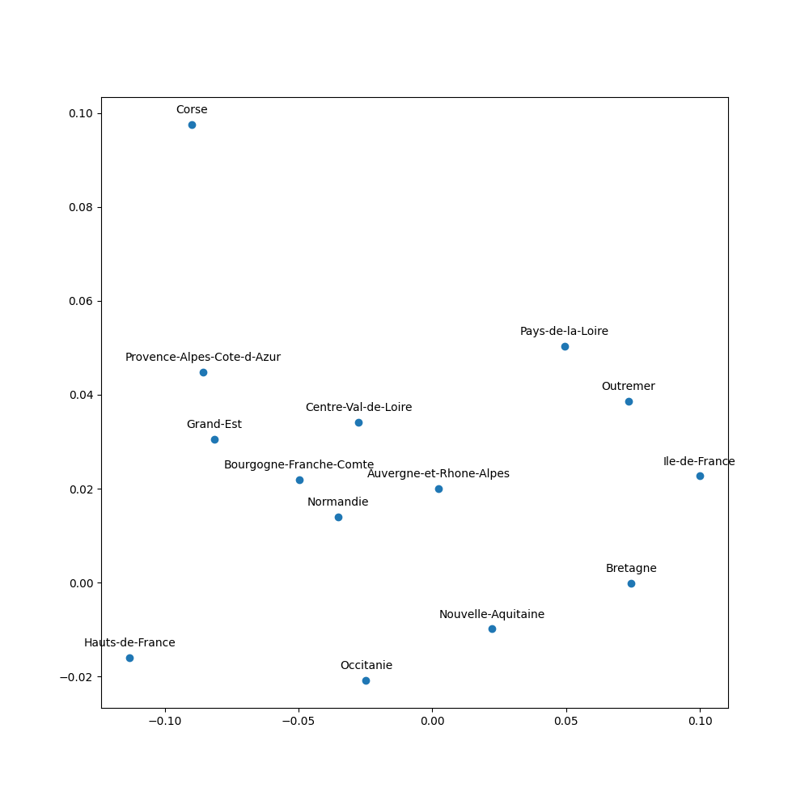 |
|
|---|---|
Individus ligne |
Individus colonne |

On en déduit alors l’analyse suivante (ici proposée sur les candidats) :
Premier axe : Le Pen représente 67% de l’inertie de cet axe. Macron, à l’opposé en représente 19%. Clairement, cet axe oppose Le Pen à Macron, mais les autres candidats “les plus importants” ont un score du même signe que celui de Macron.
Fillon représente 63% de son inertie et s’oppose à Hamon, Poutou et Mélenchon. Macron et Le Pen sont insignifiants sur cet axe. Cet axe représente l’opposition classique droite / gauche.
Le Pen est placée assez loin de l’origine sur la représentation graphique: l’inertie de la modalité Le Pen (54%) est bien plus importante que sa masse (21%). Dit autrement, les scores de Le Pen présentent une grande variabilité selon les régions, plus élevée que celle des scores de Macron (inertie 16% pour une masse de 24,3%) ou encore Mélenchon (inertie 5%, inertie 19,8%). Les électeurs de Le Pen, même s’ils sont plus nombreux que lors des scrutins précédents, restent inégalement répartis sur le territoire.
Enfin, la première source de variation dans les votes est une opposition Le Pen / Macron, indépendante des oppositions droite / gauche traditionnels.
Analyse des correspondances multiples#
Tandis que l’analyse factorielle des correspondances permet d’expliquer la liaison entre deux variables qualitatives, l’analyse des correspondances multiples (ACM) s’intéresse au cas où l’on dispose de \(p\geq 2\) variables. C’est l’équivalent de l’ACP pour les variables qualitatives.
Notations#
On dispose d’un tableau de données \(\mathbf{H}=(h_{i,j})\) à \(n\) lignes et \(p\) colonnes, où \(n\) est le nombre d’individus, \(p\) le nombre de variables qualitatives mesurées et pour \(i\in[\![1,n]\!],j\in[\![1,p]\!],h_{ij}\in\mathcal{M}_j\), \(\mathcal{M}_j\) étant l’ensemble des modalités de la j\(^e\) variable. Si \(m_j\) est le cardinal de \(\mathcal{M}_j\), alors \(m=\sum_{k=1}^p m_k\) est le nombre total de modalités.
Definition 43 (Tableau disjonctif complet)
Le tableau disjonctif complet \(\mathbf T\) des données est un tableau \(n\times m\) tel que
\((\forall i\in[\![1,n]\!],j\in[\![1, m]\!])\; \mathbf T_{ij} = \left \{ \begin{array}{cl} 1&\textrm{si l'individu i possède la modalité j}\\0 & \textrm{sinon}\end{array}\right .\)
On déduit de ce tableau disjonctif le tableau de Burt correspondant, \(\mathbf B=\mathbf T^T \mathbf T\), qui rassemble les croisements deux à deux de toutes les variables, i.e tous les tableaux de contingence des variables deux à deux. Sur la diagonale de \(\mathbf B\) se trouvent les coefficients \(B_{ii}=n_i\), donnant le nombre d’individus possédant la modalité \(i\). Les autres coefficients \(B_{ij} = \mathbf{T_{\bullet i}}^T \mathbf {T_{\bullet j}}\) quantifient le nombre d’individus ayant les modalités \(i\) et \(j\).
Analyse#
Tableau de contingence de l’ACM#
En analyse des correspondances multiples, on traite \(\mathbf T\) comme un tableau de contingence. Les totaux en ligne sont alors égaux au nombre de variables \(p\), les totaux en colonne correspondent au nombre d’individus ayant la modalité correspondant à la colonne traitée. Pour une colonne \(j\), on note ce total \(n_j\) Le total de tous les coefficients de \(\mathbf T\) vaut donc \(np\).
Comme dans le cas de l’AFC, l’ACM considère les fréquences, les profils ligne et les profils colonne.
Pour les fréquences :
\(f_{ij}=T_{ij}/np\) est la fréquence conjointe et vaut donc \(1/np\) si l’individu \(i\) possède la modalité \(j\) et 0 sinon. On range ces coefficients dans une matrice \(\mathbf{F}\in\mathcal{M}_{nm}(\mathbb{R})\)
le poids des lignes est constant et vaut \(1/n\). On note alors \(\mathbf{a} = (\frac{1}{n}\cdots \frac{1}{n})^T\in\mathbb{R}^n\) le vecteur des poids des individus.
le poids des colonnes vaut \(n_j/np\), et est d’autant plus fort que la modalité \(j\) est fréquente. On note alors \(\mathbf{b} = (\frac{n_1}{np}\cdots \frac{n_m}{np})^T\in\mathbb{R}^m\) le vecteur des poids des modalités.
Comme en analyse factorielle des correspondances, on note \({\bf D_n}=diag\left ({\bf a}\right )\) et \({\bf D_m}=diag\left ({\bf b} \right )\).
Pour les profils ligne et colonne :
on lit dans \(\mathbf T\) le i\(^e\) profil ligne, considéré comme un vecteur de \(\mathbb{R}^m\), de composantes \(T_{ij}/p,j\in[\![1,m]\!]\). Ces profils sont rangés dans une matrice \({\bf A}\in\mathcal{M}_{nm}(\mathbb{R})\) et on a \({\bf A}={\bf D_n^{-1}F}\).
on lit dans \(\mathbf T\) le j\(^e\) profil colonne, considéré comme un vecteur de \(\mathbb{R}^n\), de composantes \(T_{ij}/n_j,i\in[\![1,n]\!]\). Ces profils sont rangés dans \({\bf B}\in\mathcal{M}_{nm}(\mathbb{R})\) et on a \({\bf B}={\bf FD_m^{-1}}\).
L’ACM considère, comme l’AFC, deux nuages de points centrés :
le nuage des \(n\) individus dans \(\mathbb{R}^m\), i.e. les \(n\) lignes de la matrice \({\bf D_n^{-1}(F-ab^T})\). Chaque individu est pondéré par \(1/n\)
le nuage des \(m\) modalités dans \(\mathbb{R}^n\), i.e. les \(n\) lignes de la matrice \({\bf (F-ab^T)D_m^{-1}}\). Chaque modalité \(j\) est pondérée par \(n_j/np\).
Distances entre individus et entre modalités#
En analyse des correspondances multiples, on utilise la distance du \(\chi^2\) dans \(\mathbb{R}^m\) et \(\mathbb{R}^n\) :
dans l’espace des individus, la métrique est \(\mathbf {D_m}^{-1}\) :
\(\chi^2(i,i') = (\mathbf{A}_{i\bullet}-\mathbf{A}_{i'\bullet})^T\mathbf {D_m}^{-1} (\mathbf{A}_{i\bullet}-\mathbf{A}_{i'\bullet}) = \displaystyle\sum_{j=1}^m\frac{1}{f_{\bullet j}}\left (\frac{T_{ij}-T_{i'j}}{p} \right )^2 = \frac {n}{p}\displaystyle\sum_{j=1}^m\frac{1}{{n_j}}\left (T_{ij}-T_{i'j}\right )^2\) Deux individus sont proches s’ils possèdent les mêmes modalités, sachant que l’on donne plus de poids au fait que ces deux individus ont en commun une modalité rare (\(n_s\) petit).
dans l’espace des modalités, la métrique est \(\mathbf {D_n}^{-1}\) :
\(\chi^2(j,j') = (\mathbf{B}_{\bullet j}-\mathbf{B}_{\bullet j'})^T\mathbf {D_n}^{-1} (\mathbf{B}_{\bullet j}-\mathbf{B}_{\bullet j'}) = n\displaystyle\sum_{i=1}^n\left (\frac{T_{ij}}{n_j} -\frac{T_{ij'}}{n_{j'}}\right )^2\) et deux modalités sont proches si elles sont possédées par les mêmes individus.
Remark 24
On a de plus \(\chi^2(j,\mathbf{a}) = \frac{n}{n_j}-1\) et \(f_{\bullet j}\chi^2(j,\mathbf{a}) = \frac{1}{p}\left( 1-\frac{n_j}{n}\right )\). Donc la distance d’une modalité au centre du nuage est d’autant plus grande que la modalité est rare et la part de l’inertie totale, due à une modalité est d’autant plus grande que la modalité est rare. On évite donc en pratique de conserver dans l’analyse les modalités trop rares.
De même, puisque \(\displaystyle\sum_{k\in \mathcal{M}_j}f_{\bullet k}\chi^2(k,\mathbf{a}) = \frac{1}{p}\left( m_j-1\right )\), la part de l’inertie totale, due à une variable \(j\) est d’autant plus grande que le nombre de modalités de cette variable est grand. Là aussi, on évite en pratique de conserver dans l’analyse des variables ayant des nombres de modalités trop différents.
Principe de l’ACM#
L’analyse en composantes multiples consiste alors à appliquer l’analyse factorielle des correspondances du tableau des contingences \(\mathbf T\), c’est-à-dire effectuer une ACP pondérée des nuages des point-individus et des point-modalités .
Une différence notable vient cependant de l’interprétation de l’inertie de ces nuages de points individus (\(I(\mathbf{A})\)) et modalités (\(I(\mathbf{B})\)). En AFC, on pouvait interpréter statistiquement cette inertie en terme de \(\chi^2/n\) mesurant l’indépendance entre les deux variables qualitatives. Ici, ce n’est plus le cas puisque l’on peut montrer que \(I(\mathbf{A}) = I(\mathbf{B})= m/p-1\). L’inertie dépend donc du nombre moyen \(m/p\) de catégories par variable.
Remark 25
Les anglo-saxons considère que l’ACM consiste à effectuer l’analyse factorielle des correspondances du tableau de Burt \(\mathbf T^T \mathbf T\), matrice symétrique de taille \(m\). Les profils ligne et colonne sont alors identiques et correspondent aux modalités que l’on veut analyser. On ne peut donc pas effectuer d’analyse des individus.
Interprétation des résultats#
Inertie expliquée#
L’inertie totale, égale comme nous l’avons vu à \(m/p-1\) se calcule également comme la somme des valeurs propres \(\lambda_1+\cdots +\lambda_r\), où \(r=min(n-1,m-p)\) est le nombre de valeurs propres non nulles issues de l’ACP. La part d’inertie expliquée par l’axe \(z\) est alors \(\lambda_z/(\lambda_1+\cdots +\lambda_r)\). En revanche, point important, le nombre d’axes retenus pour l’interprétation ou le recodage ne peut pas être choisi à partir de ces pourcentages d’inertie expliquées, contrairement à l’ACP.
Contributions et représentation#
En reprenant les résultats de l’AFC, on montre que :
les individus les plus excentrés sur les plans factoriels sont ceux qui contribuent le plus
les modalités les plus excentrées ne sont pas nécessairement celles qui contribuent le plus. En effet, leur contribution dépend de leur fréquence.
la contribution d’une variable qualitative \(j\) à un axe \(z\) donne une idée de la liaison entre cette variable et la composante principale correspondant à \(z\)
une représentation graphique consiste alors à représenter les variables qualitatives sur un plan factoriel \((z,z')\) : on propose en abscisses (respectivement ordonnées) les contributions des variables à l’axe \(z\) (resp. \(z'\))
on évalue la qualité de la représentation de la même manière qu’en ACP, à l’aide des cosinus carrés. Si deux individus sont bien projetés alors s’ils sont proches en projections, ils sont effectivement proches dans leur espace d’origine et on peut alors interpréter leur proximité : deux individus se ressemblent (au sens de la distance du \(\chi^2\)) s’ils ont choisis les mêmes modalités et ; deux modalités se ressemblent (en terme de \(\chi^2\)) si elles sont possédées par les mêmes individus.
Cas particulier \(p\)=2#
Dans le cas \(p=2\), on observe \(2\) variables ayant respectivement \(m_1\) et \(m_2\) modalités. On se retrouve donc dans le cas où l’AFC s’applique et on peut :
soit analyser le tableau \(\mathbf{T}\in\mathcal{M}_{n,m_1+m_2}(\mathbb{R})\) par analyse en composantes multiples,
soit analyser le tableau de contingence \(\mathbf{K}\in\mathcal{M}_{m_1,m_2}(\mathbb{R})\) par AFC.
Si on note \(Sp(\mathbf{K}) = (\mu_i)\) et \(Sp(\mathbf{T}) = (\lambda_i)\) alors on montre que \(\mu_r = (2\lambda_r - 1)^2\) On en déduit qu’à chaque valeur propre de l’AFC correspondent deux valeurs propres de l’ACM \(\lambda_r = \frac{1\pm \sqrt{\mu_r}}{2}\), et une relation entre les coordonnées factorielles des deux analyses
\(\begin{eqnarray*} \mathbf{c}_1 = \begin{pmatrix} \mathbf{x_K}\\\mathbf{y_K}\end{pmatrix}\ &\textrm{pour}& \lambda_r = \frac{1+ \sqrt{\mu_r}}{2}\\ \mathbf{c}_2 = \begin{pmatrix} \mathbf{x_K}\\-\mathbf{y_K}\end{pmatrix}\ &\textrm{pour}& \lambda_r = \frac{1- \sqrt{\mu_r}}{2} \end{eqnarray*}\)
où \(\mathbf{x_K},\mathbf{y_K}\) sont les composantes principales des profils ligne et colonne de \(K\). De là viennent deux constats :
dans l’analyse en composantes multiples de 2 variables, on ne retient que les valeurs propres supérieures strictement à 1/2, les composantes correspondant aux valeurs propres inférieures se déduisant facilement
Les pourcentages d’inertie expliqués par les axes en ACM sont souvent très faibles et ne peuvent donc pas être interprétés comme en AFC et en ACP.
Exemple#
On souhaite évaluer l’effet de l’espèce de chêne sur des vins rouges vieillis en barrique. Un même vin a été vieilli dans six barriques différentes fabriquées avec deux types de chêne : les vins \(V_1\), \(V_5\) et \(V_6\) ont été élevés avec le premier type de chêne, tandis que les vins \(V_2\), \(V_3\) et \(V_4\) ont été élevés avec le second. Trois experts \(E_1,E_2,E_3\) ont ensuite choisi entre deux et cinq variables pour décrire les vins. Pour chaque vin et pour chaque variable, l’expert évalue l’intensité, codée soit comme une réponse binaire (i.e. fruité vs. non fruité), soit comme une réponse ternaire (i.e. pas fruité, un peu fruité, très fruité). On code le tout par un tableau disjonctif complet :
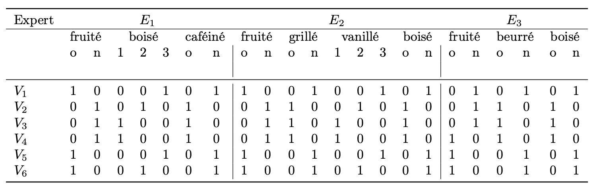
L’objectif de l’étude est d’une part de proposer une typologie des vins et d’autre part de savoir s’il y a un accord entre les échelles utilisées par les experts.
La figure suivante présente le résultat de l’analyse spectrale en lignes. Les tableaux qui suivent donnent les coordonnées des individus (\(S\)), la qualité de leur représentation et leur contribution (C\(\times 10^3\)) sur les trois premiers axes factoriels.

Vin |
\(V_1\) |
\(V_2\) |
\(V_3\) |
\(V_4\) |
\(V_5\) |
\(V_6\) |
|
|---|---|---|---|---|---|---|---|
\(S\) |
1 |
-0.951 |
0.787 |
1.018 |
0.951 |
-1.018 |
-0.787 |
2 |
-0.316 |
0.632 |
-0.316 |
-0.316 |
-0.316 |
0.632 |
|
3 |
0.43 |
0.387 |
0.103 |
-0.43 |
-0.103 |
-0.387 |
|
\(cos^2\) |
1 |
0.754 |
0.516 |
0.863 |
0.754 |
0.863 |
0.516 |
2 |
0.083 |
0.333 |
0.083 |
0.083 |
0.083 |
0.333 |
|
3 |
0.154 |
0.125 |
0.009 |
0.154 |
0.009 |
0.125 |
|
\(C\) |
1 |
176.68 |
120.986 |
202.334 |
176.68 |
202.334 |
120.986 |
2 |
83.333 |
333.333 |
83.333 |
83.333 |
83.333 |
333.333 |
|
3 |
267.821 |
216.945 |
15.234 |
267.821 |
15.234 |
216.945 |

On peut alors projeter les individus lignes ou colonnes sur le premier plan factoriel.


On peut alors par exemple utiliser le type de chêne (MONCHENE) comme une variable supplémentaire (ou illustrative) à projeter sur l’analyse après coup. On peut également projeter après analyse un nouveau vin (MONVIN, donc une observation supplémentaire), testé par les experts. Lorsque ces derniers n’étaient pas sûrs de la façon d’utiliser un descripteur, un modèle de réponse (1/2, 1/2) est utilisé pour représenter la réponse.
 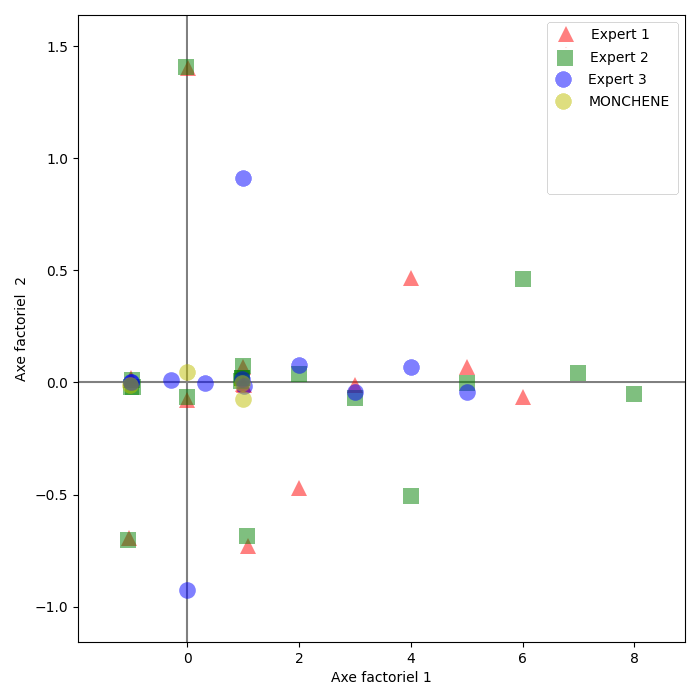
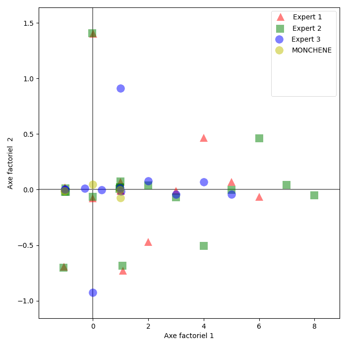